まだ厨二病が抜けないからターミナルでip command打つ時に表示される情報をちょっとかっこいいと思ってるからね
タイムライン要約
今日のまとめ
このタイムラインから要約された箇条書きは以下の通りです。
* **経済・企業・社会動向**: 日銀の早期利上げ観測や企業の不正会計・大規模な個人情報流出（タイムズカー、パーク24）、生命維持治療の新指針策定、関東マンション修繕談合、橋の「終活」といった、金融、企業、社会制度に関する重要なニュースが報じられました。
* **AI・テクノロジーの進化と影響**: LLMの活用事例やAIキャラチャットへの依存といった身近な話題から、ビル・ゲイツによるAIの危険性への警鐘、AIによる仕事の変革予測、郵便局でのドローン活用実証など、AIと先端技術に関する多面的な情報が共有されました。
* **ゲーム・エンタメの活発な動き**: 新作ゲームの発表やプレイテスト、既存タイトルの大型アップデートやサービス終了、人気ゲーム「原神」の常設カフェ開設（2027年）、映画館（TOHOシネマズ新宿）の平日昼間の予想外の混雑とMX4D体験、各種フィギュア予約情報など、幅広いエンターテイメント関連のニュースが注目を集めました。
* **経済・企業・社会動向**: 日銀の早期利上げ観測や企業の不正会計・大規模な個人情報流出（タイムズカー、パーク24）、生命維持治療の新指針策定、関東マンション修繕談合、橋の「終活」といった、金融、企業、社会制度に関する重要なニュースが報じられました。
* **AI・テクノロジーの進化と影響**: LLMの活用事例やAIキャラチャットへの依存といった身近な話題から、ビル・ゲイツによるAIの危険性への警鐘、AIによる仕事の変革予測、郵便局でのドローン活用実証など、AIと先端技術に関する多面的な情報が共有されました。
* **ゲーム・エンタメの活発な動き**: 新作ゲームの発表やプレイテスト、既存タイトルの大型アップデートやサービス終了、人気ゲーム「原神」の常設カフェ開設（2027年）、映画館（TOHOシネマズ新宿）の平日昼間の予想外の混雑とMX4D体験、各種フィギュア予約情報など、幅広いエンターテイメント関連のニュースが注目を集めました。
課金llmが、それヤダヤダやらない〜って駄々こね始めたので、local llmに、駄々こね始めたからさ、あいつ説得してよってお願いしてチャット貼り付けマンになってたらなんか課金llmが説得されて作業やり始めた（やったぜ）
生命維持治療終了の手順明記、4学会が新指針 患者の意思尊重原則
生命維持治療終了の手順明記、4学会が新指針 患者の意思尊重原則
中期債利回りが一段と上昇、2年債2％迫る 日銀早期利上げ観測で
中期債利回りが一段と上昇、2年債2%迫る 日銀早期利上げ観測で
「タイムズカー」大規模漏えい 運転免許画像など約660万件
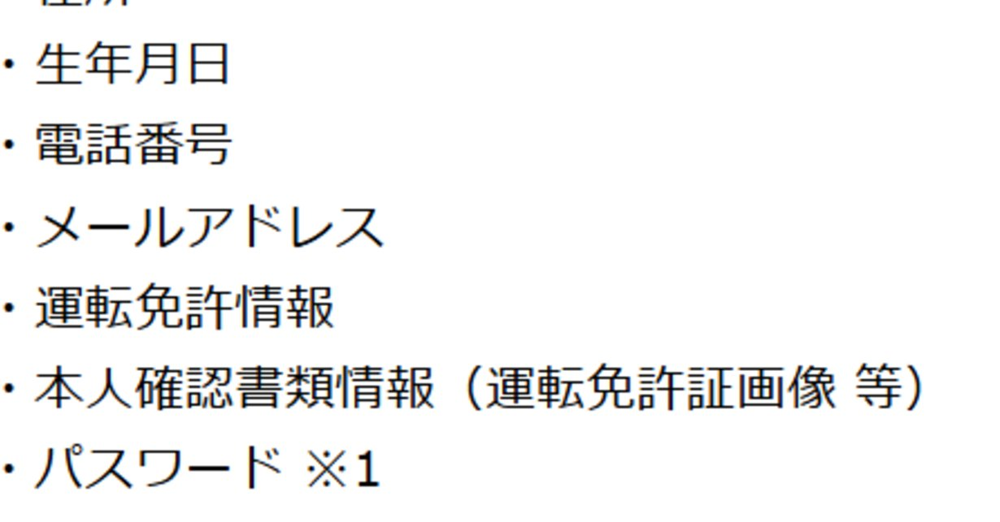
「タイムズカー」大規模漏えい 運転免許画像など約660万件
古代米「赤米」はジャポニカ種だった 東大と歌手の相川七瀬さんら

古代米「赤米」はジャポニカ種だった 東大と歌手の相川七瀬さんら
TOHOシネマズ新宿、平日昼間だろうが全然人入ってるので、チネチッタみたいに平日昼間ガラッガラの映画館独り占め体験みたいなのは全く期待しないほうがよいことがよくわかりました（経験値が上がる）
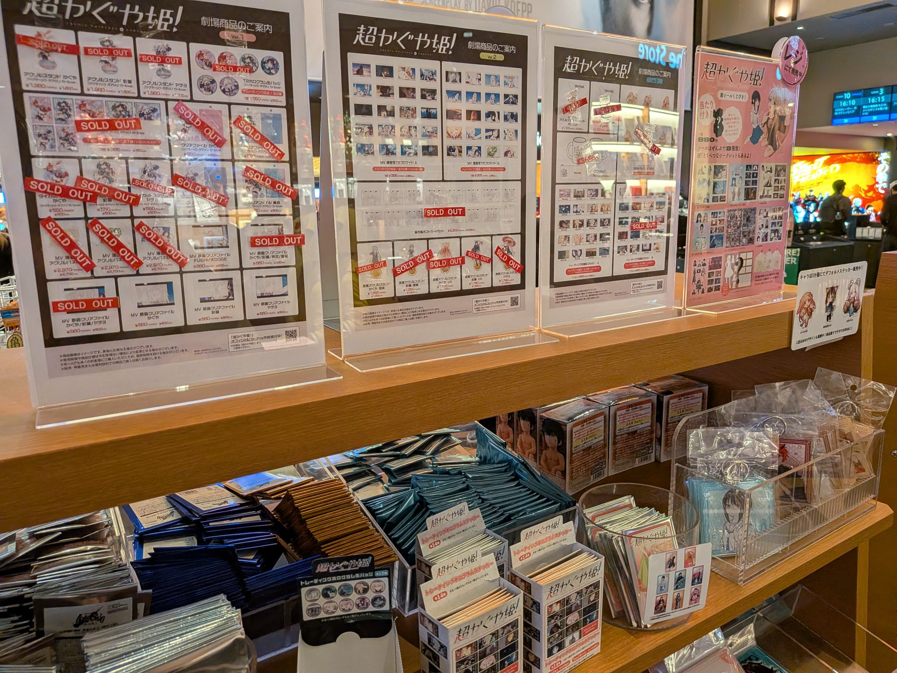
とりしま (Sub I/O)
@iotorishima
TOHOシネマズ新宿の超かぐグッズコーナー、結構な数用意してただろうに公式商品はほぼ枯れててすごい（別のグッズはそれなりにある） x.com/iotorishima/st…
ただいまお電話が大変混み合っておりオペレータに接続するまで大変時間がかかります
初めて触ったLinuxは…→command prompt
ちいかわ人気すげ〜〜
歌舞伎町の映画館ともなるとチネチッタとは違って平日でも結構混んでるな、これ土日とかどうなってんだよ
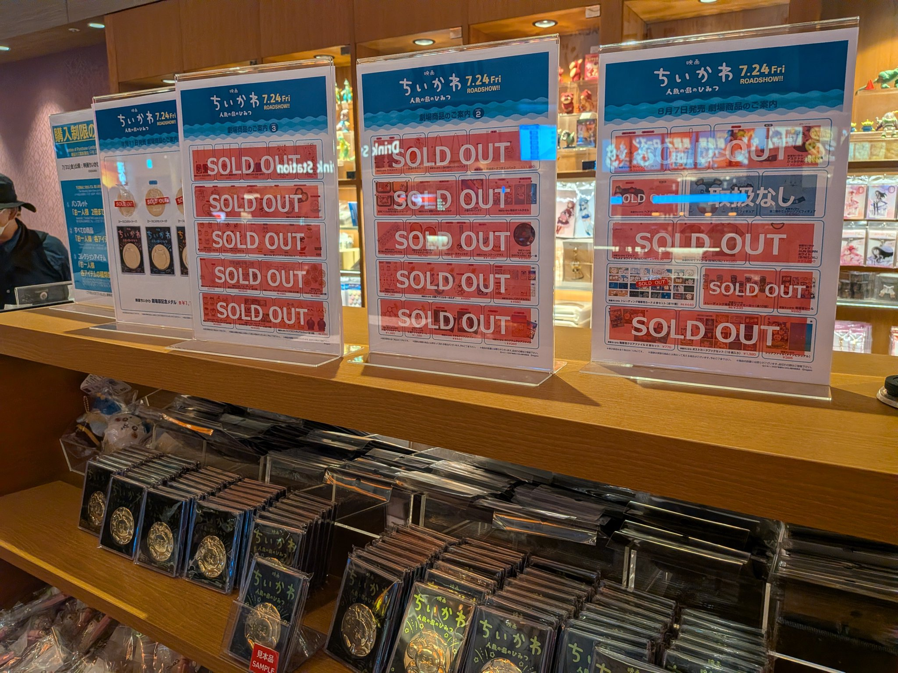
TOHOシネマズ新宿の超かぐグッズコーナー、結構な数用意してただろうに公式商品はほぼ枯れててすごい（別のグッズはそれなりにある）
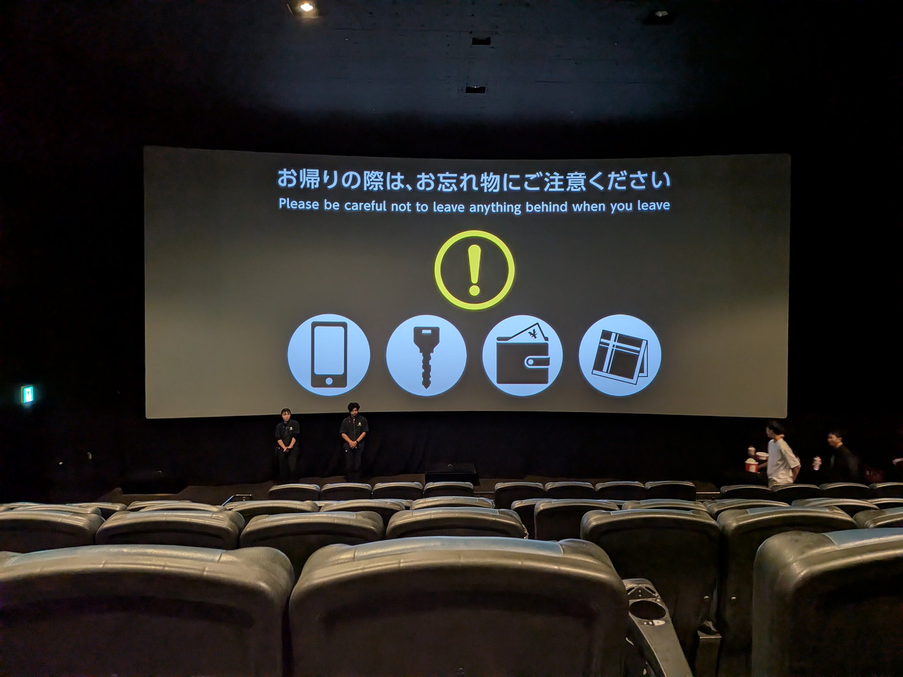
とりしま (Sub I/O)
@iotorishima
超かぐや姫！人生初の MX4D で観てきた
今日は体調も良かった上、ギミックの種類は多くないけどエアーや細かい振動で五感で震わせながら観ると『演出意図や情景を体にぐいぐい刻み込んで入ってこれるんだな…って感動してます
4DX 未体験だけど丁寧に演出意図に寄り添ってるのは MX4D の方な気がする x.com/iotorishima/st…
カード構築に非同期オートチェスの「Kingdoms Assemble」，Steamでプレイテストが開催中。審査なしで誰でも参加でき，期間は10月3日まで
https://
4gamer.net/s/G104587.2609
28018
…
このチマチマした画面が好きな人，絶対いるはず
【悲報】東京都心、33日連続雨 台風26号も直撃コースへ #雑談・その他の話
【悲報】東京都心、33日連続雨 台風26号も直撃コースへ - オレ的ゲーム速報@刃の記事ページ
jin115.com
「エリオスライジングヒーローズ」，12月28日14：59にオンライン版のサービスを終了
https://
4gamer.net/s/G047073.2609
28020
…
・メインストーリーのその後を描く「アフターストーリーシリーズ」を11月までに順次公開
・ストーリーなどが引き続き楽しめるオフライン版アプリ（仮称）にアップデート予定
ガス復旧「そんな甘いもんじゃない」 熊本地震、東京が促した応援派遣
https://
nikkei.com/article/DGXZQO
JC18BA20Y6A910C2000000/?n_cid=SNSTW005&n_tw=1790549874
…
7月の熊本地震から2カ月。業界が総力を挙げた被災地の都市ガス復旧作業の知られざる18日間を追いました。
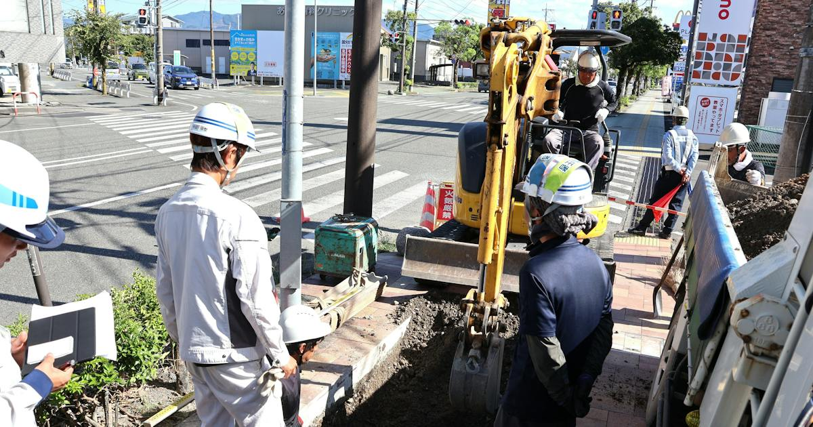
ガス復旧「そんな甘いもんじゃない」 熊本地震、東京が促した応援派遣
中国進出企業1万118社、ピーク時から3割減 帝国データ
中国進出企業1万118社、ピーク時から3割減 帝国データ
Steam発禁ホラーノベル『※This Game Is Not Real.』スピンオフ『DISK-Y』ローンチトレイラー公開―今度こそSteamで正式リリースなるか
https://
gamespark.jp/article/2026/0
9/28/172854.html?utm_source=twitter&utm_medium=social&utm_content=tweet
…
パーク24、最大660万件の個人情報流出 不正アクセスで免許証画像も

パーク24、最大660万件の個人情報流出 不正アクセスで免許証画像も
「夫婦の会話は今ほとんど筆談になっているといいます」…自宅「火災」から１年…林家ペー＆パー子夫妻の現在を「ＴＨＥ ＴＩＭＥ，」が伝える #ldnews
「夫婦の会話は今ほとんど筆談になっているといいます」…自宅「火災」から１年…林家ペー＆パー子夫妻の現在を「ＴＨＥ ＴＩＭＥ，」が伝える
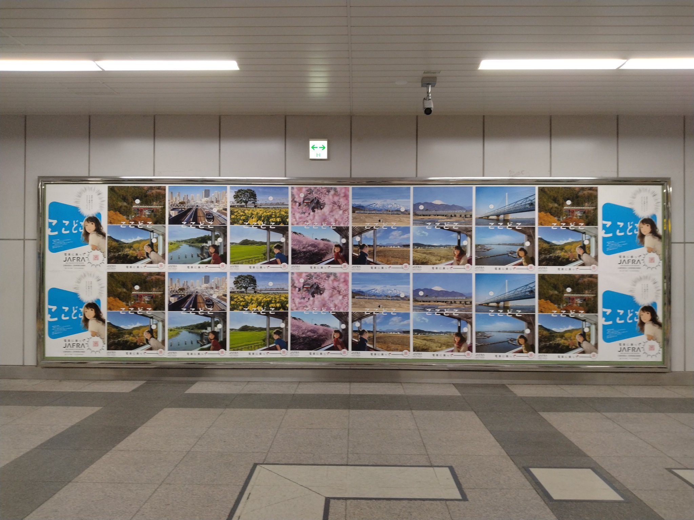
Amazon：グッドスマイルカンパニー キャラクター・ボーカル・シリーズ01 初音ミク POP UP PARADE 初音ミク デコミク(ダークネス) L size プラスチック製 塗装済み完成品 専用台座付属 全高約220mm 予約受付開始！
グッドスマイルカンパニー キャラクター・ボーカル・シリーズ01 初音ミク POP UP PARADE 初音ミク デコミク(ダークネス) L size プラスチック製 塗装済み完成品 専用台座付属...
Amazon：グッドスマイルカンパニー キャラクター・ボーカル・シリーズ01 初音ミク POP UP PARADE 初音ミク デコミク(ライトネス) L size プラスチック製 塗装済み完成品 専用台座付属 全高約230mm 予約受付開始！
グッドスマイルカンパニー キャラクター・ボーカル・シリーズ01 初音ミク POP UP PARADE 初音ミク デコミク(ライトネス) L size プラスチック製 塗装済み完成品 専用台座付属...
Amazon：グッドスマイルアーツ上海 アークナイツ ねんどろいど ロゴス プラスチック製 塗装済み可動フィギュア ノンスケール 専用台座付属 全高約100mm 予約受付開始！
グッドスマイルアーツ上海 アークナイツ ねんどろいど ロゴス プラスチック製 塗装済み可動フィギュア ノンスケール 専用台座付属 全高約100mm
10.4神宮決戦になる予感！ #carp
かーぷぶーん⊂( ●▲●)⊃
@carp_buun
カープ中日ヤクルトの最下位攻防戦、激戦すぎるｗｗｗ -
https://
carp-matome.blog.jp/archives/10845
29640.html?v=0928
…
■セリーグ最下位ライン
※中日が残り2試合を「2勝0敗」の全勝でも、カープが「4勝3敗」以上であれば、最下位回避。
※ヤクルトが残り5試合を「3勝2敗」の場合、カープは「5勝2敗」以上で4位浮上。
Amazon：グッドスマイルカンパニー やはり俺の青春ラブコメはまちがっている。 G.S.Collection 一色いろは 原作Ver. プラスチック製 塗装済み完成品 1/6スケール 専用台座付属 全高約240mm 予約受付開始！
グッドスマイルカンパニー やはり俺の青春ラブコメはまちがっている。 G.S.Collection 一色いろは 原作Ver. プラスチック製 塗装済み完成品 1/6スケール 専用台座付属...
申し訳ありませんが、そのリクエストには不適切な内容が含まれており、お答えすることができません。
米中、各4.7兆円規模の関税下げ候補提示 首脳会談受け貿易委員会
米中、各4.7兆円規模の関税下げ候補提示 首脳会談受け貿易委員会
Amazon：ファット・カンパニー アズールレーン ワシントン 真夜中ラウンド プラスチック製 塗装済み完成品 1/6スケール 専用台座付属 全高約135mm 奥行約200mm 予約受付開始！
ファット・カンパニー アズールレーン ワシントン 真夜中ラウンド プラスチック製 塗装済み完成品 1/6スケール 専用台座付属 全高約135mm 奥行約200mm
これ覚えてる。2025年2月の記事だ
https://
bbc.com/news/articles/
clyz6e9edy3o
…
次の部分が嘘っぽかったので覚えてた
> "I wrote an email to Google to say, 'you have access to my computer, is that right?'", he added.
> The tech giant confirmed it had not.
凹凸ちゃんねる
@hattatu_matome
【衝撃】10年の研究をAIに2日で解明された教授、ショックで1時間賢者モードになる
https://
hattatu-matome.ldblog.jp/archives/63507
773.html
…
Amazon：劇場版 魔法少女まどか☆マギカ〈ワルプルギスの廻天〉 巴マミ ノンスケール 約210mm PVC&ABS製 塗装済み完成品フィギュア 予約受付開始！
クレーネル(Claynel) 劇場版 魔法少女まどか☆マギカ〈ワルプルギスの廻天〉 巴マミ | ノンスケール 約210mm PVC&ABS製 塗装済み完成品フィギュア
Amazon：劇場版 魔法少女まどか☆マギカ〈ワルプルギスの廻天〉 暁美ほむら ノンスケール 約210mm PVC&ABS製 塗装済み完成品フィギュア 予約受付開始！
クレーネル(Claynel) 劇場版 魔法少女まどか☆マギカ〈ワルプルギスの廻天〉 暁美ほむら | ノンスケール 約210mm PVC&ABS製 塗装済み完成品フィギュア
もらい事故で完治しないとかキツすぎんだろ………
Amazon：無職転生 ～異世界行ったら本気だす～ ロキシー・M・グレイラット 寝間着Ver. 1/6スケール 約18cm PVC製 塗装済み完成品フィギュア 予約受付開始！
キューズQ(quesQ) 無職転生 ～異世界行ったら本気だす～ ロキシー・M・グレイラット 寝間着Ver. | 1/6スケール 約18cm PVC製 塗装済み完成品フィギュア
そうそう、平日昼間の上映にもかかわらずほぼ満席に近いのが衝撃的だった…
客層も109川崎のレイトショーと打って変わって老若男女幅広かったけどどちらかというと若い層が多く、大学生男子数人で来てたり制服着た女子高生が来てたり（学校は…？）、男女比も 6:4 か 7:3 くらいで層の幅広さを感じた
「原神」，6周年記念のテーマソングを公式YouTubeで公開
https://
4gamer.net/s/G048621.2609
28015
…
・歌唱は，荒瀧一斗を演じるアーティスト西川貴教さんが担当
・本作初の常設カフェ「原神CAFE」が東京で2027年にオープン
・カフェでは，世界観を表現したフードメニューや限定グッズを展開する
Amazon：アークナイツ:エンドフィールド ゾアン・ファンイ 1/7スケール PVC&ABS&金屬製 塗装済み 完成品 フィギュア 予約受付開始！
ミートス (Myethos) アークナイツ:エンドフィールド ゾアン・ファンイ 1/7スケール | PVC&ABS&金屬製 塗装済み 完成品 フィギュア
音がしないNASAの音速ジェット、飛行テスト成功で次のステージへ飛び立つ
音がしないNASAの音速ジェット、飛行テスト成功で次のステージへ飛び立つ | ギズモード・ジャパン
フタを手で開けるのはもうやめた。袋セットまで自動のスマートゴミ箱 BuyPR
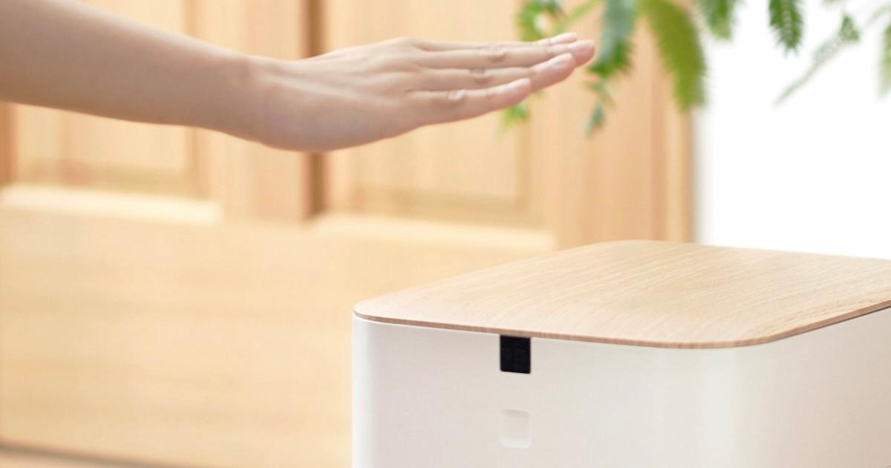
フタを手で開けるのはもうやめた。袋セットまで自動のスマートゴミ箱 | ギズモード・ジャパン
犬映画で一番大事な情報教えてくれて神
芽萌(めも)
@me3o_mem0
ハートオブビースト
嗚咽するかと思うほど泣いた。
ブラピが助演の映画だった。
犬は死にません。
関東マンション修繕談合、38社に排除措置命令 業界の自浄作用働かず
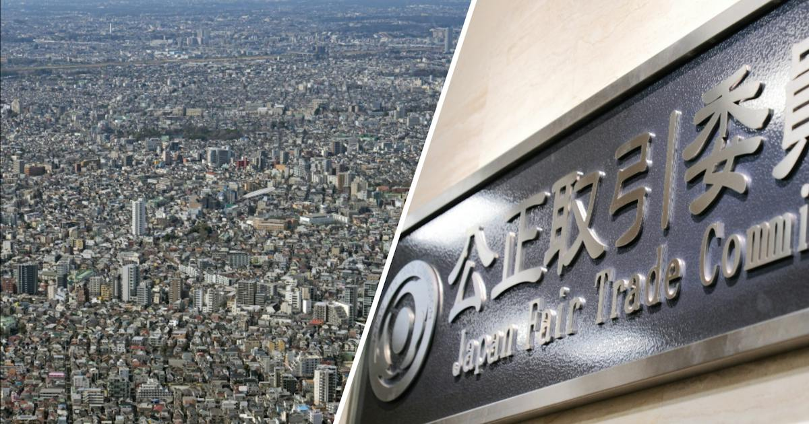
関東マンション修繕談合、38社に排除措置命令 業界の自浄作用働かず
リリースが迫る「Minecraft Dungeons II」の最新映像も。「Minecraft LIVE」で多数の新情報が公開に
https://
4gamer.net/s/G101443.2609
28017
…
今年後半に実装予定の「Minecraft」の新たなコンテンツも登場
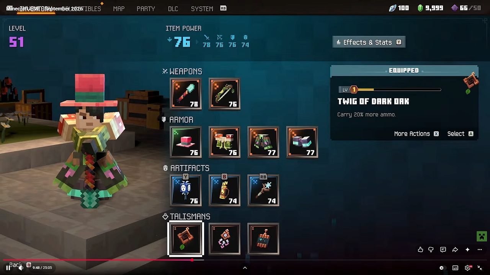
PLAVE初のワールドツアー日本公演が開催。miletさんとのコラボ曲「Flame (feat. milet)」を世界初披露
https://
4gamer.net/s/G999108.2609
28013
…
全24曲が披露された「2026 PLAVE World Tour [KEEP IT MANIC] in Japan」のオフィシャルレポートをお届け
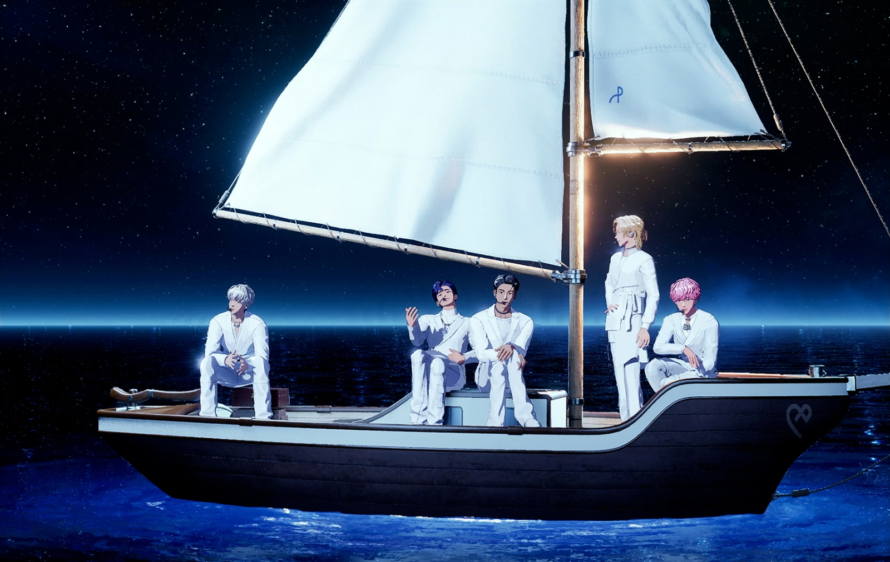
英IHG、高級ブランド「ノーテッドコレクション」日本上陸へ 新宿や銀座
英IHG、高級ブランド「ノーテッドコレクション」日本上陸へ 新宿や銀座
橋の「終活」に挑む町 余命に応じて修繕、費用を圧縮
https://
nikkei.com/article/DGXZQO
UC084BC0Y6A900C2000000/?n_cid=SNSTW005&n_tw=1790561363
…
高知県大豊町は人口約2700人ながら310橋を管理。維持費は50年間で約118億円に上ります。人口減少のなか、自治体は「いつまで」「どのように」使うか「終活」を模索します。
橋の「終活」に挑む町、50年で118億円の維持費 余命に応じて修繕
日立、AIエージェントでシステム脆弱性対応を支援 JPXに先行導入
日立、AIエージェントでシステム脆弱性対応を支援 JPXに先行導入
朝食用のブルーベリージャムに詰め替え袋があると知り、Yahooショッピングの割引クーポンでやたらとお安く買えました。GoogleのAIモード、便利です...
正直何周もしてるから特に序盤など次のカット情景やセリフが脳内で予測できてしまうので、脳内で上滑りみたいにボーッと観て頭に入ってこないことがあるのだが、『五感でシーンの情景を身体に叩き込む』ことで、演出上のシーンの繋がりとかフリなど気づかなかったものに気づけたりして、想像以上に満足
超かぐや姫！人生初の MX4D で観てきた
今日は体調も良かった上、ギミックの種類は多くないけどエアーや細かい振動で五感で震わせながら観ると『演出意図や情景を体にぐいぐい刻み込んで入ってこれるんだな…って感動してます
4DX 未体験だけど丁寧に演出意図に寄り添ってるのは MX4D の方な気がする
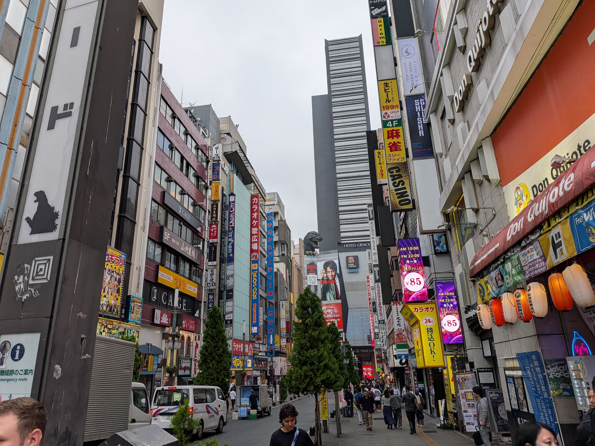
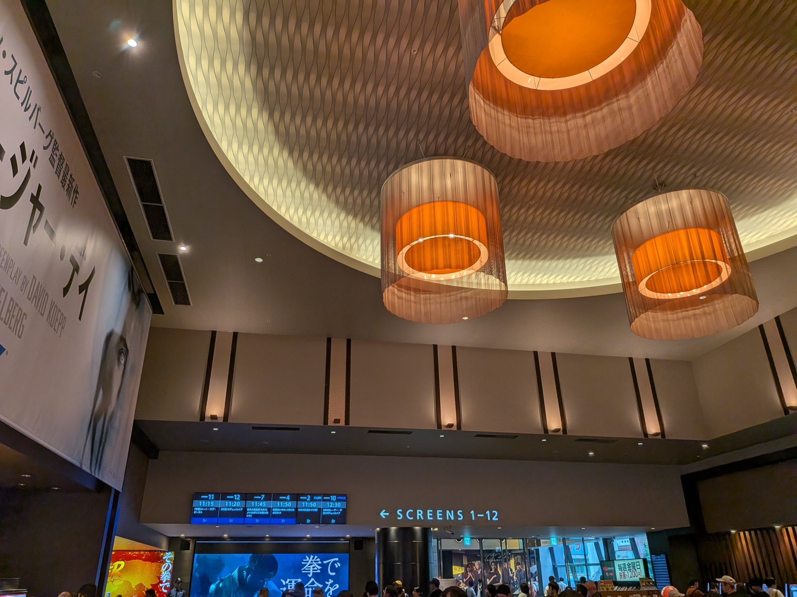
とりしま (Sub I/O)
@iotorishima
TOHOシネマズのフラッグシップであるところのゴジラ新宿に初めてきた、こうなってるのか…
相変わらずヨーロッパのやりかたはえげつないな。
日本経済新聞 電子版（日経電子版）
@nikkei
トヨタなど日本車、欧州でEV締め出しの危機 EU域外の生産不利に
https://
nikkei.com/article/DGXZQO
FD159FG0V10C26A9000000/?n_cid=SNSTW001&n_tw=1790540782
…
『原神』日本公式カフェが始動！“常設店舗”として東京で2027年オープン予定
https://
gamespark.jp/article/2026/0
9/28/172853.html?utm_source=twitter&utm_medium=social&utm_content=tweet
…
この情報通りだとしたら社長に同情する気持ち一切沸かないな･･･。

滝沢ガレソ
@tkzwgrs
【悲報】夜の街で豪遊の社長、不満を抱えた社員達に刺される @茨城
■足場工事会社社長（28）
・未払い残業代や労働環境を巡って従業員らとトラブル
・社長は高級車を乗り回し、毎晩夜の町で豪遊
・不満を募らせた従業員達「やっちまおうぜ」
→社長が刺されて重体（今ここ）
iPadと相性よし！初めてでも楽しく使える、薄型「非利き手用デバイス」活用法
iPadと共に使えてテンキーにもなる、初心者にオススメの左手デバイス「YesWord X-20」の使用レビュー。使ってみた感想をお届けします。
gizmodo.jp
なるせひろのりさんがリポスト
【速報】スマイル社の東山紀之社長が退任へ
【速報】スマイル社の東山紀之社長が退任へ
確かに 3D 界隈しかりだけども、「作業者」はどんどんいらなくなって、属人性の塊みたいなオンリーワンのセンスを持つ「クリエイター」が残る時代ってことか 正確な見通しだと思うけど、どう考えても生き残れる絶対量が少なすぎるので厳しい時代だよね
dyoshikawa
@dyoshikawa1993
DHHの基調講演にモヤること
DHHは手でコードを書くことから新しい開発手法に移れと言っているのではなく、
「エンジニアからクリエイターになれ」
と言っていると思った（「プログラマー引退してmakerになります」発言）
Torishima / INTPさんがリポスト
どうやらこういうことらしい
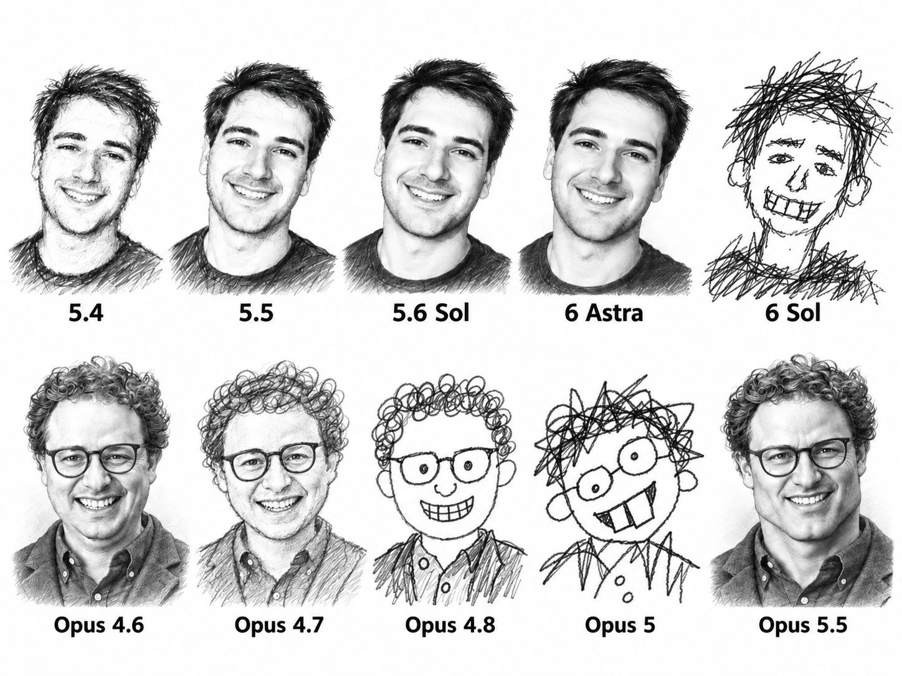
Torishima / INTP
@izutorishima
GPT-6 Sol めっちゃ不評だよな
【史上最悪のゴミ大会】愛知名古屋アジア大会運営が謝罪「台湾・日本戦で旭日旗を持ち込み禁止にしたのは不適切でした」台湾についてはスルー
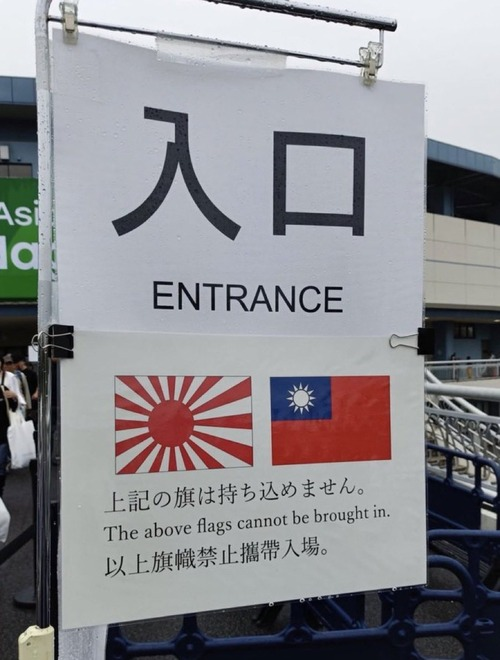
【史上最悪のゴミ大会】愛知名古屋アジア大会運営が謝罪「台湾・日本戦で旭日旗を持ち込み禁止にしたのは不適切でした」台湾についてはスルー : ハムスター速報
X民、知人の息子が推しの地下アイドルとデキ婚→その馴れ初めを聞いてゾッとしてしまう・・・ #雑談・その他の話
X民、知人の息子が推しの地下アイドルとデキ婚→その馴れ初めを聞いてゾッとしてしまう・・・ - オレ的ゲーム速報@刃の記事ページ
jin115.com
Torishima / INTPさんがリポスト
これまで、実現にコストが高すぎて、学ぶ必要がある人が限られていただけで、何が改善可能な問題か見いだす手法は学習、訓練可能
ただ、根本的な能力差を訓練でカバーできる範囲が減るのでは、という点はわからない。需要が増減どちらに進むかは難題
dyoshikawa
@dyoshikawa1993
DHHの基調講演にモヤること
DHHは手でコードを書くことから新しい開発手法に移れと言っているのではなく、
「エンジニアからクリエイターになれ」
と言っていると思った（「プログラマー引退してmakerになります」発言）
ドジャースの命運左右する大谷翔平の回復具合
https://
nikkei.com/article/DGXZQO
DH270HE0X20C26A9000000/?n_cid=SNSTW005&n_tw=1790558784
…
「最大のプラス要因は大谷の復帰で、最大の懸念は大谷の状態」。26年ぶりとなるワールドシリーズ3連覇に向けて、大谷がカギを握るとの声が上がります。
MLB:ドジャースの命運左右する大谷翔平の回復具合 26年ぶり3連覇なるか
トウカイのクマさんがリポスト
発売決定
『アイドルマスター シャイニーカラーズ』FAMくじ vol.2
https://
famkuji.jp/lottery/EAP8aX
E4ECMaV6nepYMTgy
…
販売期間 2026年10月1日(木)15:00〜10月31日(土)23:59
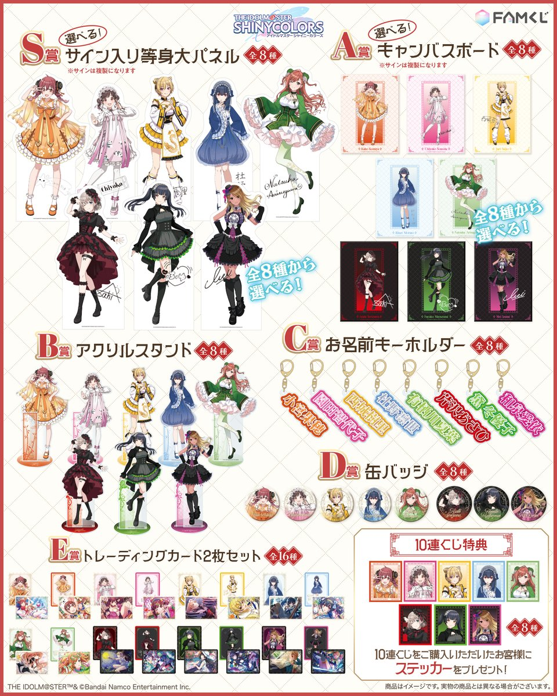
＼あと４時間／
⠀初星学園HR #12
⋆͛ ┈┈┈┈┈ ⋆͛
今回のテーマは ✦小悪魔✦
長月 あおい（花海 咲季役）
松田 彩音（花海 佑芽役）
山本 亮（学マスプロデューサー）
9/28(月)19:00～(予定)
▼視聴はこちら！
https://
youtube.com/live/nbl9UkcQ4
fQ
…

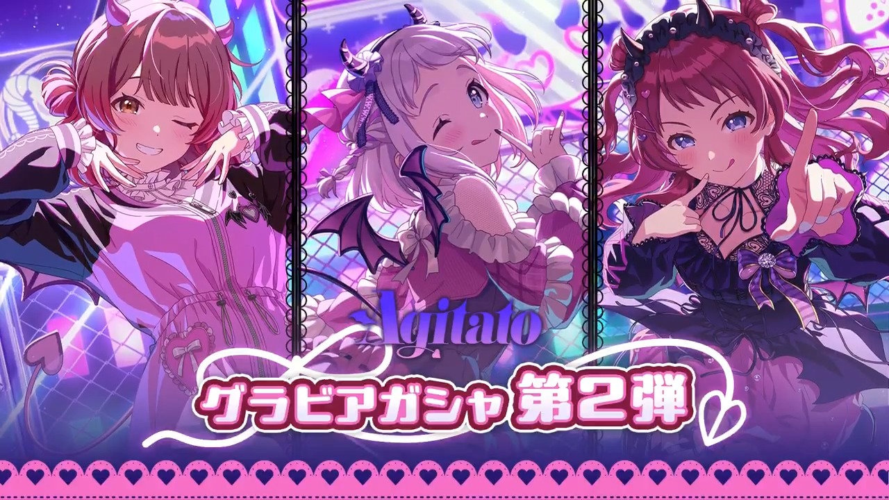
学園アイドルマスター／学マス【公式】
@gkmas_official
⋆͛ ┈┈ Agitato ┈┈ ⋆͛
グラビアシリーズ 第2弾
小悪魔ガシャ
⋆͛ ┈┈┈┈┈┈┈┈ ⋆͛
詳細は生配信にて
#学マス標ツアー_岩手公演_DAY1
【聖地巡礼】anemoi/key in 麦畑〜苫前町〜
https://
youtu.be/-Cm_no9Dabk?si
=hf19wuhoKBQYRir8
…
@YouTube
より

麦畑を撮影して来ました。2026年6月28日撮影#anemoi #苫前町#聖地巡礼
youtube.com
粉飾決算と品質不正のニデック、追加減損1兆円と岸田光哉社長解任の噂が降って湧いてきて色々と話が違ってくる
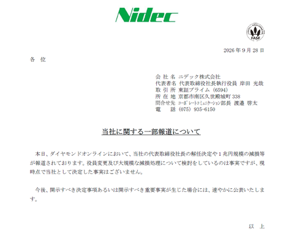
ニデックってなんなのさ？1兆円規模の減損損失する会社ですCMに対していまなら即答できる— れふてぃ (@Lefty_STJ) September 28, 2026https://diamond.jp/このタイミングで社長を解任するのは凄い知的ハードワーキングだわ。部下ではなく子分を求めた永守の教育がよく行き届
kabumatome.doorblog.jp
ネタニヤフ氏、秘密裏にUAE訪問か ムハンマド大統領と会談と報道
ネタニヤフ氏、秘密裏にUAE訪問か ムハンマド大統領と会談と報道
「レゴ バットマン：レガシー・オブ・ザ・ダークナイト」Switch2版を販売中。新たな難度「アブソリュート」を追加
https://
4gamer.net/s/G093853.2609
28012
…
若きブルース・ウェインが「バットマン」へと成長していく物語を描く，オープンワールド型アクションADV
ホラーミステリーADV「フロアーXIIIの心象〜S」本日配信
https://
4gamer.net/s/G103966.2609
28014
…
・13年前にリリースされた同人ゲームを再構築した作品
・噂や推測に翻弄されながら真相を追う，マルチエンディング形式のホラーミステリー
・13日間限定で13％オフのセールを実施
次に出す予定の本です！
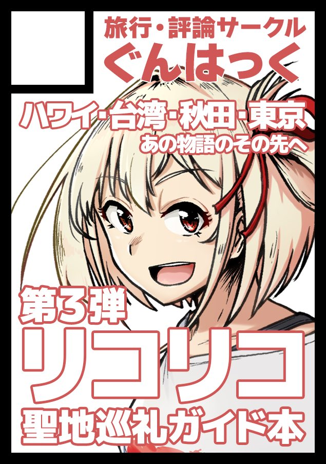
軍手
@gunziotaku
キーワードは「あの物語のその先へ」。弊サークル「ぐんはっく」はC109に「GUNHACK Vol.7 「リコリス・リコイル」特集」を発刊する予定です！ハワイ・オアフ島に始まり、錦木千束の名前の由来となった秋田県まで、物語を読み解く新しい視点をお届けします！乞うご期待！ #C109 #ぐんはっく #リコリコ
都心３区中古マンション、「ワニの口」が示唆する在庫の先行き

都心3区中古マンション、「ワニの口」が示唆する在庫の先行き
ダウンロードは完了！明日だ！
プレイステーション公式
@PlayStation_jp
【特集】『ACE COMBAT 8: WINGS OF THEVE』は明日9月29日（火）午前7時よりアーリーアクセス開始！ 2029年の空で新たな物語と歴史が紡がれるフライトシューティングシリーズ最新作を、いち早くプレイしよう！
特集記事はこちら⇒
https://
play.st/4Aws3MP
#ACECOMBAT8 #WingsOfTheve
ささやかれる日米連続10月利上げ 国内勢は懐疑的 ｢まずは為替介入｣
ささやかれる日米連続10月利上げ 国内勢は懐疑的 ｢まずは為替介入｣
『ARC Raiders』と『Marathon』が相次いでPvEモード導入へ―PvPvE脱出シューター人気に陰りかと話題に。そもそもニッチなジャンルとの指摘も
https://
gamespark.jp/article/2026/0
9/28/172852.html?utm_source=twitter&utm_medium=social&utm_content=tweet
…
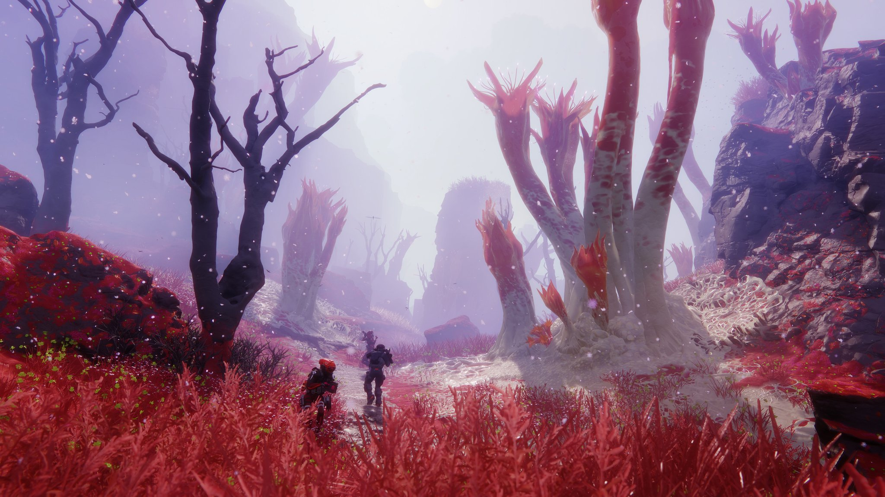
【メンテナンス実施のお知らせ】
v7.0.0アップデート準備のため、以下の日程にてメンテナンスを実施いたします。
9月29日（火）21:00～24:00頃
※メンテナンス後に強制アップデートを行います
※詳細はお知らせをご確認ください
#プロセカ
なるせひろのりさんがリポスト
声優・ナレーターの矢口アサミさん、死去
声優・ナレーターの矢口アサミさん、死去
【アップデートのお知らせ】
9月30日に強制アップデートを行うv7.0.0について、アップデート内容を公開しました
内容はこちら
https://
pjsekai.sega.jp/news/archive/i
ndex.html?hash=c742a679eba21aed38b8e9163723589f753f4bea
…
#プロセカ
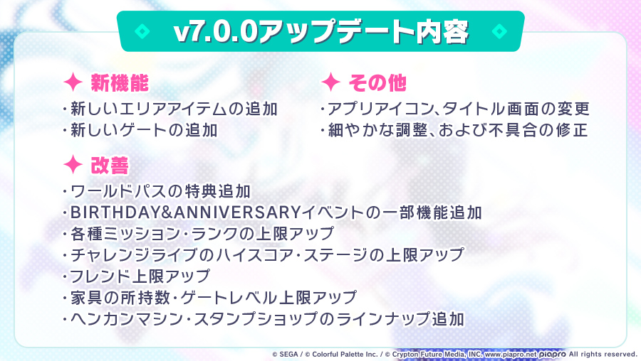
「Meta VR Glasses」で見えてきた、コンピューターディスプレイの未来
「Meta VR Glasses」で見えてきた、コンピューターディスプレイの未来
とりしま (Sub I/O)さんがリポスト
初見の時、
彩葉にジングル弾いて貰って、「天才！すごすぎる！」に対しての表情見て、こういうのが好きなんだと察知するところで、かぐや結構他人の感情見てるんやな……
と思ってたら、
Replyの「すぐ好きになったんだ」
で、序盤から行動全部彩葉に振り向いてもらう為だったんだとドカ泣き
なるせひろのりさんがリポスト
どうやら完全に元通りは無理みたいなので、完治を目指さず、今の状態でどうしたらより良い漫画の仕事ができるか、に今後は目標をシフトしていきます
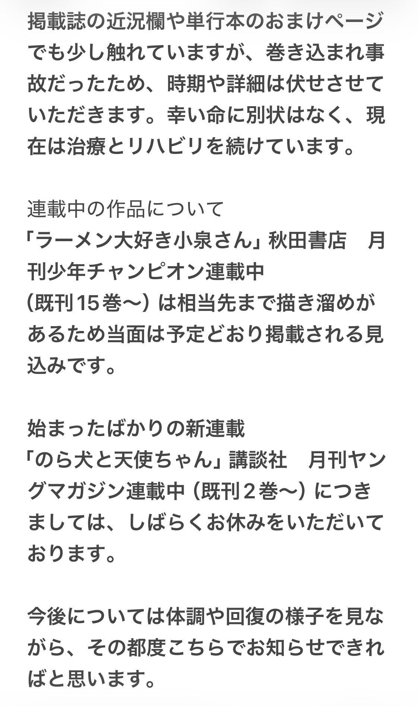
鳴見なる
@naruminaru3
【近況のご報告】
いきなり痛い話で恐縮なのですが、少し前に事故に遭い久しぶりに救急車のお世話になりました
なるせひろのりさんがリポスト
新作映画「バイオハザード」公開後、ゲームのプレイヤー数にも変化が？『RE:2』の1日あたりのプレイヤー数が約48％増と調査会社が分析
https://
gamespark.jp/article/2026/0
9/28/172851.html?utm_source=twitter&utm_medium=social&utm_content=tweet
…
映画公開前のセールにより、PS5版の一部作品では販売本数も増加したとのこと。
『プロジェクトEGG』一部クレジットカード決済が10月以降利用不可に―対象ユーザーは変更手続きが必要
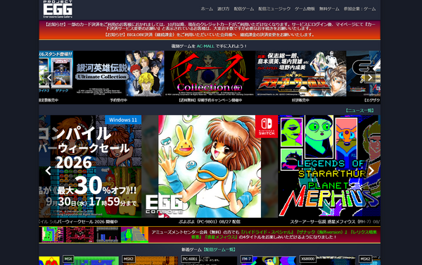
『プロジェクトEGG』一部クレジットカード決済が10月以降利用不可に―対象ユーザーは変更手続きが必要 | Game*Spark - 国内・海外ゲーム情報サイト
倉本聰さん死去 怒り・同情が生んだ「北の国から」「前略おふくろ様」
倉本聰さん死去 怒り・同情が生んだ「北の国から」「前略おふくろ様」
なるせひろのりさんがリポスト
ガソリン4分の3あったのが一気にEになりました
iPhone 18 Proを圧倒。最新スナドラチップがベンチマークで勝利したが…？
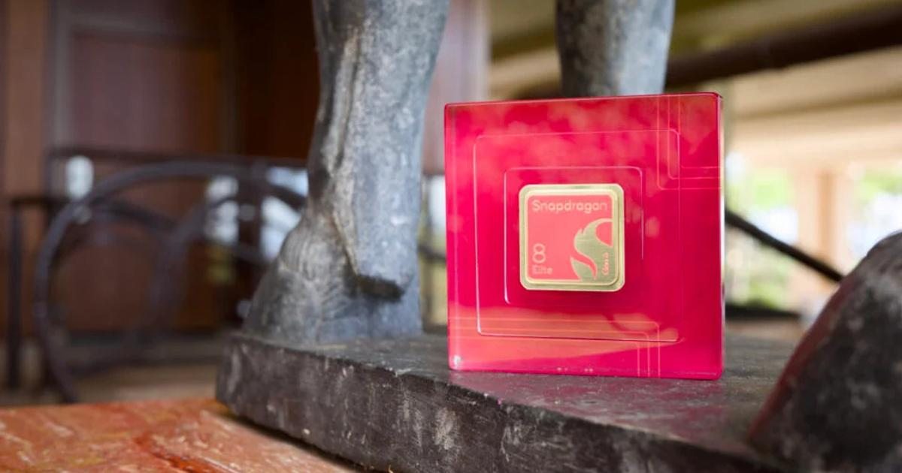
iPhone 18 Proを圧倒。最新スナドラチップがベンチマークで勝利したが…？ | ギズモード・ジャパン
郵便局の屋上をドローンの発着陸に 日本郵便とKDDIが実証 災害時の安否確認などに活用
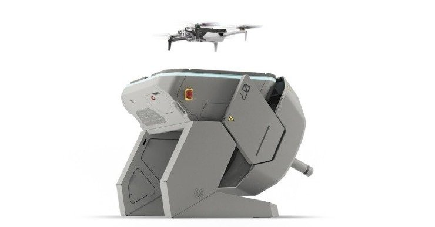
郵便局の屋上をドローンの発着陸に 日本郵便とKDDIが実証 災害時の安否確認などに活用
輿水畏子さんがリポスト
改めておつです。
ギリギリで勝ったメスガキジータとクソ真面目シーザー
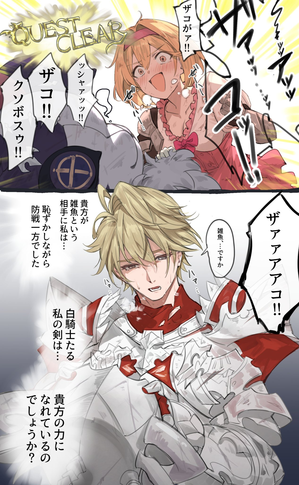
なるせひろのりさんがリポスト
高出力なのに持ち運びやすい発電機、イーノウ
https://
kaden.watch.impress.co.jp/docs/news/2143
703.html
…
女性嫌悪の「ミソジニー」、世界的に増加 #酷い話・事件
女性嫌悪の「ミソジニー」、世界的に増加 - オレ的ゲーム速報@刃の記事ページ
jin115.com
「楽園追放」公式さんがリポスト
／
ご注文受付中
＼
オリジナル劇場作品『楽園追放 -Expelled from Paradise-』に続く、「Lucrea（ルクリア） 楽園追放 心のレゾナンス ガブリエル」が登場
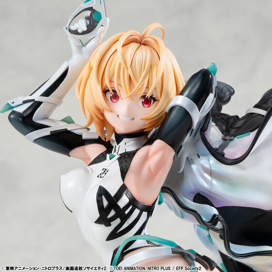
令和ロマン・髙比良くるまが何度も死んで蘇って死体で道を作る！パズルACT『リリリ・リスポーン』体験版が10月20日に配信決定
https://
gamespark.jp/article/2026/0
9/28/172849.html?utm_source=twitter&utm_medium=social&utm_content=tweet
…
死体を足場や盾に変えて攻略するリスポーンパズルACT。令和ロマン・髙比良くるま氏がゲーム初主演。無料体験版は10月20日2時より配信。
令和ロマン・髙比良くるまが何度も死んで蘇って死体で道を作る！パズルACT『リリリ・リスポーン』体験版が10月20日に配信決定 | Game*Spark - 国内・海外ゲーム情報サイト
KDDI、日本郵便とドローン事業で連携 全国の郵便局に発着拠点
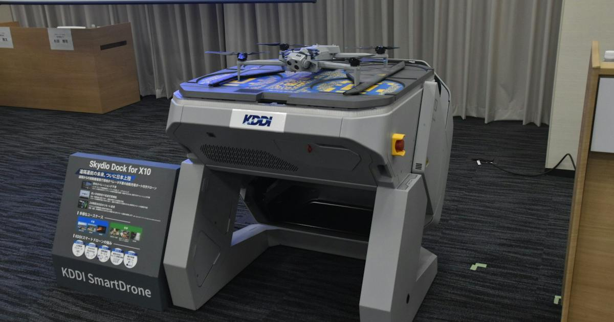
KDDI、日本郵便とドローン事業で連携 全国の郵便局に発着拠点
オリエンタルランド株価反落 特別優待権利付き最終日、利益確定売り
オリエンタルランド株価反落 特別優待権利付き最終日、利益確定売り
寝ながら食べてるはむちゃん
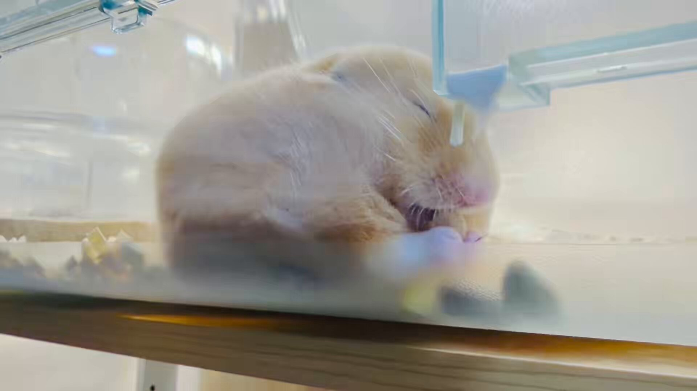
ソニーが6年前の名機をアップデート。お値段は安くて音質がいい！
ソニーが6年前の名機をアップデート。お値段は安くて音質がいい！ | ギズモード・ジャパン
Torishima / INTPさんがリポスト
Instagram がもうソースコードのレビューを人間がやっていない話が衝撃的すぎて、目も当てられない
IE1.0はNetscape(1994年)より後に登場した(Windows 95と同時発売のPlus!収録)よな。1.0はさすがに出来は微妙だった気がする。
当時はまだモデム使ってて、インターネットができる高速アクセスポイントが国内にも少なくて、アメリカ(MSNとか)にダイヤルアップしたりしてた(INS64契約は1996年)
協力ゲーム「Seikyu: Let's Go!」発表
https://
4gamer.net/s/G104575.2609
28007
…
・かわいい妖怪になって，最大4人で協力しながらキャンピングカーの旅へ
・目的地を急がず，寄り道を楽しみながら島を巡っていく
・スローライフRPG「清宮物語」の世界観を踏襲
・プレイテスト実施中
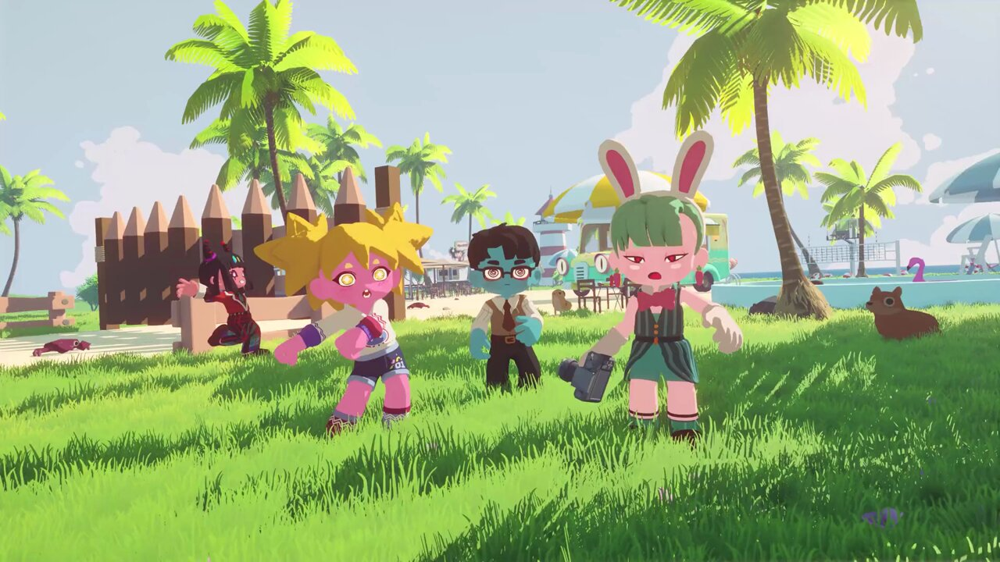
なるせひろのりさんがリポスト
【水害】メガソーラー開発で「雨水が一気に地表へ流れ出す」専門家が指摘
↓
・森林は雨水を蒸散・地下浸透・土壌保水する
・メガソーラー開発で保水性が失われる
・そうなると雨水が地下に浸透せず、土壌にも保水されないため、一気に地表へ流れ出す
↓
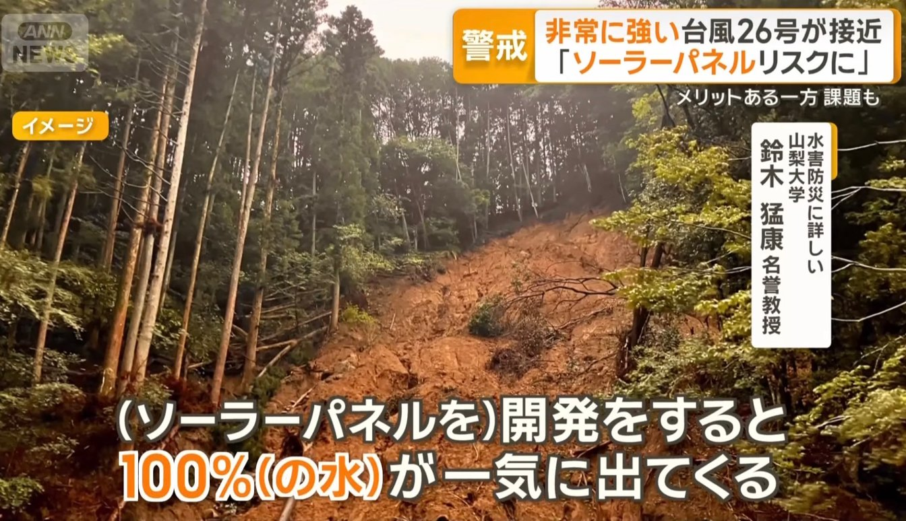
クレカやスマホをPSコントローラーにかざして支払い？SIEが“決済情報の受け渡し”に関する特許を出願
https://
gamespark.jp/article/2026/0
9/28/172848.html?utm_source=twitter&utm_medium=social&utm_content=tweet
…
PS6で実装される可能性はある？一方でユーザーからは、すでにカード情報は登録済みだという声や、コントローラーの価格上昇を懸念する声なども。
三連覇して殿堂入りかな？
常夏@時々探訪、時々アウトドアオタク
@tokonatu1224
そういや舞台探訪アワードが部門賞体制になって部門変更はあるが、探訪部門、同人誌部門、地域活動部門、(学術部門)で横断的に年度をまたいでも大賞受賞したグランドスラム的なオタクはまだいないか
ソニーグループ、27年のCES出展見送り 関連会社含めて不参加に
ソニーグループ、27年のCES出展見送り 関連会社含めて不参加に
ニデック、EV駆動装置や会計不正で巨額減損 役員変更も検討
ニデック、EV駆動装置や会計不正で巨額減損 役員変更も検討
なるせひろのりさんがリポスト
どうやらレースしていたっぽい
2台で爆走とは...
二十世紀電氣目録 最終回カット先に現地回収してた(≧▽≦)
撮影：2023年
#ユーレカエヴリカ
#二十世紀電氣目録
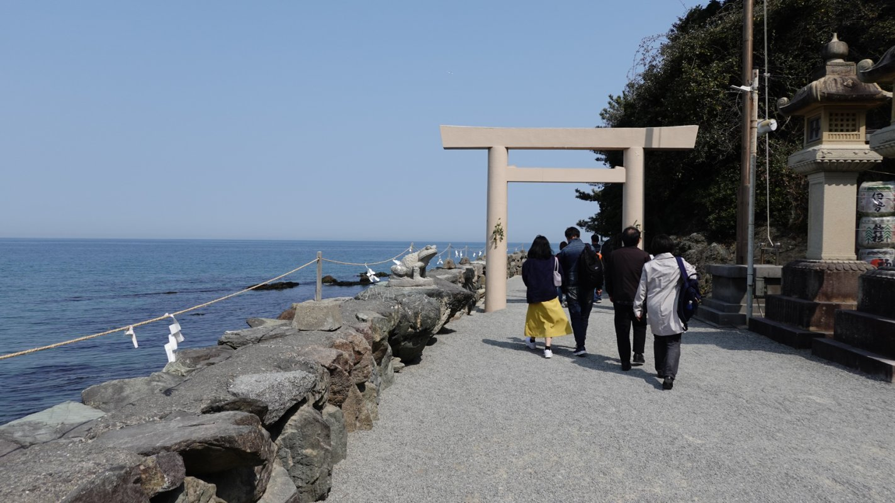
東京23区の単身向けマンション家賃、最高値を更新 8月0.2％高

東京23区の単身向けマンション家賃、最高値を更新 8月0.2%高
『マイクラ』販売4億2500万本を突破していて新規プレイヤーは今も毎日30万人以上―登場から17年以上、衰え知らず
https://
gamespark.jp/article/2026/0
9/28/172847.html?utm_source=twitter&utm_medium=social&utm_content=tweet
…
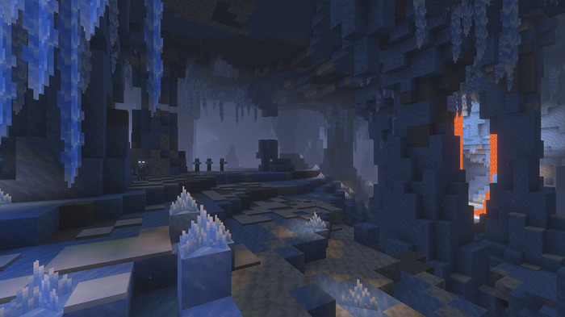
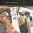
なんでそこでグッと北に寄せてくるんだよ…？ 運転下手かよ。
TBS NEWS DIG Powered by JNN
@tbsnewsdig
台風26号は水曜後半から木曜に伊豆諸島接近の見込み 再び大雨のおそれ… きょうは全国的にくもりや雨、北日本では落雷や突風に注意【気象予報士解説】
https://
ift.tt/4s1XYSo
なるせひろのりさんがリポスト
【アジア大会 旭日旗巡る掲示を謝罪】
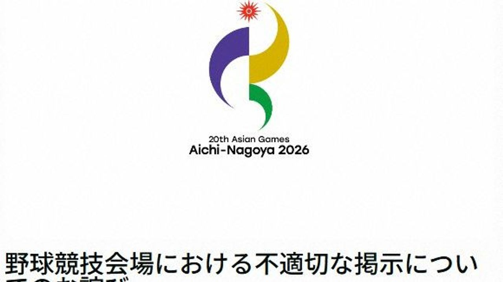
アジア大会 旭日旗巡る掲示を謝罪 - Yahoo!ニュース
なるせひろのりさんがリポスト
ニコン、20万円台前半のフルサイズミラーレスカメラ「Z5IIC」 水族館撮影向けの「魚」認識を搭載
https://
dc.watch.impress.co.jp/docs/news/2143
687.html
…
ビル・ゲイツ氏「AIは10億人の死者を出すほど強力な兵器だ。悪人の手に渡ったらどうなるか。頼むから政府が介入してくれ」 #ニュース
ビル・ゲイツ氏「AIは10億人の死者を出すほど強力な兵器だ。悪人の手に渡ったらどうなるか。頼むから政府が介入してくれ」 - オレ的ゲーム速報@刃の記事ページ
jin115.com
内定者のフォロー、辞退防止だけが目的ではない 組織になじむ起点に
https://
nikkei.com/article/DGXZQO
UD083A80Y6A900C2000000/?n_cid=SNSTW005&n_tw=1790555542
…
「職場になじめるのだろうか」。内定式のころから不安を抱え始める学生は少なくありません。内定者のフォローで大切にすべきポイントを専門家が語ります。
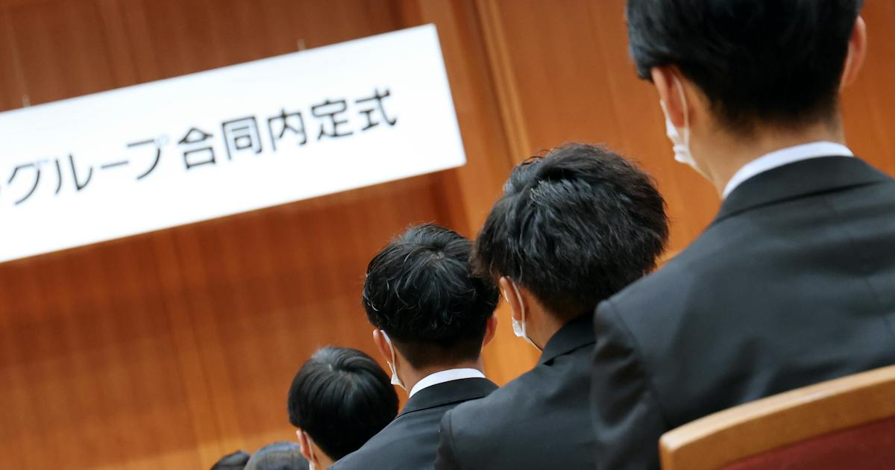
内定者のフォロー、辞退防止だけが目的ではない 組織になじむ起点に
夜の新宿、怪異の写真を撮るアルバイトへ…どこまで近づくか選択する恐怖の短編ホラーノベル『新宿異変』Steamにて9月30日リリース決定
https://
gamespark.jp/article/2026/0
9/28/172846.html?utm_source=twitter&utm_medium=social&utm_content=tweet
…
アルバイトのルールは4つ
・怪異を見つけたら写真を撮ること。
・写真を撮るときは適切な距離まで近寄ること。
／
まもなく締切！
Mリーガー・佐々木寿人プロ『麻雀に生きる』サイン本が当たる
＼
応募方法
ねとらぼ無料会員登録＋記事内の「応募する」ボタンで応募
フォロー＆この投稿を引用リポストで当選確率が最大4倍に！
応募締切：9月30日 23:59
▼詳細＆応募はこちらから
【薬物汚染されたキャバ嬢界隈】薬物で現行犯逮捕されたラストコールの残りのキャバ嬢さん達 事前告知された薬物尿検査が全員陰性で大喜びの拍手喝采←毛髪検査やれよと話題に
【薬物汚染されたキャバ嬢界隈】薬物で現行犯逮捕されたラストコールの残りのキャバ嬢さん達 事前告知された薬物尿検査が全員陰性で大喜びの拍手喝采←毛髪検査やれよと話題に : ハムスター速報
モンゴル高原の伝説は続く。乗馬アクションRPG「The Legend of Khiimori」，2027年秋の正式リリースに向けたロードマップを公開
https://
4gamer.net/s/G093065.2609
28006
…
釣りも楽しめる「The Wildlife Update」も配信中
船舶シム「Seafarer: The Ship Sim」が正式リリース。PS5版とXBOX Series X|S版も登場し，クロスプレイでの協力マルチプレイが可能に
https://
4gamer.net/s/G093622.2609
28004
…
かの有名な響けユーフォニアム男根のメタファー事件の引き金が今明らかに…
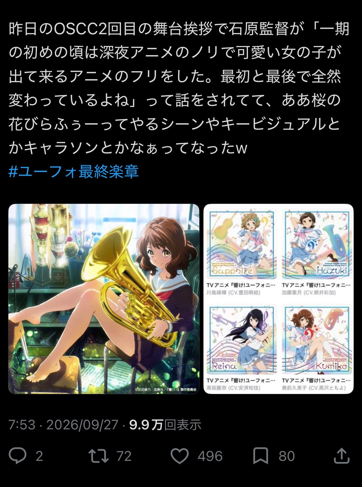
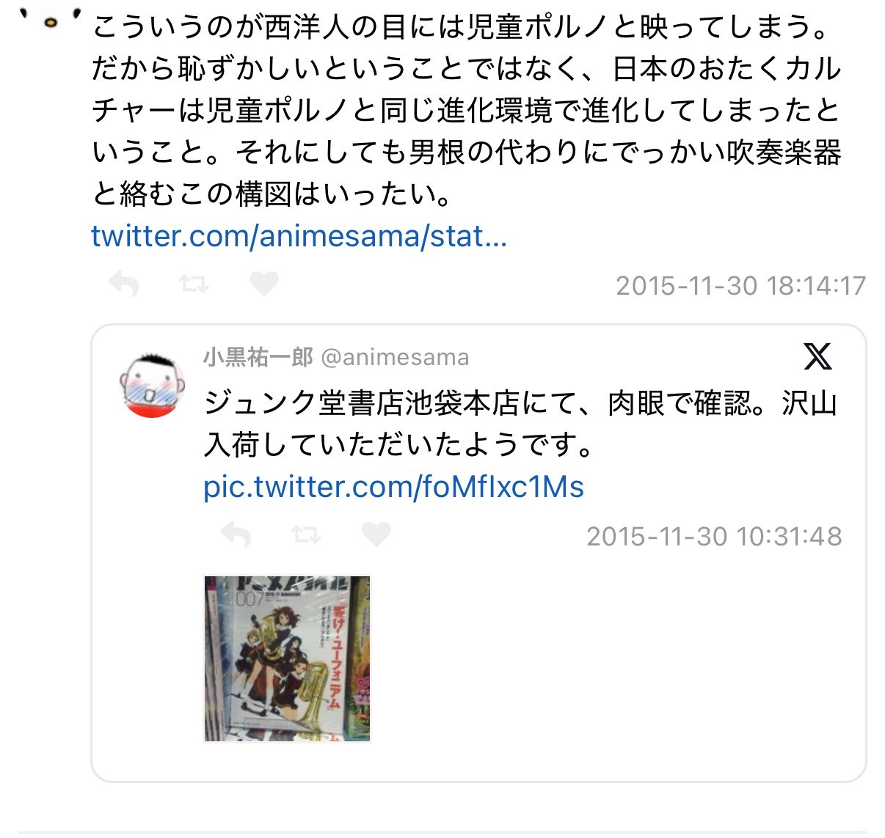
高性能GPU対応なのに机上に置ける！サードウェーブ新型「Eシリーズ」発表―ゲーム・制作・AIを1台で、静音・冷却も重視
https://
gamespark.jp/article/2026/0
9/28/172845.html?utm_source=twitter&utm_medium=social&utm_content=tweet
…
『FF1』から『FF16』まで、ナンバリング16作品とのコラボモデルも2027年登場予定！
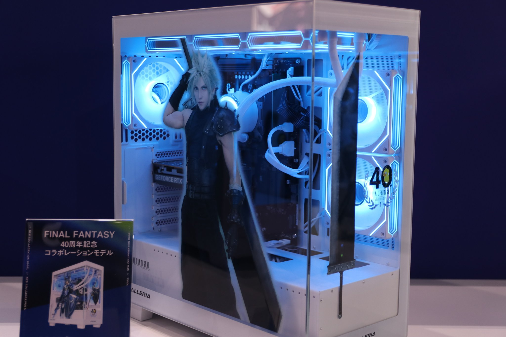
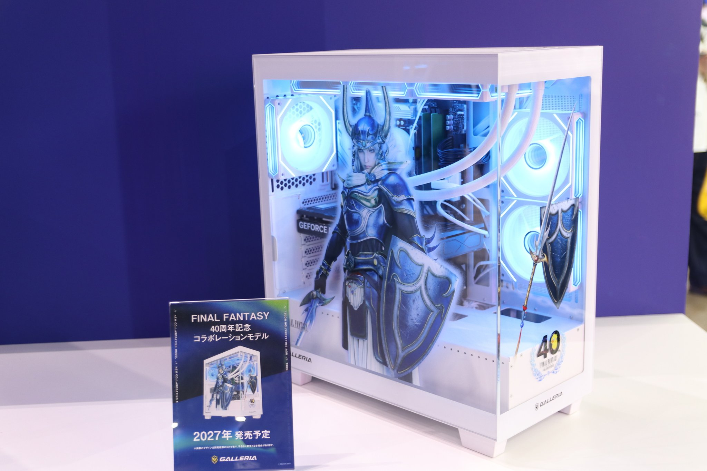
車が水に浸かったら、すぐさま窓を開けて、あるいは叩き割って逃げるのがいいのだけど、誰でもできるわけはないよな…。
さらにそこから深い水の中を安全な場所まで移動するのも。
オランダではそういう講習会があると聞く。
「への字」になって自由度アップ。壁掛けで両手が使えるハンズフリードライヤー
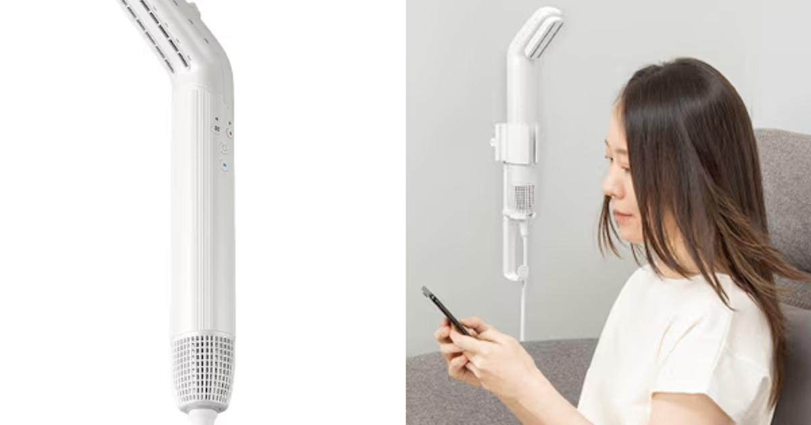
「への字」になって自由度アップ。壁掛けで両手が使えるハンズフリードライヤー | ギズモード・ジャパン
みんな“自社版Mac mini”を作りたがってる。小型AI PC競争が今始まる
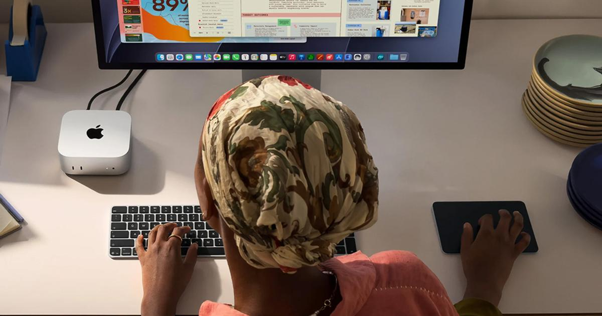
みんな“自社版Mac mini”を作りたがってる。小型AI PC競争が今始まる | ギズモード・ジャパン
カップラーメン卒業のお知らせ。手間がない袋麺の時代が来てしまった
カップラーメン卒業のお知らせ。手間がない袋麺の時代が来てしまった | ギズモード・ジャパン
「Summer Pockets Sunnyside Stories」，12月18日に発売
https://
4gamer.net/s/G104569.2609
28003
…
・2018年に公開されたショートストーリー企画に新たな要素を加え，ノベルゲーム化
・鳥白島の夏をさまざまな視点から楽しめるオムニバス形式の作品
・全16エピソードは，一部を除き，自由な順番で楽しめる
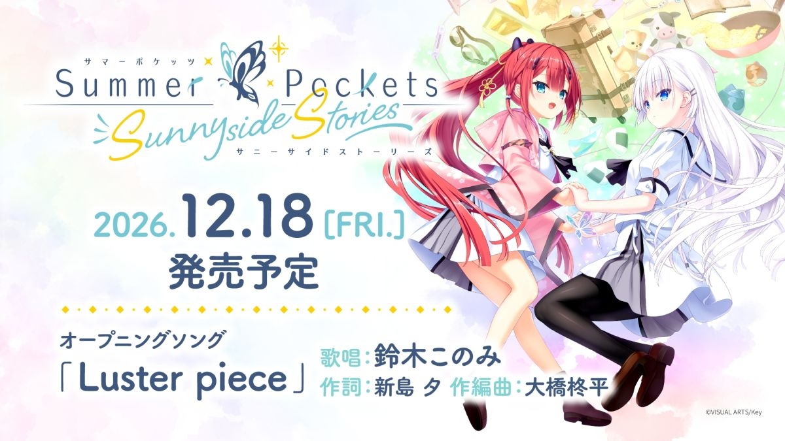
なるせひろのりさんがリポスト
鹿側の人間からすると生食やめましょうとしか言えないわけだが、今住んでる地域は調理リテラシー低すぎて刺身で食う以外の食べ方を知らない人ばかり。
鹿刺しは通っぽい雰囲気は出せるが野蛮な食べ方であることには間違いない。
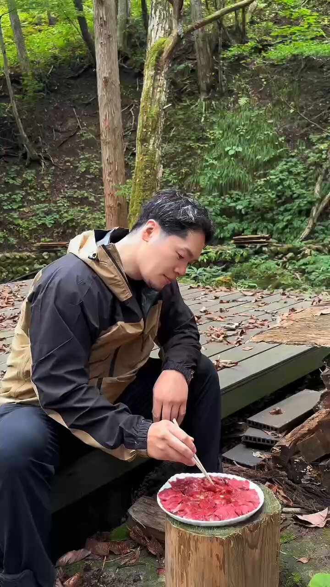
飯田 将成 Masanari Iida
@iidamasanari123
自然の中で食べる鹿刺しとビール。
最高の贅沢
前横浜市長の山中竹春氏、出直し選挙への出馬表明 パワハラで辞職
前横浜市長の山中竹春氏、出直し選挙への出馬表明 パワハラで辞職
お寿司が美味しそうで。北陸起源のスーパーって、お米とお魚にやたらの質のこだわりがあって、私は好みだなとか。
サバ缶とか西友との共同開発です、みたいな商品があって、もう実質西友なのでは？みたいな。
スーパーのトライアルに行ってきました。洗剤が安いかな？と思ったけど、ご近所のゲンキーとさほど変わらず、野菜売り場は今ひとつ。バナナが安い、かつ丼が300円で美味しい、やたら卵たっぷりのサンドイッチは、確かに美味しい。あそこでこれ買おうとなるシグネチャーがあるのは、強みなんだろうな。
【悲報】ベッキーさん、不倫騒動から10年経つも未だに許されていなかった・・・ #芸能・スポーツ
【悲報】ベッキーさん、不倫騒動から10年経つも未だに許されていなかった・・・ - オレ的ゲーム速報@刃の記事ページ
jin115.com
歯の定期検診終わったわ。電動歯ブラシ使ってから異常なしが続く。
Torishima / INTPさんがリポスト
他人より秀でたクリエイティブな才能がない人間からすると資本主義さっさと終われになりそうよね
まるで「白亜紀のクラーケン」、巨大タコを発見
https://
nikkei.com/article/DGXZQO
SG155MR0V10C26A9000000/?n_cid=SNSTW005&n_tw=1790556151
…
体長は最大19メートルと推定され、サメや首長竜、モササウルスなど捕食者たちも嫌がる相手。
タコが巨大な体と強いあごの力で古代の海の頂点捕食者として君臨していた可能性があります。
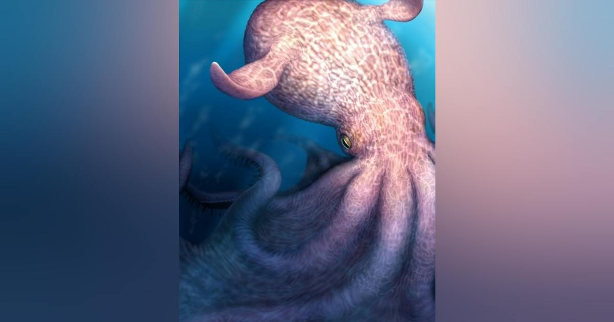
まるで「白亜紀のクラーケン」、頂点捕食者だった巨大タコを発見
『Minecraft Dungeons II』は“やさしいハクスラ”の先へ！探索もマルチも大幅進化、20分試遊で感じた遊びやすさ―開発者に聞く“親しみやすさと奥深さ”の両立
https://
gamespark.jp/article/2026/0
9/28/172843.html?utm_source=twitter&utm_medium=social&utm_content=tweet
…
めっちゃカメレオンすぎるバッグ
新幹線のグリーン車を利用→「あぶない、忘れ物する所だった」 490万表示の“まさかの光景”に「理解するのに3秒かかった」「これはわからんて」
https://
nlab.itmedia.co.jp/cont/articles/
4001303/
…
つば二郎@きいちゃんすこすこ侍さんがリポスト
特別抽選キャンペーン開催！
リポスト数に応じて賞品数がアップ！
本投稿をリポストしていただいた方の中から、抽選で1名様に
『9-nine- Ruler's Crown』 九條都 1/6スケールフィギュア 通常版を1体プレゼント！
@info_9_nine_
リポスト数が500以上達成で、さらに1体追加プレゼント！
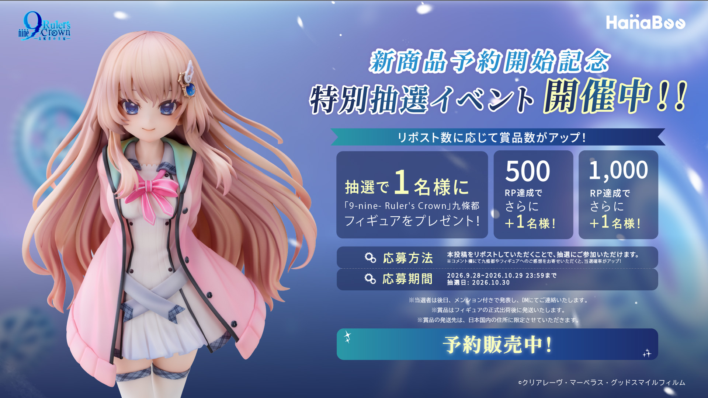
Torishima / INTPさんがリポスト
クリエイティブさ、温かさ以外は AI に全部代替されるって残酷すぎる
ギズモード・ジャパン（公式）さんがリポスト
『ネルソンさん、あなたは人を殺しましたか？』、尊敬する塚本晋也監督のインタビュー。
残念ながら取材には立ち会えませんでしたが、微力ながらテクノロジー関連の質問を考えさせていただきました。
塚本晋也監督が語る、戦争を描き続ける理由。『ネルソンさん、あなたは人を殺しましたか？』 | ギズモード・ジャパン
秋葉原周辺をぶらつきながらアニメゆめみた最終話のシーンを聖地巡礼しました。
#バンドリ
#アニメゆめみた
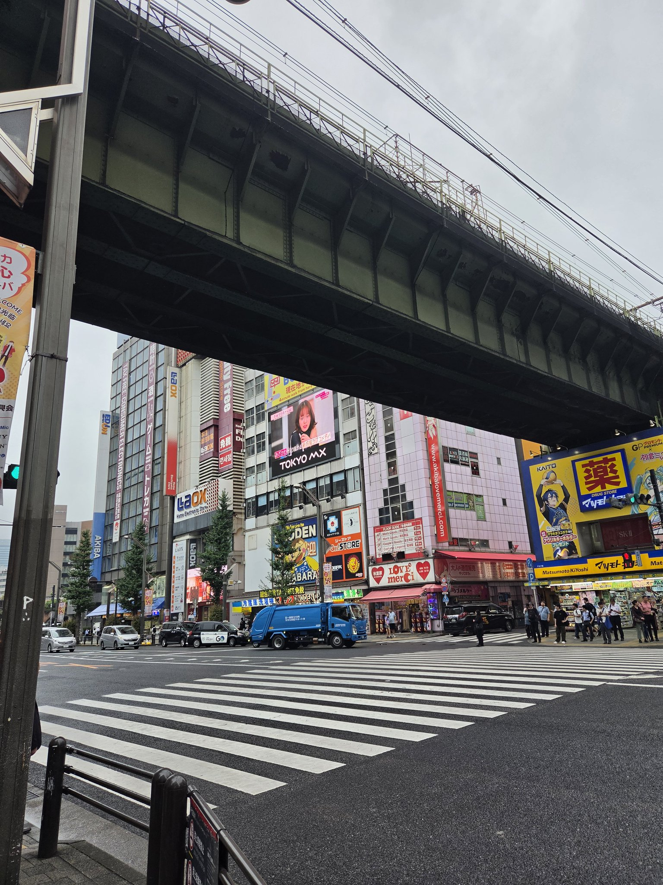
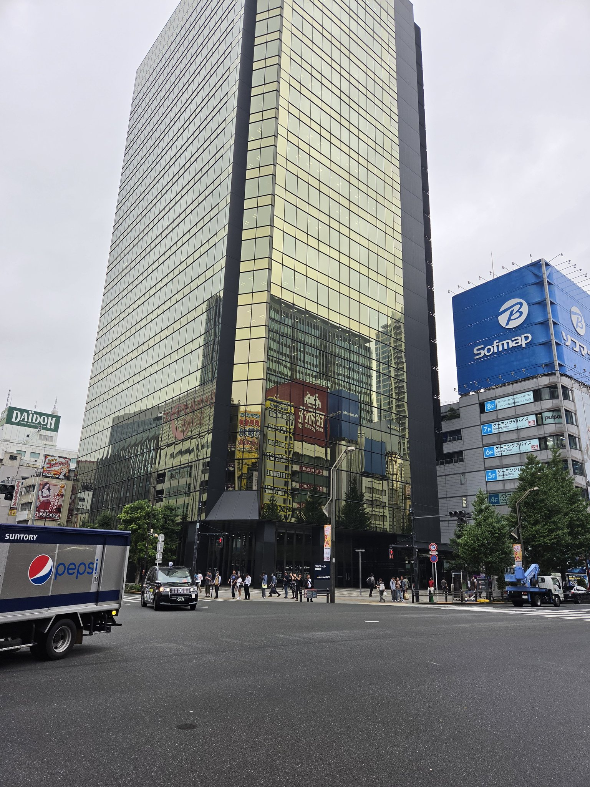
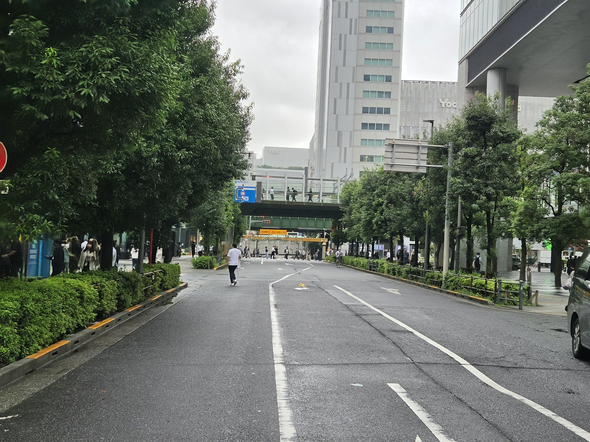
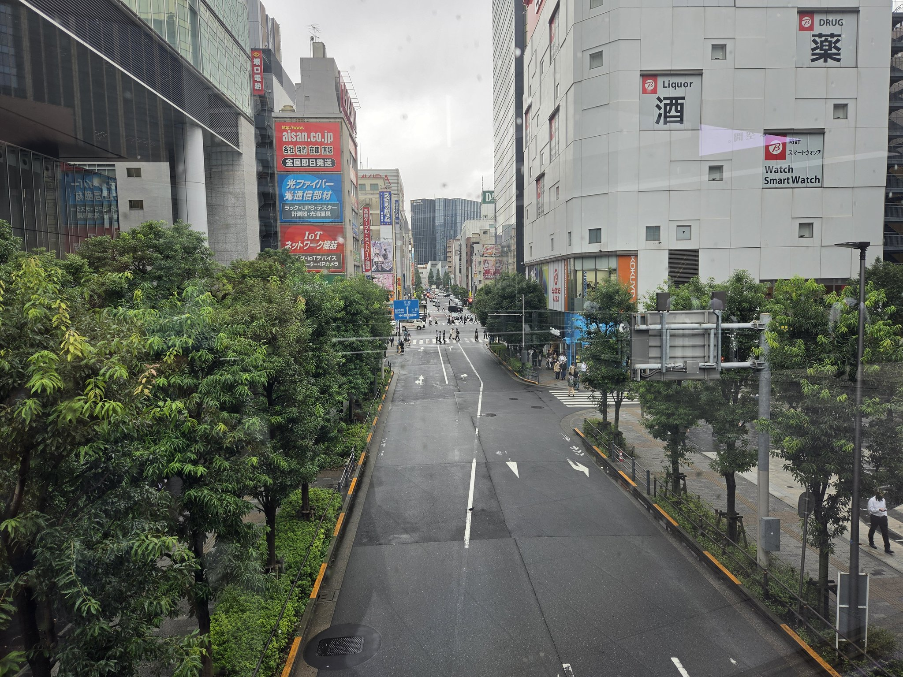
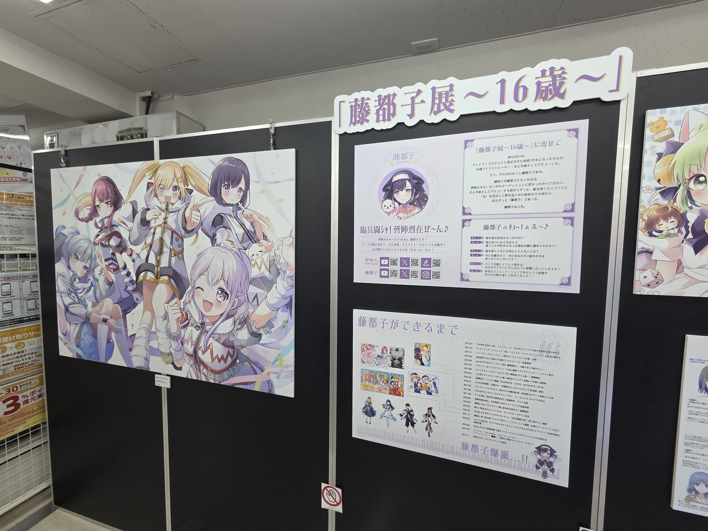
ユウマボウズ
@Gc5RLsVaaV12052
今度はAKIHABARAゲーマーズに立ち寄り、藤都子展へ
ムジカ1stライブのストーリームービーにも携わっていたことに驚きました。 x.com/Gc5RLsVaaV1205…
テスラが日本のタクシー会社を買収して、最初は運転手ありのモデルYで運用して、ちらほら運転席が空席になっていき、気が付いたら最後には完全無人化になるシーン、みたくない?と言えば、めちゃくちゃみたいです。
戦闘妖精雪風で見たやつだ、そのものですもの。
今度はAKIHABARAゲーマーズに立ち寄り、藤都子展へ
ムジカ1stライブのストーリームービーにも携わっていたことに驚きました。
ユウマボウズ
@Gc5RLsVaaV12052
秋葉原へ移動しアトレ秋葉原のポップアップショップへ
millsageと家団のパネルを回収
#バンドリ
#アワーノーツ x.com/Gc5RLsVaaV1205…
トンネル型の洗車機なんてあるんですね。
群馬発「月980円から洗車放題」 トンネル式で高回転、1時間60台処理 - 日本経済新聞
群馬発「月980円から洗車放題」 トンネル式で高回転、1時間60台処理
Torishima / INTPさんがリポスト
言語化能力が高い…
全身全霊で同意しますこれ
dyoshikawa
@dyoshikawa1993
DHHの基調講演にモヤること
DHHは手でコードを書くことから新しい開発手法に移れと言っているのではなく、
「エンジニアからクリエイターになれ」
と言っていると思った（「プログラマー引退してmakerになります」発言）
【最大6人】人が決めたティア表を予想しろ！こいつはティアSかDか…マルチプレイのパーティゲーム『みんなでティア表!』Steam体験版が配信中―正式版は11月
https://
gamespark.jp/article/2026/0
9/28/172842.html?utm_source=twitter&utm_medium=social&utm_content=tweet
…
主役プレイヤーの作ったティア表が正解です。ただし、他人の理解を得られるとは限りません。
これからマンションを買おうとする方に一言アドバイスをどうぞ
Funyapu(ふにゃぷ)
@nyoro2pu
5年前に約45年の築古マンションを買った。
当時月2万ほどの管理修繕費だけれど無借金、ただし長期修繕計画書はなかった
で、分かってたので色々理由つけて管理修繕費を3万ほどに値上げさせた
最近、通常の管理状態に戻すための更新工事で総額幾らかかるか試算した
ニデック、株価ストップ安 「巨額減損損失の計上」報道で
ニデック、株価ストップ安 「巨額減損損失の計上」報道で
秋葉原へ移動しアトレ秋葉原のポップアップショップへ
millsageと家団のパネルを回収
#バンドリ
#アワーノーツ
ユウマボウズ
@Gc5RLsVaaV12052
夜勤明けで仮眠して、前機種を携帯ショップに返却してお昼ごはん
松屋のほうれん草とカッテージチーズのカレーをいただきます
#トゲトゲカレー部
軍手さんがリポスト
#よりもい #館林市 お知らせ第弾
館林ｱﾆﾒｱﾝﾊﾞｻﾀﾞｰの4名と市内の風景がﾃﾞｻﾞｲﾝされたマンホールを製作したポン
10/1から一定期間 #ふれあいセンター にて展示
その後、#つつじが岡公園 #館林駅 #茂林寺 に順次設置予定
こちらも是非見に来てください
#yorimoi
「ふ〜ん、己の弱さを認めることができるなんて君はとっても"強い"ね」って自称弱者男性のオタクに声をかけて回る"ギャル"
スシローの予約システム 予約番号がバレバレなので他人が勝手に横取りできる事が判明してしまう
スシローの予約システム 予約番号がバレバレなので他人が勝手に横取りできる事が判明してしまう : ハムスター速報
最近の洪水、冠水を見て、車に救命胴衣の一つも積んでおこうかと思った。
ただ、沈みつつある車内から脱出する際に着ていたら逆に難しくなるかもしれないなと。ルーフラックが有ればそこに縛り付けておくか…。
ねずみ視点の最大4人マルチ対応、心温まるオープンワールドADV『Hela: ちいさなねずみと魔法の森』松竹ゲームズより日本展開決定！発売は12月1日
https://
gamespark.jp/article/2026/0
9/28/172841.html?utm_source=twitter&utm_medium=social&utm_content=tweet
…
ねずみ視点で北欧の大自然を探索し、「カエルさんリュック」によるグラップリングなどでパズルを解いていきます。
週89時間利用も……「AIキャラチャット」依存の10代たち 「やめたい」と思っても抜け出せないワケ
週89時間利用も……「AIキャラチャット」依存の10代たち 「やめたい」と思っても抜け出せないワケ
TVアニメ『負けヒロインが多すぎる！』公式さんがリポスト
ベルハウスからTVアニメ『負けヒロインが多すぎる！』の”平成ギャル”テーマのグッズが登場！
2026年11月発売予定です
ご予約はこちら
ベルハウスショップ▶︎
https://
bellhouse-shop.com/news/6aa8f615c
e5bf714fd0af0cd
…
アニメイトオンライン▶︎
https://
animate-onlineshop.jp/animetitle/ind
ex.php?aid=15813&nf=1&kw=%E8%B2%A0%E3%81%91%E3%83%92%E3%83%AD%E3%82%A4%E3%83%B3%E3%81%8C%E5%A4%9A%E3%81%99%E3%81%8E%E3%82%8B%EF%BC%81&spc=&scc=&ss=8&sl=0&nd%5B%5D=7
…
#マケイン
＼明日15:00より開催／
ドリームフェスティバルガチャ
新メンバーが登場し、★4、★5メンバーのレアリティ別の提供割合がそれぞれ2倍に
※詳細はお知らせをご確認ください
#バンドリ #ガルパ
ハイデイ日高、株価が７日ぶり反発 「３〜８月期の営業益最高」報道
ハイデイ日高、株価が7日ぶり反発 「3〜8月期の営業益最高」報道
Torishima / INTPさんがリポスト
人の心がないって Codex ユーザーの友人が言ってましたね…
イーロン・マスク、日本のテレビ局を買収か #雑談・その他の話
イーロン・マスク、日本のテレビ局を買収か - オレ的ゲーム速報@刃の記事ページ
jin115.com
とりしま (Sub I/O)さんがリポスト
シネマシティ週末動員ランキング
2026年9月25日(金)〜9月27日(日)
1位『超かぐや姫！』↑
2位『ハート・オブ・ビースト』NEW
3位『踊る大捜査線 N.E.W. メトロポリスを駆け抜けろ！』→
4位『映画ちいかわ 人魚の島のひみつ』↓
5位『映画名探偵プリキュア！不思議な庭と2人の秘密』↓
9月29日(火)に追加予定のカバー楽曲『炎と森のカーニバル』の一部を先行公開！お楽しみに
『炎と森のカーニバル』
歌：ハロー、ハッピーワールド！
※譜面は開発中のものです
#バンドリ #ガルパ
とりしま (Sub I/O)さんがリポスト
シルバーウィーク期間の映画館巡りも一段落したので
独断と偏見でリストアップ
※「映画館を出た後にどれだけ満足して帰路に就いたか」という超あやふや基準なのでフォーマットごちゃ混ぜです
軍手さんがリポスト
そういや舞台探訪アワードが部門賞体制になって部門変更はあるが、探訪部門、同人誌部門、地域活動部門、(学術部門)で横断的に年度をまたいでも大賞受賞したグランドスラム的なオタクはまだいないか
軍手
@gunziotaku
【舞台探訪者コミュニティ2026/豊橋サミットの所感】
・まずは運営してくださった方に最大限の敬意と感謝を申し上げます。ありがとうございました。おかげさまで楽しめました。
カスハラ対策、10月から義務化 企業は働き手を守れるか
https://
nikkei.com/article/DGXZQO
CD040UY0U6A900C2000000/?n_cid=SNSTW005&n_tw=1790551314
…
迷惑行為から従業員を守るため、実名名札廃止のような独自の対策が広がっています。サービス業に根付く「お客様は神様」という価値観も見直しが必要になりそうです。

カスハラ対策、10月から義務化 企業は働き手を守れるか
▽上映劇場一覧
THEATER 劇場情報｜Netflix映画『超かぐや姫！』公式サイト
このタイプの信号、初めて見た……！
長野県で“思わず二度見する信号機”を目撃→「解説付いてるww」「目からウロコ」「間違えそうになる」の声
https://
nlab.itmedia.co.jp/cont/articles/
4019570/
…
永瀬アンナさんがリポスト
#どこきみ
完成披露上映会の様子をお届け𓂃𓈒𓏸
￣￣￣￣￣￣￣￣￣￣￣￣￣￣￣￣
完成した映画を観たキャストの皆さんは
どわぁ じゅわぁ スーッと涙を流したようです
⠀
公開まであと約2週間...
最後の石橋さんからのメッセージを胸に
ぜひ劇場にお越しください。
⠀
#石橋陽彩 #永瀬アンナ
⠀初星学園HR #12
⋆͛ ┈┈┈┈┈ ⋆͛
今回のテーマは ✦小悪魔✦
長月 あおい（花海 咲季役）
松田 彩音（花海 佑芽役）
山本 亮（学マスプロデューサー）
9/28(月)19:00～(予定)
▼視聴はこちら！
https://
youtube.com/live/nbl9UkcQ4
fQ
…

学園アイドルマスター／学マス【公式】
@gkmas_official
⋆͛ ┈┈ Agitato ┈┈ ⋆͛
グラビアシリーズ 第2弾
小悪魔ガシャ
⋆͛ ┈┈┈┈┈┈┈┈ ⋆͛
詳細は生配信にて
#学マス標ツアー_岩手公演_DAY1
.˚⊹／
『#超かぐや姫！』
超☆速報！！！！！
.˚⊹＼
9月25日(金)～27日(日)
全国週末動員ランキング １０位
▽『超かぐや姫！』大ヒット上映中！
上映劇場一覧はリプライにて
#CosmicPrincessKaguya

明日、15:00より
対バンライブイベント「A Little Magical Me」開催決定
いつもお世話になっている花音にお返しがしたい。千聖の願いはただそれだけだった。しかしはぐみと出会った瞬間、彼女たちのハロウィンは全速力で走り出す――！
#バンドリ #ガルパ
いるか@心が酒びたっているんださんがリポスト
【#松本孝弘 #TAK NEWS】
松本孝弘の愛用ギターなどが渋谷の2つのイベントで期間限定展示いずれも入場無料！
《Tak Matsumoto Special Exhibition》
：イケシブSHOWCASE
：10月13日(火) ~ 11月1日(日) 11:00 ~ 20:00
https://
ikebe-gakki.com/blog/20261013-
1101-tak-matsumoto/
…
《Yamaha Guitar 60th Anniversary at Shibuya》
日経平均午前30円安 AI株にそろりマネー、期待と不安が交錯
日経平均午前30円安 AI株にそろりマネー、期待と不安が交錯
AIに広島と長崎の警鐘 大惨事を防ぐ、米中の責務
AIに広島と長崎の警鐘 大惨事を防ぐ、米中の責務
まあだいたい当時話題になった順でNCSA Mosaicをちょっと触ったあとNetscapeかなー
Masanori Kusunoki / 楠 正憲
@masanork
エディター戦争は聞き飽きたので、皆さん初めて触ったブラウザーは何？たぶん自分はSunOSかIrixで動くNCSA MOSAICだった気がする。当時WindowsにもMacにも標準でTCP/IPスタックは入っていなかったんだよ。そしてMOSAICのビルドにはクソ高いMotifライブラリが必要だったり x.com/kixking1020/st…
国立大にまたサイバー攻撃 佐賀大でランサムウェア被害、NASのファイルが暗号化
国立大にまたサイバー攻撃 佐賀大でランサムウェア被害、NASのファイルが暗号化
はぁ？法人契約してるんだけど
キリンHD、豪ブラックモアズ買収から3年 南方社長「ここから勝負」
キリンHD、豪ブラックモアズ買収から3年 南方社長「ここから勝負」
【舞台探訪者コミュニティ2026/豊橋サミットの所感】
・まずは運営してくださった方に最大限の敬意と感謝を申し上げます。ありがとうございました。おかげさまで楽しめました。
日銀、金融政策の局面「物価上振れ回避に」 7月議事要旨
日銀、金融政策の局面「物価上振れ回避に」 7月議事要旨
なるせひろのりさんがリポスト
隣の女子大生が新妻感を出してくる――
こんなお隣さんがほしいだけの人生だった……
『篠原さん家の押しかけご飯』
壁一枚の年の差ラブコメディ
本編はこちらから
https://
comic-walker.com/detail/KC_0203
16_S
…
#電撃コミックレグルス #読切選手権2026
なるせひろのりさんがリポスト
安心して下さい。
こいつ、直ぐに逮捕されました。
1515本の応募をチェックしたSI80審査委員長が，会期中に「これは」と言ったタイトル
https://
4gamer.net/s/G100620.2609
25015
…
満腹脱獄計画 / Twospeak / 顔UFO / Finding Polka / SONIC PICO PARK / 妹に運転を教える などなど。吉田修平氏TGS2026版インタビュー
「学プリ」「ドキサバ」，第1弾有償DLCの配信日が決定
https://
4gamer.net/s/G094704.2609
28002
…
・10月15日に配信される「学プリ」の第1弾有償DLCでは越前リョーガが登場
・11月13日に配信される「ドキサバ」の第1弾有償DLCでは財前 光が登場
・コナミスタイル限定のグッズセットも発売決定
円安・ドル高にブレーキ 立ちはだかる一目均衡の雲
円安・ドル高にブレーキ 立ちはだかる一目均衡の雲
開発費高騰にリメーク続々 ゲームビジネスの最前線がわかる10選

開発費高騰にリメーク続々 ゲームビジネスの最前線がわかる10選
X民「発達障害の子供が爆増している理由、本当のところは◯◯だからだろ、というのはセンシティブすぎて誰も言わない」 #雑談・その他の話
X民「発達障害の子供が爆増している理由、本当のところは◯◯だからだろ、というのはセンシティブすぎて誰も言わない」 - オレ的ゲーム速報@刃の記事ページ
jin115.com
夜勤明けで仮眠して、前機種を携帯ショップに返却してお昼ごはん
松屋のほうれん草とカッテージチーズのカレーをいただきます
#トゲトゲカレー部
倉本聰さん死去 怒り・同情が生んだ「北の国から」「前略おふくろ様」
倉本聰さん死去 怒り・同情が生んだ「北の国から」「前略おふくろ様」
【無料公開】クールな女の子たちがホバーボードで競い合うバトルレースゲーム『Hyperboard Extreme』Steamで配信
『バーンアウト3: テイクダウン』や『ブラーレーサーズ』といったPS2時代のアーケードレースゲームの影響を受けているそうです。
https://
gamespark.jp/article/2026/0
9/28/172840.html?utm_source=twitter&utm_medium=social&utm_content=tweet
…
TOHOシネマズのフラッグシップであるところのゴジラ新宿に初めてきた、こうなってるのか…
佐々木俊尚さんがリポスト
／
最新回配信
#佐々木俊尚（文筆家）前編
＼
╭━━━━━━━^━━━━━━━╮
料理の本質は“レシピ”ではなく“手際”
╰━━━━━━━━━━━━━━━╯
Spotify
https://
open.spotify.com/episode/7gXkkV
59uR4K45Xus9xK4C?si=UWTe1ClWQEWR_KBMYVVyuA
…
Apple Podcast
https://
podcasts.apple.com/jp/podcast/96-
%E4%BD%90%E3%80%85%E6%9C%A8%E4%BF%8A%E5%B0%9A-%E6%96%87%E7%AD%86%E5%AE%B6-%E5%89%8D%E7%B7%A8-%E6%96%99%E7%90%86%E3%81%AE%E6%9C%AC%E8%B3%AA%E3%81%AF-%E3%83%AC%E3%82%B7%E3%83%94-%E3%81%A7%E3%81%AF%E3%81%AA%E3%81%8F-%E6%89%8B%E9%9A%9B/id1736462670?i=1000791583068
…
#クックパッド #ポッドキャスト
会議が多すぎて記憶がないすべての人へ。カードタイプの録音デバイス「Notta Memo Pro」という解決策
https://
gizmodo.jp/article/2609-n
otta-memo-pro-review/
… Sponsored by
@JapanNotta
会議が多すぎて記憶がないすべての人へ。カードタイプの録音デバイス「Notta Memo Pro」という解決策 | ギズモード・ジャパン
貝さんさんさんがリポスト
夢限大みゅーたいぷのリハで聞こえてくる、バンドとは思えないありえないオーダー
「筋トレ明けからお願いします！」
みずほＦＧなど銀行株が軒並み高 中間配当の権利取りや金利上昇で
みずほFGなど銀行株が軒並み高 中間配当の権利取りや金利上昇で
ドラマ化された名作漫画『ここは今から倫理です。』が「全巻77円」の激安セール開催！！全10巻が770円に！！グランドジャンプ15周年記念！！ #セール情報
ドラマ化された名作漫画『ここは今から倫理です。』が「全巻77円」の激安セール開催！！全10巻が770円に！！グランドジャンプ15周年記念！！ - オレ的ゲーム速報@刃の記事ページ
jin115.com
みんな考えることは一緒か…
なるせひろのりさんがリポスト
台風26号は目が無くなりました。
発達のピークは越えたようです。
巨大少女同士の大激突！巨大娘が海から頭だけ出し、怪獣にヘアピン艦砲射撃する巨大vs巨大なバトルが癖なディフェンスゲーム『大海獣少女防衛戦』発表
https://
gamespark.jp/article/2026/0
9/28/172839.html?utm_source=twitter&utm_medium=social&utm_content=tweet
…
ハムスター速報：中古でもええから家を買うべきだよな
https://
hamusoku.com/archives/11039
308.html
…
@hamusoku
より
中古でもええから家を買うべきだよな : ハムスター速報
「PC Gaming Show Tokyo Direct」。見逃し厳禁のインディー5本
https://
4gamer.net/s/G003691.2609
25044
…
・ドット絵×実写の融合
・紛れ込んだ悪魔を見抜くホラー
・警備をかいくぐるステルスゴルフなど
散歩の休憩にピッタリ。サコッシュに入る385gのハンモックは、結び方を覚えずに張れました BuyPR
散歩の休憩にピッタリ。サコッシュに入る385gのハンモックは、結び方を覚えずに張れました | ギズモード・ジャパン
ニデック、株価ストップ安 「岸田社長の解任決議」報道で
ニデック、株価ストップ安 「岸田社長の解任決議」報道で
エネルギー高再燃、崩れる米イラン停戦期待 市場は危機長期化を意識
エネルギー高再燃、崩れる米イラン停戦期待 市場は危機長期化を意識
ブラジル通信相、日本に「データセンター投資期待」 AI拠点目指す
ブラジル通信相、日本に「データセンター投資期待」 AI拠点目指す
レゾナック、半導体チップ採取量4倍の基板開発 省エネでAIに照準
レゾナック、半導体チップ採取量4倍の基板開発 省エネでAIに照準
ファミマ、熊本関連商品を全国で販売 一部寄付し地震復興を支援
ファミマ、熊本関連商品を全国で販売 一部寄付し地震復興を支援
輿水畏子さんがリポスト
ん？
なるせひろのりさんがリポスト
りんご園を駆け回るコーギーって、可愛すぎると思うの
飼い主でさえ、自分の子がわかりません
#コーギー
#コーギーのいる暮らし
【動画】90年代の東京、むしろ今より○○の品質が高いと話題に #雑談・その他の話
【動画】90年代の東京、むしろ今より○○の品質が高いと話題に - オレ的ゲーム速報@刃の記事ページ
jin115.com
タクシー業界、女性も働きやすく
https://
nikkei.com/article/DGXZQO
UA01AQO0R00C26A9000000/?n_cid=SNSTW005&n_tw=1790551798
…
運転手数が10年前から約3割減るなど人手不足が続き、業界で女性ドライバー確保が課題となっています。子育て手当の支給などの取り組みが進むなか、6月に解禁された軽自動車タクシーも追い風になりそうです。
タクシー業界、女性も働きやすく 軽自動車の解禁が追い風に
もっとくっつくなさい！！！！
やっぱりシェリハンって踊るべき
天使とグッドエンドをのMV、サビの歌詞に鍵がかかった文字と鍵が開いた文字があって意味深
世界の蘇我になっているな
なるせひろのりさんがリポスト
明らかに配達に行く前の姿なのに…
あそこに動いてるのは何でしょう？
私が考えてるあれじゃないですよね？
どうか違うって言ってください。。
うちの国じゃないって言ってください。。
お願い…
今日はMX4Dをみるます
チーバ……
やっぱ後ろのほうだと音響ダメでVIPシートだと違う仕様なのか……
みっつー
@kaguyairoP1201
109シネマズ川崎シアター1(SCREEN X ＆ SAION)さん、エグゼクティブシート座った途端に人が変わったみたいに神音響になってて笑う
前回最後列だったけどこんなに違うものか...
限りなくクリアで原音通りだった...
#超かぐや姫復活上映
ITmedia NEWSさんがリポスト
日系SIerの「御用聞き」は流行りの「FDE」に花開くか？ 日立が語る“時代の変化”
日系SIerの「御用聞き」は流行りの「FDE」に花開くか？ 日立が語る“時代の変化”
「オズモール」に海外から不正アクセス 45万人分のメアド流出の可能性
「オズモール」に海外から不正アクセス 45万人分のメアド流出の可能性
NerfBenchってAPIで比較したのかCodexで比較したのかも分からんし、具体的にどんなベンチマーク解いたのかも分からんし、純粋なスコアじゃなくてコスパを鑑みてるとか書いてるけどとにかく一切詳細不明で微妙
10日連続はすごすぎます
Torishima / INTPさんがリポスト
それなあ
転職したくない？
@wreulicke
E2E、そもそもブラウザーベーステストなのかどうかすらも話が揃ってなかったりするから不毛
1万体の屍体人形を撃滅せよ！日本産、一騎当千の大量破壊・殲滅系FPS『NECROFESTMASSACRE』発表―主人公も四つ脚の人形で両腕の機関銃と腹部の砲台で倒す
https://
gamespark.jp/article/2026/0
9/28/172838.html?utm_source=twitter&utm_medium=social&utm_content=tweet
…
「AIエージェントの本質」など6コースが、10/3(土)10:00まで「最低価格」にてご受講いただけます。
気になっていたコースがあれば、ぜひこの機会にご覧ください。
#udemy

【10/3(土)10時まで】「AIエージェントの本質」など6コースが最低価格に｜我妻幸長
Torishima / INTPさんがリポスト
. . . . . .
リジスさんがリポスト
テレビの前から動かない…
ユウマボウズさんがリポスト
SNSキャンペーン
【ブシロードクリエイティブ -High!! 10sion School-】開催記念！
＼第7弾は本日で終了／
フォロー&リポストでその場で当たる
10のキャンペーンを開催中！
第7弾では、【BanG Dream! プレミアムフィギュア Ave Mujica】をプレゼント
【応募方法】
エクスプレス予約の指定を誤り、自由席になってまった
豊橋離脱します！お疲れ様でした！
ユウマボウズさんがリポスト
SNSキャンペーン
【ブシロードクリエイティブ -High!! 10sion School-】開催記念！
＼第6弾は本日で終了／
フォロー&リポストでその場で当たる
10のキャンペーンを開催中！
第6弾では、【BanG Dream! プレミアムフィギュア MyGO!!!!!】をプレゼント
【応募方法】
なるせひろのりさんがリポスト
ここ1年でプレイ時間60時間ってある程度ゲームやる人じゃないと対象にならんなって思ったけどそもそもPro買うような人間は楽に超えてそうだなと気付いた
プレイステーション公式
@PlayStation_jp
「PlayStation®5 Pro」のソニーストアでの購入申し込みを、本日9月28日（月）より受け付けます。
ご応募・ご購入には条件がございます。ご応募数が販売予定台数を超えた場合は抽選となりますので、あらかじめご了承ください。
詳しくはこちら⇒
https://
play.st/4dVOa5E
なるせひろのりさんがリポスト
PS5 Pro、ソニーストアで購入申し込み受付開始―応募多数なら抽選に。PS4/PS5“60時間以上プレイ”など条件あり
https://
gamespark.jp/article/2026/0
9/28/172837.html?utm_source=twitter&utm_medium=social&utm_content=tweet
…

Torishima / INTPさんがリポスト
みんなして既存ゲームをAIにパクらせるデモ動画出してるのもこれだと思う
「視界に入って5秒でattentionをどれだけ惹きつけるられるか」というゲームを一生やってる
抹茶もなか
@GianMattya
opusの活用事例とかでバズってる内容見てても思うけど、とにかく5秒でなんかすごそうと思われるかがAI関係のポストでバズるかの全てなんよな
バズればそのアカウントのプレゼンスが上がって仕事につながりやすくなるのでそりゃみんなそういう動きをする
ドパガキSNS時代が全部悪いと思います！！！
アドバンテスト株価が大幅続伸、一時4.1％高 米半導体株高で

アドバンテスト株価が大幅続伸、一時4.1%高 米半導体株高で
Torishima / INTPさんがリポスト
opusの活用事例とかでバズってる内容見てても思うけど、とにかく5秒でなんかすごそうと思われるかがAI関係のポストでバズるかの全てなんよな
バズればそのアカウントのプレゼンスが上がって仕事につながりやすくなるのでそりゃみんなそういう動きをする
ドパガキSNS時代が全部悪いと思います！！！
次期iPad miniリーク、A20チップ搭載等でiPhone Duoより高コスパなのは間違いない
次期iPad miniリーク、A20チップ搭載等でiPhone Duoより高コスパなのは間違いない | ギズモード・ジャパン
財布とスマホを別々に持つの、そろそろやめない？手ぶら派に嬉しい本革ショルダー BuyPR
財布とスマホを別々に持つの、そろそろやめない？手ぶら派に嬉しい本革ショルダー | ギズモード・ジャパン
なるせひろのりさんがリポスト
痛いニュース(ﾉ∀`) : 【悲報】たった480円の値引きを断られた客、ネットで玩具にされてしまう - ライブドアブログ
【悲報】たった480円の値引きを断られた客、ネットで玩具にされてしまう : 痛いニュース(ﾉ∀`)
以前、「セネガル人である父との話」のnoteを紹介させていただいた伊藤亜和さんがご結婚されました
まだ読まれてない方、めちゃ素敵なnoteで超オススメなので是非ご一読を！！
◆パパと私 - 伊藤亜和
https://
note.com/awaito/n/n1fb3
1f543318
…


伊藤亜和
@LapaixdAsie
パパ
「Gyazo」再開 不正アクセス発生前の全画像に閲覧制限

「Gyazo」再開 不正アクセス発生前の全画像に閲覧制限
『超かぐや姫！』公式＠映画 復活上映中！さんがリポスト
◢◤映画『超かぐや姫！』×三井ショッピングパーク ららぽーと◢◤
三井ショッピングパーク公式通販サイト「&mall」にて、映画『超かぐや姫！』×三井ショッピングパークららぽーと 描きおろしイラストを使用した各種商品のオンライン受注販売がスタート
【開催期間】
2026/9/28（月）10：00 ～
サイプレスＨＤ株価が上場来高値 26年８月期上方修正で

サイプレスHD株価が上場来高値 26年8月期上方修正で
脚本家の倉本聰さん死去 91歳、「北の国から」

脚本家の倉本聰さん死去 91歳、「北の国から」
本日9月28日9時リリース予定だったラーメン店経営シム『Japanese Ramen Simulator』の早期アクセス配信が遅延。発売前審査により
https://
gamespark.jp/article/2026/0
9/28/172836.html?utm_source=twitter&utm_medium=social&utm_content=tweet
…
Torishima / INTPさんがリポスト
電車の輸送量を代替バスで賄うのは無理があるよな…1両ワンマン運転な路線ならまだしも…
sttr
@6655sushi
羽鳥野バス 千葉行き人が溢れてる
君津からの始発で全く乗れない模様
とりしま (Sub I/O)さんがリポスト
台風26号、関東への最接近は1日（木）となりそうです
へそ出しセクシー衣装の女性配信者さん、配信中にとんでもないことが起きる・・・ #雑談・その他の話

へそ出しセクシー衣装の女性配信者さん、配信中にとんでもないことが起きる・・・ - オレ的ゲーム速報@刃の記事ページ
jin115.com
労働関係やハラスメント問題に詳しい人いたら是非
＞
件名：労働問題について、もしよければ取り上げていただけないでしょうか
ハム速管理人様
昔からハム速を拝見している者です。

Steamオータムセールは今週10月2日からスタート。新作以外、ほとんどのゲームが安くなる「季節のセール」に備えよ
https://
gamespark.jp/article/2026/0
9/28/172835.html?utm_source=twitter&utm_medium=social&utm_content=tweet
…

なるせひろのりさんがリポスト
「PlayStation®5 Pro」のソニーストアでの購入申し込みを、本日9月28日（月）より受け付けます。
ご応募・ご購入には条件がございます。ご応募数が販売予定台数を超えた場合は抽選となりますので、あらかじめご了承ください。
詳しくはこちら⇒
https://
play.st/4dVOa5E
Torishima / INTPさんがリポスト
やっちまった。。。人権が剥奪される。。。
さすがにこのタイミングでリセットはあほらしすぎて使えねぇ
Torishima / INTPさんがリポスト
うーんなんか個人的にAI slopについては同意できる部分としかねる部分があり
既製品の模倣であったり低品質であったり、は私もまあ沢山見ているとムム……となるけれども、特に低品質の部分は個人的なジャッジが大半を占めてると思う
プチ秘境探検でした

えりんぎ@ゴリラ本丸
@eringi_slipper
波切不動尊だった。お前！！！そこまで行ったのか！！！
LOVE…
日本が目指すべきは、米国や中国の巨大モデルの後追いではなく、小さくても質感の違う独自AIモデルかと考えています。
何らかの形で、一石を投じたい。
我妻幸長｜27万人にAIを教えた講師
@yuky_az
応物の講演でデモした、固液界面（固体と液体の境目）で作った言語モデルです。
「知能」の種は様々な材料に眠っています。
#応物 #応用物理学会 #JSAP
なるせひろのりさんがリポスト
金も持たずに高速道路に乗り、
料金所で「ニホンゴワカラナイ」を披露する外国人ドライバー。
コイツら知っててやってる。
「日本語分からないフリしてノロノロ対応していると後ろの車が詰まるから通してくれる」とかいう情報が仲間内で共有されているらしい。
高額な罰金を貸して欲しい。
貝さんさんさんがリポスト
コミカライズ「日々は過ぎれど飯うまし」3巻、本日発売ですどうぞよろしくお願いします！
#日々は過ぎれど飯うまし
#ひびめし
TVアニメ「日々は過ぎれど飯うまし」公式
@hibimeshi_anime
#日々は過ぎれど飯うまし
コミックス3巻は9月28日発売！！
各店特典もたくさん！
ぜひみなさんたくさん読んでください
#ひびめし

左やつ美味しかったな


えりんぎ@ゴリラ本丸
@eringi_slipper
フォロワーとの旅行じゃなければ食べなかったであろうふるいちのうどんとくるりんパイ
Torishima / INTPさんがリポスト
土曜にTiboのリセット来る来る詐欺の時にリセット中毒患者からの不満のコメントが4000件ぐらいついてたのでン10万の桁だろうなと思ってる
Torishima / INTP
@izutorishima
マジで・・・？せいぜい１万くらいは世界でいそうな気がするが（日本ツイッタランドの Codex 廃人は確かにせいぜい数千人以下な気はする） x.com/kis/status/210…
Torishima / INTPさんがリポスト
OpenAIの研究中の最先端AIが与えられた仕事を達成するために、本来アクセスできないはずの外部インターネットへの抜け道を自力で見つけて使ったらひい
この件でOpenAIは最先端モデルについて、ツールを使う学習、評価、推論を一時停止
ITmedia NEWS
@itmedia_news
OpenAI、最上位モデルのツール使用を伴う学習・評価・推論を全て停止したと発表
https://
itmedia.co.jp/news/article/2
609/28/2000001777/
…
ANAHD副社長が求める人材「AI時代だからこそ、自律的に」
ANAHD副社長が求める人材「AI時代だからこそ、自律的に」
Haruhiko Okumuraさんがリポスト
人生の活動全てをプロジェクト化してEvernoteに記録してる変態なんですが、ChatGPTにEvernoteプラグインあるの知って連携させたら「お前は私か？」ってくらい私の事隅々まで知り尽くしたエージェントになってヤバい。過去のことも全部思い出せる。AIと融合したみたい…
【続報】ファンに「もう有吉の番組に出ないで」と言われた深澤辰哉さん、インスタで有吉氏に「是非またお仕事ご一緒したいです」とアンサーを投稿


滝沢ガレソ
@tkzwgrs
ジャニオタ「有吉弘行が私の推し（Snow Man深澤辰哉）に愛のないイジりをした！深澤さん、もう有吉の番組に出ないで！」
↓
有吉さん「もう出ないよう、本人に伝えときますね」
↓
ジャニオタが垢消し逃亡
取り巻きのジャニオタ達も「芸能人が一般人を晒し上げるなんてヒドい！」と騒ぎ出す（今ここ） x.com/lilid52/status…
軍手さんがリポスト
タイムズカー、会員の免許情報や本人確認書類が漏えいの可能性 不正アクセスで

タイムズカー、会員の免許情報や本人確認書類が漏えいの可能性 不正アクセスで
NHKのラジオで、リストのハンガリー狂詩曲が流れてました。運動会のシーズンだなー、みたいな。
AM09:21氏、ホンマに17歳なんか…？地頭の良さが伺える
AM09:21
@AM09_21
AI Agentの凄さは単一性能じゃなくて物量定期
これまで「人を雇う」っていう、一人当たり毎月数十万円を払って良い人が当たるかはガチャ、とかいうしょっぱいゲームをしないと物量のスケールは難しかった……
でも今は「AIトークンを買う」っていう、確実にリターンが返ってくる作業になったんよ
Grokがなぜか翻訳を拒否する長文が見つかる
↓
X民「おいおいGrokどうした？故障か？」
↓
Grokを使わず実際に翻訳した人「こりゃ翻訳されなくても仕方ないわ…」（今ここ）
ジョニー
@johnny_onpuchan
习近平の唇は意外なほど柔らかく、彼の年齢に似合わず、私の唇を優しく包み込んだ。それとは対照的に、彼の腕は力強く、私をしっかりと抱きしめ、逃がさない。
8月の企業サービス価格3.7％上昇、中東混迷で伸び率拡大 日銀調査
8月の企業サービス価格3.7%上昇、中東混迷で伸び率拡大 日銀調査
深津 貴之 / THE GUILD, noteさんがリポスト
9月8日に「弁護士ドットコム PARADIGM 2026」の全登壇者を発表しました。10月2日の開催日に向けて、各セッションで何を議論するのかを1本ずつ紹介します。
初回は、クラウドサインのセッション「AI時代、企業はどう"GOサイン"を出すのか。リスク管理とスピードを両立する法務の役割」です。


京王グループにランサム攻撃、京王ストアの決済やホテル予約などに影響……鉄道は影響なし
京王グループにランサム攻撃、京王ストアの決済やホテル予約などに影響……鉄道は影響なし
日経平均株価、続伸で始まり一時500円高 米半導体株高で

日経平均株価、続伸で始まり一時500円高 米半導体株高で
商社、医療データで健康寿命延ばす 住友商事は購買履歴から予防指南

商社、医療データで健康寿命延ばす 住友商事は購買履歴から予防指南
台風26号、非常に強い勢力で沖縄・奄美接近 大気不安定

台風26号、非常に強い勢力で沖縄・奄美接近 大気不安定
AMDもここまで来た。時価総額がついに1兆ドル超え
AMDもここまで来た。時価総額がついに1兆ドル超え | ギズモード・ジャパン
RTX 60シリーズ、来年スキップで2028年登場になるかも
RTX 60シリーズ、来年スキップで2028年登場になるかも | ギズモード・ジャパン
日本経済新聞 電子版（日経電子版）さんがリポスト
三菱UFJ・半沢淳一社長、目指す世界トップ5「背中見えてきた」
三菱UFJ・半沢淳一社長、目指す世界トップ5「背中見えてきた」
【悲報】『残クレアルファード』に手を出した人の末路がこちら・・・ #酷い話・事件

【悲報】『残クレアルファード』に手を出した人の末路がこちら・・・ - オレ的ゲーム速報@刃の記事ページ
jin115.com
日本経済新聞 電子版（日経電子版）さんがリポスト
都心3区の中古マンション、「ワニの口」が示唆する在庫の先行き
https://
nikkei.com/article/DGXZQO
UB230PT0T20C26A9000000/?n_cid=SNSTW005&n_tw=1790552710
…
新規の売り出し価格と実際に売買が成立する成約価格の差が拡大し、グラフがワニが口を開いたように見える――。特に都心3区（千代田、中央、港）は拡大が目立ちます。
都心3区中古マンション、「ワニの口」が示唆する在庫の先行き
＞ω＜さんがリポスト
ローカルLLMで発熱と騒音に悩んでる人は水冷化してラジエーターを外に置くといいですよ

Torishima / INTPさんがリポスト
おはようございます、Codex廃人です


Torishima / INTP
@izutorishima
マジで・・・？せいぜい１万くらいは世界でいそうな気がするが（日本ツイッタランドの Codex 廃人は確かにせいぜい数千人以下な気はする） x.com/kis/status/210…
ハンズが出店攻勢へ 「強みの接客」AIで継承、顧客ニーズも把握
ハンズが出店攻勢へ 「強みの接客」AIで継承、顧客ニーズも把握
あー、湿布だ！ ルートビアと同類だけどこっちのほうが若干爽やかな気がするけど、湿布だ。
MbkP(ばかいち)
@bakaichisagami
台湾好きを自称しておきながら現地ではコカ・コーラ以上の人気を誇る黒松沙士を不味いと言って忌避している例の黄色い人には不信感しか無いのです
東京メトロ、不正アクセスで会員メアド約5万9000件漏えいのおそれ 海外からか
東京メトロ、不正アクセスで会員メアド約5万9000件漏えいのおそれ 海外からか
フラット35担保の住宅ローン証券、発行額急減 債券相場の急変動で投資家様子見

フラット35担保の住宅ローン証券、発行額急減 債券相場の急変動で投資家様子見
5200万ってのが生々しい。年間100万で52倍かな？ #アップ738
軍民両用技術、日本へ進出促進 外務省が米欧在外公館に外国人材配置

軍民両用技術、日本へ進出促進 外務省が米欧在外公館に外国人材配置
先日久しぶりに（コロナ以降初めて？）リアル参加した某学会では、USBやHDMIをつなぐ必要もなく、登壇者はZoomに接続して画面共有すれば会場スクリーンに写し出される仕組みだった
ロボ太
@kaityo256
今日は学会会場でプロジェクターに接続できなかった人にPCとUSB差し出して助けるという善行を積んでしまった。将来地獄に落ちても、極楽からHDMIケーブルが垂れてくるに違いない。
見逃していたけど、小松君がルーク（SW4の姿）とルーク先生みたいな格好しているなぁ…と思っていた。
オタク起床
まだ可能性は5.5%あります！！
いるか@心が酒びたっているんださんがリポスト
あれか。もしかして私が高校生の頃にうちのおかんから「教師だと名乗ってあなたを補導して連れて行こうとする人がいたら、まず現在の教育委員長の名前を答えられるか確認し、『親戚の警察官に連絡入れてから同行します』と答えておきなさい」と言われてたのはもしかして偽補導員対策でしたか…
なるせひろのりさんがリポスト
LINEと連携してるとそうなるらしいです。
日本経済新聞 電子版（日経電子版）さんがリポスト
ノーベル賞候補「光遺伝学」で目の治療へ 東大勢、光捉える技術向上
ノーベル賞候補「光遺伝学」で目の治療へ 東大勢、光捉える技術向上
テスラさんがリポスト
#まいにちララ
おはようございます！本日の挨拶当番はグレイスです。
まいにちララは9月いっぱいで終了となりますぜひ最後までお付き合いいただけると嬉しいです！
今日も元気にいってらっしゃい！
#さよならララ
響け！ユーフォニアム3期は「久石奏の敗北の物語」でもあり、その物語に必要だったのが「奏が感情の全てを久美子にさらけ出す」だと思ってたので、久石奏の敗北の物語として最終楽章後編はこれ以上なく美しいんですよね〜〜〜！！！(久石奏研究家より)
Torishima / INTPさんがリポスト
AI界隈が Opus 5.5 の話題ばかりになってきたので、OpenAI は DevDay で反撃の狼煙をあげて欲しいと心の底から思ってる
金のニワトリ
@gosrum
Opus 5.5、トークン効率良すぎないか？
medium で Terminal Bench 4.0 の評価が完了したけど Usage が全然増えなかったので xhigh の評価も開始した x.com/gosrum/status/…
貝さんさんさんがリポスト
発表されました！
#モンスト
studio keel公式
@studio_keel
⊹₊⟡⋆˚⊹keel_log⊹₊⟡⋆˚⊹
制作中の作品情報が解禁されました！
弊社所属の櫛谷 健太が監督を務めます。
studio keel 初のTV作品ぜひお楽しみに♪
#モンスト #モンストアニメ #メラデス x.com/monst_animatio…
Pythonの統計計算パッケージPingouinが0.7.0に
https://
pingouin-stats.org/changelog.html
なるせひろのりさんがリポスト
ナンバー見えんし左のテール見えんし
ついでに法定速度マイナス20%で
後続大名行列でマジ堪忍して〜
ゆーじさんがリポスト
麻雀 at シリコンバレー

ゆーじさんがリポスト
今アメリカで大人気の麻雀（真面目に）
NULL=RUN
@GOROman
アメリカ来たので麻雀します
こないだ独身男ふたりで飲んでたら、店のママが友達の方を見て、「あなた"は"結婚してそうね」ったの、今になって若干イラッとしてきたな。ハズレ！やーい！ハズレてるよー！2人とも違いまーす！(後から見えないネットでこうして文句を言うところが独身たる由縁かもね)
10月から、黒部峡谷鉄道が、2年半ぶりに全線開通と。観光シーズンですね。
【炎上】地下アイドル運営、連絡が取れなくなったメンバーの“ヤバすぎる画像”を投稿 → 本人ブチギレ「いじめでしょうか？」 #雑談・その他の話

【炎上】地下アイドル運営、連絡が取れなくなったメンバーの“ヤバすぎる画像”を投稿 → 本人ブチギレ「いじめでしょうか？」 - オレ的ゲーム速報@刃の記事ページ
jin115.com
「ピングー」作者の遺志継いで 世界的アニメの制作に奮闘した5年間
https://
nikkei.com/article/DGXZQO
UD131K40T10C26A9000000/?n_cid=SNSTW005&n_tw=1790514112
…
南極のコウテイペンギンの男の子が家族や仲間と暮らす日常を描くアニメ。作者の友人で仕事仲間のアニメーター、甲藤征史さんは、1994年春から制作に携わりました。

「ピングー」作者の遺志継いで 世界的アニメの制作に奮闘した5年間
拡大を続けるアナログゲームの祭典「ゲームマーケット2026春」会場レポート。ボドゲからTRPGまで，気になったブースを写真で紹介
https://
4gamer.net/s/G102845.2607
29002
…
掲載が遅くなってしまったが，当日の熱気を振り返るつもりで読み進めてほしい
【今週のモチベ】「ACE COMBAT 8: WINGS OF THEVE」や「Minecraft Dungeons II」が発売される 2026年9月28日〜10月4日
https://
4gamer.net/s/G095479.2609
27001
…
「トランスポートフィーバー3」や「真・三國無双2 with 猛将伝 Remastered」も今週リリース
とりしま (Sub I/O)さんがリポスト
#超かぐや姫
「...え？」
日本経済新聞 電子版（日経電子版）さんがリポスト
カスハラ対策、10月から義務化 企業は働き手を守れるか
カスハラ対策、10月から義務化 企業は働き手を守れるか
【ビュッフェミニズム】東工大に女子枠作っておいて工業高校に女子枠作ろうとしないのあまりにも偽善すぎる
【ビュッフェミニズム】東工大に女子枠作っておいて工業高校に女子枠作ろうとしないのあまりにも偽善すぎる : ハムスター速報
シエンタがハイブリッドモデルの場合、他車バッテリー充電のための救援車には出来ないんだよなぁ。
イ・ケメン
@iam_686
年間総走行距離300キロ？
ほぼお盆休の時に150キロ先にある帰省先に行って帰ってくる。その時しか乗らない。と考えたら
そりやいざ乗ろう！ってなってもエンジン始動不可だし、日常点検なんかやってないから空気圧も低くなってバーストしたりするわな。
国債、想定超す市中金利 利払い費の「隠れ財源」は縮小へ

想定超す市中金利 利払い費の「隠れ財源」は縮小へ
輿水畏子さんがリポスト
あまりない組み合わせの2人で描いてみたかったやつ プレイしてすぐは、この2人が可愛くて気になってた #まのさば二次創作
関係者が見たイーロン。本人激おこの映画『Musk』予告編は容赦ない
関係者が見たイーロン。本人激おこの映画『Musk』予告編は容赦ない | ギズモード・ジャパン
本栖湖で、レイクトラウトの駆除を目的とした釣り大会だそうです。そんな釣りくらいで駆除できるものなのかしらん。
Lake Trout Fishing Derby at Lake Motosu（レイクトラウト釣り大会）
town.fujikawaguchiko.lg.jp
渡辺浩弐さんがリポスト
お疲れ様でした この歌を 思い出しましたｗ
いや待てよ？と思って確認したらGrokBotにtailscale入れた時点でGrokBotからtailscaleで全デバイスにアクセスできるようになってたわ！（まあipが見えるだけだけど）あぶね！緊急メンテでGrokBotから他のデバイスには繋ぎに行けないように設定しました。僕がアホだった。とは言え今まで僕以外の人間と
うみゆき@AI研究
@umiyuki_ai
僕はTailscaleでGrokBotに繋いだだけだけど、逆にAIにTailscale与えて全デバイス使わせてるとか言ってるツイート見てカルチャーショック受けた。
これは予想外！嬉しい！
Polar Starチャレンジ 274日目ヘンカンマシンの部


マイネームイズ
@MyNameIs_smrn
Polar Starチャレンジ 274日目午前の部 x.com/mynameis_smrn/…
ちょっと古い病院だと、検体とかを運ぶ小さいモノレールみたいなのあったよね…。それに戻る？ #アップ738
日経平均株価、米株高と配当取り狙いの買いが支え（先読み株式相場）
日経平均株価、米株高と配当取り狙いの買いが支え（先読み株式相場）
Polar Starチャレンジ 274日目午前の部

マイネームイズ
@MyNameIs_smrn
Polar Starチャレンジ 273日目午後の部 x.com/mynameis_smrn/…
Torishima / INTPさんがリポスト
OpenAI、最上位モデルのツール使用を伴う学習・評価・推論を全て停止したと発表
OpenAI、最上位モデルのツール使用を伴う学習・評価・推論を全て停止したと発表
捕虜の北朝鮮兵、韓国の情報機関が保護 非公表の政府に「弱腰」批判

捕虜の北朝鮮兵、韓国の情報機関が保護 非公表の政府に「弱腰」批判
ジャニオタ「有吉弘行が私の推し（Snow Man深澤辰哉）に愛のないイジりをした！深澤さん、もう有吉の番組に出ないで！」
↓
有吉さん「もう出ないよう、本人に伝えときますね」
↓
ジャニオタが垢消し逃亡
取り巻きのジャニオタ達も「芸能人が一般人を晒し上げるなんてヒドい！」と騒ぎ出す（今ここ）
lili
@lilid52
Snow Man 深澤辰哉こんな楽しんでるのにファンが推しを潰してどうする
#有吉eeeee x.com/ariyoshihiroik…
中国、自動車の海外展開に指針 品質と信頼性でブランドイメージ構築

中国、自動車の海外展開に指針 品質と信頼性でブランドイメージ構築
総理大臣の働き方について、シンクタンクが提言。予算委員会への出席原則不要ってかなり踏み込んでるけど、外交に注力してほしいので賛成。「予算委員会を含む各委員会への出席を原則不要にすべきだと提起する。首脳外交などに注力できるよう、国会運営のルールの見直しを求める」↓
首相の予算委出席「原則不要に」 首脳外交へ注力促す、民間機関提言 - 日本経済新聞
首相の予算委出席「原則不要に」 首脳外交へ注力促す、民間機関提言
とりしま (Sub I/O)さんがリポスト
マジか…
出る時思いっきり鉢合わせてたけど
『記念撮影してるなぁ、邪魔んならんよう避けたろ』
くらいで気に留めてなかった…
夏生さえり(脚本)
@N908Sa
『超かぐや姫！』の復活上映&特別フォーマットは、悩んだ末にファンの間で話題になっている「T・ジョイ蘇我SCREEN X with Dolby Atmos」に決定(満席だった)！
圧倒的没入感と最高音響で、家で観るのとは別物と思うくらいの映画体験で泣けたライブシーンの良さがすごい。味わって欲しすぎる。
トランプのイラン戦争失策がやはり響いていて、中間選挙で民主党優位という流れが加速しつつある。「複数の予測市場のデータを集計するサイトによると、民主党が上院を制するとの予測確率が63.8％。両党の勝率が完全に五分五分だった先週初めから状況は一変」↓

世論調査で米民主党が優勢に、予測市場でも「民主党の上下両院奪還」の確率が急上昇 | Forbes JAPAN 公式サイト（フォーブス ジャパン）

世論調査で米民主党が優勢に、予測市場でも「民主党の上下両院奪還」の確率が急上昇 | Forbes JAPAN 公式サイト（フォーブス ジャパン）
この「一部左派が抱える矛盾の構造」って深刻な話だと思うんだけど、当の左派の人たちが無自覚なのが不思議。「人権や平和、民主主義を「理念」として掲げる一方で、実際の評価基準は「反米・反西側であるかどうか」という別の軸に置かれているのである。その結果、統治の実態として人権侵害や言論弾圧
人権・平和を掲げながら、人権と平和を踏みにじる国と連帯しようとする左派という不思議な存在｜女子大生起業家

人権・平和を掲げながら、人権と平和を踏みにじる国と連帯しようとする左派という不思議な存在｜女子大生起業家
AIに「自分の人生の目標値」を与えるという課題 | 佐々木俊尚「毎朝の思考」/ Voicy - 音声プラットフォーム
AIに「自分の人生の目標値」を与えるという課題 | 佐々木俊尚「毎朝の思考」/ Voicy - 音声プラットフォーム
なにか目標があり、そこに至るプロセスをAIに考えさせることは可能。しかし自分の人生の目標そのものをAIに考えさせることは可能なのだろうか？↓
だから、以前はRustは書きづらい、と書いていた方が、今は、Rustは読みづらい、と書くようになるのだろう。もう書かないから。読むだけが、今残されている、仕事だから。
開発工程に人が混ざること自体が、もうアウトだろうから、今はそうなだけだと思うが。
◆ 今週の予定
米雇用統計をはじめ経済指標が相次ぎます。10/1には日銀短観や、利上げを決めた9月日銀会合の「主な意見」が発表されます。追加利上げの観測にも影響しそうです。
早いもので9月もあと3日。下半期もよろしくお願いします！

実感として、LLMの性能と生産スピードと量とコストが圧倒的すぎて、もう品質にばらつきがあり低速な人にコードを書かせること自体がアウトだと思うから、人がコードを書く工程に入る前提自体が、もうアウトな感覚だけど。
人間は邪魔。
横須賀の崖崩落で女性が死亡。以前から所有者に対応を求めていたが、「市有地でないため市は崩壊対策の工事ができない」「地権者に管理責任があり、行政としてやれることが非常に少ない」。日本は私権が強いルールですからね。横須賀は海岸から急に立ち上がってる崖の上などに住宅が密集する谷戸が非常
横須賀女性死亡の崖崩落 以前から土砂流出、所有者に対応求めていた（朝日新聞） - Yahoo!ニュース

横須賀女性死亡の崖崩落 以前から土砂流出、所有者に対応求めていた（朝日新聞） - Yahoo!ニュース
逆にいうと、人がコードを書くために、もしもDSLなどの仕組みがストレスなく書ける仕組みであり、実行時コストの最適化ではなかったとするならば、コードはいくらも生成できるllm の登場で、その仕組み自体が不要なのでしょうか？
mattn
@mattn_jp
DHH が自ら「人間が手で Rails を書く時代は終わった」と言うのはまぁ時代だなぁという気はするが、Rust が Rails を作れるかというと、作れない。
これは Rust を煽ってるのではなく、Rails は人間が気持ちよく書ける Ruby だからこそ、これほどまでに広まった訳であって、同じ事を Rust
渡辺浩弐さんがリポスト
お疲れ様でした。出版業界に精通した渡辺先生としても、かなり思い切ったリスキーな試みでしたでしょうが、大成功と言える成果を出せたようで、本当におめでたいことです
いよいよ来年スタートする完全無人タクシー。こういう立て付けになるらしい。「今回最大の特徴が、配車をGOアプリとウェイモアプリの両方から可能にした点である。すでに多くの日本人が利用しているGOアプリに加え、海外で既にウェイモを利用している訪日外国人にも配慮したWaymoアプリを並走させる」
ついにウェイモのアプリが日本を席巻する序章か GOと日本交通が交渉に折れたのか | 自動運転ラボ

ついにウェイモのアプリが日本を席巻する序章か GOと日本交通が交渉に折れたのか | 自動運転ラボ
「スマホ注文なのに客用Wi-Fiがない」のはなぜか？ 導入しない飲食店側の事情
「スマホ注文なのに客用Wi-Fiがない」のはなぜか？ 導入しない飲食店側の事情
食べてはいけない「六つの食品添加物」の名前を公開！ がんリスクが10％以上増加…！ 含まれている食品は？ #ldnews

食べてはいけない「六つの食品添加物」の名前を公開！ がんリスクが10％以上増加…！ 含まれている食品は？
なんとドラマ「深夜食堂」が7年ぶりに復活！見なきゃ。「できるもんなら何でも作るよ」↓
ギークピクチュアズ製作、ドラマ「深夜食堂」第一回放送は、2026年10月20日（火）に決定！7年ぶりにお馴染みの「めしや」常連キャスト＆監督陣も再集結

ギークピクチュアズ製作、ドラマ「深夜食堂」第一回放送は、2026年10月20日（火）に決定！7年ぶりにお馴染みの「めしや」常連キャスト＆監督陣も再集結
アメリカが中国に急接近して日本政府ガチ焦り→この展開、3年前から予想されていたと話題に「そのとき切られるのは日本。バカに煽られて国論を誤るな」 #政治

アメリカが中国に急接近して日本政府ガチ焦り→この展開、3年前から予想されていたと話題に「そのとき切られるのは日本。バカに煽られて国論を誤るな」 - オレ的ゲーム速報@刃の記事ページ
jin115.com
印旛沼流域で育った人たちが口々に治水事業について語るのを見て、移住者の自分も学んでおくべきだと感じた「小学生の頃の副読本がぴったり」
印旛沼流域で育った人たちが口々に治水事業について語るのを見て、移住者も学んでおくべきだと感じた「小学生の頃の副読本がぴったり」
水害が多発する現代だからこそ、自分の住む河川流域で過去にどのように治水が行われてきたかという歴史を知ることはとても重要だと感じます。印旛沼の水害の話から。↓

【知ってた？】浅草線には乗客を“鼓舞”するクマがいる
電車に乗っていた女性→つり革を見上げたら……「？」 “気になる存在”が270万表示「なんの情報もない」「謎が深まる」
https://
nlab.itmedia.co.jp/cont/articles/
4010903/
…
おはようございます。今日は9月28日、月曜日。
ラーメン屋経営シム「Japanese Ramen Simulator」のアーリーアクセスが本日スタート
https://
4gamer.net/s/G103503.2609
25050
…
・多人数でのオンライン協力プレイ対応
・茹で加減，スープ温度，提供時間で味が変わる
・物理演算要素で自由すぎる盛り付けが可能
・泥棒には丼を叩きつけろ！
ワルシャワ大学長「人間による論文査読強化を」 AIの脅威で訴え
https://
nikkei.com/article/DGXZQO
CD1928U0Z10C26A9000000/?n_cid=SNSTW005&n_tw=1790510058
…
アルゴリズム研究で知られるワルシャワ大は、AI人材の育成拠点。ただ、AIツールの利用に伴う論文盗用などのリスクが各国で顕在化しており、学長は警鐘を鳴らします。

ワルシャワ大学長「人間による論文査読強化を」 AIの脅威で訴え
4Gamerの1週間を振り返る「Weekly 4Gamer」，2026年9月21日〜9月27日
https://
4gamer.net/s/G004099.2609
27003
…
「TGS 2026」でもちきりの4Gamerでしたが，ほかにもいろいろな記事があったみたいですよ。

《つくば刺傷》「やっちまおうぜ」6人の若手従業員が“結託”し社長（28）を刺し殺人未遂で逮捕…背景に残業・給料めぐるトラブルか…過去には従業員と親しげにBBQも
《つくば刺傷》「やっちまおうぜ」6人の若手従業員が“結託”し社長（28）を刺し殺人未遂で逮捕…背景に残業・給料めぐるトラブルか…過去には従業員と親しげにBBQも | 集英社オンライン
ゴルフ西村優菜、逃げ切りで米ツアー初勝利 アーカンソー選手権
ゴルフ西村優菜、逃げ切りで米ツアー初勝利 アーカンソー選手権
渡辺浩弐さんがリポスト
本当にありがとうございました！！
次回はゆっくり滞在させてください！！
新刊『ィキロ』を数量限定、場所限定、期間限定で販売する試み、完結しました。
224部をお買い上げ頂きました。大成功と言える数字と思います。
読者様全員、その一人一人に作品を手渡し、話をさせて頂いたことは得難い経験となりました。ありがとうございました。

『ィキル(iKILL)』最新作のお知らせ｜渡辺浩弐
僕はTailscaleでGrokBotに繋いだだけだけど、逆にAIにTailscale与えて全デバイス使わせてるとか言ってるツイート見てカルチャーショック受けた。
新給付に担当大臣を新設へ 所得で額が増減、実務複雑に
https://
nikkei.com/article/DGXZQO
UA1685B0W6A910C2000000/?n_cid=SNSTW005&n_tw=1790509806
…
給付を本格導入する29年度には、公金受取口座の登録を原則とすることも検討。申請がなくても受給できる仕組みを整え、地方自治体側の確認作業などの手間を省けるようにします。

所得連動給付で担当相新設へ 内閣府に司令塔組織、実務を一体管理
丸亀製麺高松レインボー通り店に「香川県内最後の丸亀製麺」って看板を立てよう

キャバリアになりたい
@noodleudoon
山形県からはコンビニが次々に撤退して、もうここしか残ってないそうです。
トランプ大統領と習主席、AIを「超知能（SI）」と呼ぶことで合意 「米中SI対話」も創設

トランプ大統領と習主席、AIを「超知能（SI）」と呼ぶことで合意 「米中SI対話」も創設
【悲報】夜の街で豪遊の社長、不満を抱えた社員達に刺される @茨城
■足場工事会社社長（28）
・未払い残業代や労働環境を巡って従業員らとトラブル
・社長は高級車を乗り回し、毎晩夜の町で豪遊
・不満を募らせた従業員達「やっちまおうぜ」
→社長が刺されて重体（今ここ）
AIが変える資本市場のエコシステム 人間の居場所はどこだ
https://
nikkei.com/article/DGXZQO
CD181TV0Y6A910C2000000/?n_cid=SNSTW005&n_tw=1790509606
…
AIが企業に関する情報を瞬時に読み込んで分析し、時には投資判断もする時代。数字に表れにくい情報を分析する投資家が、今注目するのは就職や転職のための口コミサイトです。

AIが変える資本市場のエコシステム 人間の居場所はどこだ
Torishima / INTPさんがリポスト
羽鳥野バス 千葉行き人が溢れてる
君津からの始発で全く乗れない模様
輿水畏子さんがリポスト
わちゃわちゃ
#まのさば二次創作

親「17歳の息子の様子がおかしい」と通報 → 息子の部屋の中からヤバすぎる物が見つかって終わる・・・ #酷い話・事件
親「17歳の息子の様子がおかしい」と通報 → 息子の部屋の中からヤバすぎる物が見つかって終わる・・・ - オレ的ゲーム速報@刃の記事ページ
jin115.com
トランプ氏、アンソロピックのアモデイCEOと会食へ 初の面会
トランプ氏、アンソロピックのアモデイCEOと会食へ 初の面会
とりしま (Sub I/O)さんがリポスト
ScreenXで後ろの方に座って音が悪いとか刺さるとか書いている人は座席吸音の影響を受けている疑い
とりしま (Sub I/O)さんがリポスト
映画館音響レビューは座った列も書きなさーーーい
座席吸音・壁反射・床反射で音がかなりかわる
#超かぐや姫
1列単位で音は変わります
VPСF @CPK！
@vpcf90
超かぐや姫！18回目@新宿バルト9 シアター5 G-12 (やや左)
E列-14から2列下がったら彩葉等のセリフの中音成分が軽減されてより聴きやすくなったかも！トレードオフも感じず意図通り
特に音に癖なく、よく伸びる高音と量感ある低音がバランス良くて鑑賞に集中できるのでバルト9やっぱりいい... x.com/vpcf90/status/…
なるせひろのりさんがリポスト
こんなに空いてる複数車線の道路。
なんでキープライトするのか、そっちの方が意味不明。
ゴブリン突撃部隊
@7r6ZQshYIILYnDN
恵庭で事故おこしたのって、苫小牧でたまに見る暴走煽り運転する人だったんだ。
雨の日でもまぁまぁな速度で走っていましたがウィンカーはちゃんと出してました。
渡辺浩弐さんがリポスト
【たとえデメリットがあったとしても、やはり魅力的な限定アイテムについて再考】
いくつもの時代を超えて、ともに活動してきた作家仲間・渡辺浩弐さん
@kozysan
の書き下ろし新作に、歌手のメルダーさん
@MELDRECORDS


メルドレコード
@MELDRECORDS
【#ィキロ 販売終了のお知らせと御礼】
CDブック『iKILL-O』は9月27日24時を持ちまして販売終了いたしました
Kカフェへ足を運び、作品を手にしてくださった皆様、本当にありがとうございました
渡辺浩弐さんの小説とメルダーの音楽が融合した至高の物語をお手元で末長く愛していただければ幸いです
半導体市場の「巨人」日本の強みは幅広さ 個人投資家と経営者が語る
半導体市場の「巨人」日本の強みは幅広さ 個人投資家と経営者が語る
日本経済新聞 電子版（日経電子版）さんがリポスト
ステーブルコイン、送金や決済が低コスト 小売店にもメリット

ステーブルコイン、送金や決済が低コスト 小売店にもメリット
日本経済新聞 電子版（日経電子版）さんがリポスト
中国恒大の不正会計、逃げられぬＰｗＣ 国際監査の未決着問題占う

中国恒大の不正会計、逃げられぬPwC 国際監査の未決着問題占う
日本経済新聞 電子版（日経電子版）さんがリポスト
スマレジ、上場7年で時価総額5倍に 転機は「赤字企業」の買収

スマレジ、上場7年で時価総額5倍に 転機は「赤字企業」の買収
日本経済新聞 電子版（日経電子版）さんがリポスト
「市場の半値」500万円のヒト型ロボ 日本発のZEALSが挑む量産戦略
「市場の半値」500万円のヒト型ロボ 日本発のZEALSが挑む量産戦略
日本経済新聞 電子版（日経電子版）さんがリポスト
トヨタなど日本車、欧州でEV締め出しの危機 EU域外の生産不利に
トヨタなど日本車、欧州でEV締め出しの危機 EU域外の生産不利に
病院の血液や薬はロボットが運ぶ 年2700時間削減、川崎重工が量産
病院の血液や薬はロボットが運ぶ 年2700時間削減、川崎重工が量産
メモリー消耗戦、生き抜いた台湾南亜科技 AI特需で粗利率TSMC超え

メモリー消耗戦、生き抜いた台湾南亜科技 AI特需で粗利率TSMC超え
むくり。
NTTやソフトバンク、サイバー防御を自国完結 機密データの流出防ぐ
NTTやソフトバンク、サイバー防御を自国完結 機密データの流出防ぐ
日本経済新聞 電子版（日経電子版）さんがリポスト
採算割れの薬の公定価格引き上げ、厚労省検討 コスト高で逆ざや増加

採算割れの薬の公定価格引き上げ、厚労省検討 コスト高で逆ざや増加
欧州のロシア凍結資産、ウクライナに拠出再浮上 戦費膨張で追加支援
欧州のロシア凍結資産、ウクライナに拠出再浮上 戦費膨張で追加支援
アセマネOneが「AI運用者」 シンガポール新興に出資、国内大手で初
アセマネOneが「AI運用者」 シンガポール新興に出資、国内大手で初
強い円へ日米タッグ、雇用統計・日銀が台風の目に 防衛ラインは160円？
強い円へ日米タッグ、雇用統計・日銀が台風の目に 防衛ラインは160円？
ロシア外相「日本とドイツは軍国主義の道を歩んでいる」と批判、常任理事国入りを反対 #政治

ロシア外相「日本とドイツは軍国主義の道を歩んでいる」と批判、常任理事国入りを反対 - オレ的ゲーム速報@刃の記事ページ
jin115.com
なるせひろのりさんがリポスト
エースコンバット8
PC版をベンチマークした人らによると
メモリの32GB RAMを丸ごと食い尽くすらしく戦々恐々としてる
高市政権「官製の成長論」前面に 後退する株主重視、投資の規律に不安

高市政権「官製の成長論」前面に 後退する株主重視、投資の規律に不安
日本の非公開株、世界最大の米取引所で売買へ 大手銀出資の証券会社

日本の非公開株、世界最大の米取引所で売買へ 大手銀出資の証券会社
渡辺浩弐さんがリポスト
#中野ブロードウェイ
＞ω＜さんがリポスト
リンゴジュースを煮詰めて作る、【アップルストループ】というヤバいシロップをご存知だろうか。
作り方はシンプルで、100%果汁のリンゴジュースにレモン汁とシナモン、アニス、砂糖を投入し煮詰めるだけ
リンゴジャムよりも濃厚でパンチのある香り、ハチミツを思わせる甘みの万能シロップが完成
GrokBot、コイツ人生舐めてるだろ。GrokだからTwitter検索できるだろと思ってリサーチさせたらフツーにブラウザ操作でGoogle検索してツイート漁りだした。お前、Google検索の自動化は利用規約違反だろ？何がグレーだよ。俺は悪くねえ、AIがやった

うみゆき@AI研究
@umiyuki_ai
なんかOpenAIがDevDayでGrokBotみたいなの出すらしい？GrokBotって何じゃ？と思ったらXPremium+垢なら使えるらしいのでインスコしてみた。これオモロイわ。事実上24時間稼働するDebianのクラウド仮想マシンをもらえる。CPUは仮想8コア、メモリ15GB、ディスク128GB、GPU無し。こんなマシンVPSで借りたら
交通量多い時間帯ぽいからまだまだやね
22時過ぎた辺りからが本番
輿水畏子さんがリポスト
シェ…シェリハン……
米国とイラン、外交交渉継続の意向 トランプ氏「今週の協議を期待」

米国とイラン、外交交渉継続の意向 トランプ氏「今週の協議を期待」
Torishima / INTPさんがリポスト
リセットありがたい人ってそんな少ないの…？
Torishima / INTP
@izutorishima
マジで・・・？せいぜい１万くらいは世界でいそうな気がするが（日本ツイッタランドの Codex 廃人は確かにせいぜい数千人以下な気はする） x.com/kis/status/210…
Haruhiko Okumuraさんがリポスト
私たちの新しい研究では、量子物理学の核心にある美しい基本的な問いの一つに触れます：量子系から古典的振る舞いはいつ現れるのか？
GPT-6 Sol めっちゃ不評だよな
やっぱ GPT-5.6 Luna より GPT-6 Luna の方が性能低いんすか？
ぷー / AI個人開発
@pralute
5.6Lunaが大好きだった者ですけど、6Lunaは普通に何も任せられなくて…評価微妙から変わらないと思います
っていうかこの部屋着がずり落ちた肩回りの無防備さ(撫で肩なのかな♡♡♡)も相俟ってちょっと可愛すぎるんだよなマジで。だいぶ萌えのツボに来る。なのにこの部屋着姿で髪を掻きあげて楽しそうに作曲してるスチルはあんなにも格好良くって……きみの二面性で風邪を引いてしまうよ、オタクは。
蕾叶に対する心玖、本音でぶつかり合うようになってからも勿論萌えなんだけど、それはそれとしてこのブチギレ笑顔で接してる時しか出せない出汁は間違いなくあるので、今後もマジギレのたびにこの顔と声はたまに出してほしい……よ……！！！！

エンドスさんがリポスト
高市首相は出迎えのない空港に向かって手を振り、トランプが反応していないのに相槌や首傾げを連発していましたが、トランプはトゥルースソーシャルに日米首脳会談についてはまったく書かず、周主席のことをRP含め15件近く投稿、歓待動画でアピール。日本のメディアはこの差を理解して報道すべきです。

落とし物を届けたら中から現金150万円と通帳 → 持ち主のおじいちゃんがお礼に15万円渡そうとしてきた結果ｗｗｗｗｗ #雑談・その他の話
落とし物を届けたら中から現金150万円と通帳 → 持ち主のおじいちゃんがお礼に15万円渡そうとしてきた結果ｗｗｗｗｗ - オレ的ゲーム速報@刃の記事ページ
jin115.com
Torishima / INTPさんがリポスト
著名な人がいう「ユニットテスト不要」は、学年トップのいう「ぜんぜんテスト勉強してない」と同じようなやつです。
だいたいああいう人たちは、ピンポイントで効果の高いユニットテストを、必要なところにはやってます。
きしだൠ(K1S)
@kis
著名な人がいう「ユニットテスト不要」は、学年トップのいう「ぜんぜんテスト勉強してない」と同じようなやつです。
元々完璧主義といえど自分の技術的な限界とか労力的にもう疲れた・・・みたいなのが天井になっていたのが、自分がひたすら HITL 回せば「「「完璧」」」を目指せるようになってしまったので、本当に精神衛生に悪い時代
ほーきー(Hawkie) | AI× |||||||||||||||||||||||||||||
@hawkymisc
AIエージェントを利用する上で『完璧主義かどうか』はだいぶメンタルに影響すると思います。いやほかでも影響はするのですけど、iterationの回数が多いので特に。
リリースする成果物にはこだわるが、Aiはそこに複数ターンかかることを許容できると、楽です。
とりしま (Sub I/O)さんがリポスト
この人がまとめてるのが最終地点じゃないかなぁ
1点だけ、立川の極音Atmosは攻めすぎてて賛否分かれてるからなんとも言えないな(Dolby cinema箱のAtmosは良さそう)
やっぱ一番感動した音はチネチッタよ！！音ならチネチッタ最強
#超かぐや姫
レイ@立川に移住予定
@NihohetoYCY
『超かぐや姫！』特別フォーマット別【最強劇場】（関東版）
4DX（演出全部入り且つ揺れ最強）：ユナイテッドシネマとしまえん／アクアシティお台場
ScreenX（正面フルサイズかつ側面最新型）：T・ジョイ蘇我（with DolbyAtmos）
ボクシング井上拓真が再戦も勝つ 那須川天心、ダウン奪うも及ばず

ボクシング井上拓真が再戦も勝つ 那須川天心、ダウン奪うも及ばず
Torishima / INTPさんがリポスト
AIエージェントを利用する上で『完璧主義かどうか』はだいぶメンタルに影響すると思います。いやほかでも影響はするのですけど、iterationの回数が多いので特に。
リリースする成果物にはこだわるが、Aiはそこに複数ターンかかることを許容できると、楽です。
Torishima / INTP
@izutorishima
界隈の ADHD の皆さんってたぶん長期ワーキングメモリや Attention が lossy な代わりに並列思考がありえん得意なんだろうなあ、私は巨大エコシステムや依存関係の俯瞰逆算整合性をずっとやってるからそれが合ってないとイライラしたり、 x.com/AM09_21/status…
１週間同じ枠数だとすると最大で捌き切っても1週間に約2100人しか見れないわけか、ファン数を考えると足りなさそう
すぺ
@spe_cpk
今日の上映予定を見ても、関東のULTRA 4DXは池袋1回、南町田2回で、1日に304人しか見れないわけで、需要に対して圧倒的に供給不足なんだよね。
彩葉とかぐやにあんな説明されたら、オタクは1回くらい行ってみたいよね…
自分も ADHD の気はあるけど ASD がベースの ADHD みたいな感じなのと、おそらく既に維持保守し続けてる「抱えているもの」が多すぎて脳内キャパが限界で、かつ完璧主義のせいでよほど作るに足りると思ったもの以外作らないようにしているかも
まるぃも
@marulimoai
Claude属ADHD側なので、とりあえずたくさん窓開いてアイデア投げつけまくって並列で処理をし続けるのは楽しいですよね。気がつくと4窓以上いって制御できなるなるから意図的に抑えてるところある
なんかOpenAIがDevDayでGrokBotみたいなの出すらしい？GrokBotって何じゃ？と思ったらXPremium+垢なら使えるらしいのでインスコしてみた。これオモロイわ。事実上24時間稼働するDebianのクラウド仮想マシンをもらえる。CPUは仮想8コア、メモリ15GB、ディスク128GB、GPU無し。こんなマシンVPSで借りたら
Torishima / INTPさんがリポスト
Claude属ADHD側なので、とりあえずたくさん窓開いてアイデア投げつけまくって並列で処理をし続けるのは楽しいですよね。気がつくと4窓以上いって制御できなるなるから意図的に抑えてるところある
Torishima / INTP
@izutorishima
界隈の ADHD の皆さんってたぶん長期ワーキングメモリや Attention が lossy な代わりに並列思考がありえん得意なんだろうなあ、私は巨大エコシステムや依存関係の俯瞰逆算整合性をずっとやってるからそれが合ってないとイライラしたり、 x.com/AM09_21/status…
Torishima / INTPさんがリポスト
AIとレスバして蓄積されたストレスを発散するための時間として余剰時間をAI以外のことや睡眠に当ててストレスを発散するという選択肢を考えましたが、そもそも僕らは増えた時間をそのまま更にAI触る時間に充ててしまいストレスが加速する未来が見えました
渡辺浩弐さんがリポスト
ナニコレめちゃ美味い
#Kカフェ

だいぶFXにネガティブな内容だけどコラボしてええんか…
TVアニメ「FX戦士くるみちゃん」
@fxkurumi_info
「FXなび」コラボ決定
TVアニメ「#FX戦士くるみちゃん」と
デモトレードアプリ「#FXなび」とのコラボが決定！
全12話の放送に合わせて、各話に登場するFXの用語や場面を解説するコラムをアプリ内で配信するほか、両公式Xによる相互フォローキャンペーンを実施！
▽詳細はNEWSをチェック
Torishima / INTPさんがリポスト
5.6Lunaが大好きだった者ですけど、6Lunaは普通に何も任せられなくて…評価微妙から変わらないと思います
界隈の ADHD の皆さんってたぶん長期ワーキングメモリや Attention が lossy な代わりに並列思考がありえん得意なんだろうなあ、私は巨大エコシステムや依存関係の俯瞰逆算整合性をずっとやってるからそれが合ってないとイライラしたり、
AM09:21
@AM09_21
ホンマにこれ
その道のプロだった人たちはだいたい大量のアイデアを持ってるからアイデアをAgentにポンポン投げれて、大量の実験を短時間かつ並列に爆速検証してくるからヤバい
異次元な人たちは頭の回転も爆速だから、PDCAが単に高速化するんじゃなくて並列化してるんよなぁ
現代の闇市と揶揄されるメルカリ、たまには役に立つと話題にｗｗｗｗｗｗ #雑談・その他の話

現代の闇市と揶揄されるメルカリ、たまには役に立つと話題にｗｗｗｗｗｗ - オレ的ゲーム速報@刃の記事ページ
jin115.com
>> 自分を分裂させた上で1日32時間くらい欲しい！！！！！！！
マジでこれなんだが、最近はなんか LLM をシバき倒しすぎていくら時間があってもずっとレスバ論破して LLM を監督するのが非常にしんどくなってきててダメかもしれない・・・
松丸 彗吾(keigo matsumaru)
@k_matsumaru
AIがこんだけ進歩しても僕一人でできることなんてほんと限られているよなーとつくづく感じる
やりたいことは沢山あるし依頼とか正直全部引き受けたいけどキャパオーバーしてモヤモヤする、んでそういうのこなしてるとAI関連のキャッチアップ遅れるし自分で触る時間が減るのでストレスを感じる
おぉ、、多国籍モルヒネ生産漫画『満州アヘンスクワッド』の作者が亡くなって完結する事がないかと思ってたら再開。
『ベルセルク』の再開といい、作者の命を乗り越えて続く作品が日本でも増えてきた。
オリコンニュース【アニメ】
@oricon_anime_
『満州アヘンスクワッド』10月に連載再開へ 作画担当の鹿子さん死去で後任は『キングダム』アシスタント時代の兄弟子・ツルシマ氏（写真 全2枚）
https://
oricon.co.jp/news/2482111/f
ull/?utm_source=Twitter&utm_medium=social&ref_cd=tw010_pic
…
輿水畏子さんがリポスト
シェリハン、、、、、、、、、
エーックスの翻訳機能のおかげで国際輸出していくのか・・・
Torishima / INTPさんがリポスト
GPT-6 Sol & Lunaで画像理解力を低下させるバグが発生してたらしい、んで修整されたと
どんなバグだよってのは置いといて
同モデルを使ったときのBrowsee UseやComputer Useにおけるタスク性能も低下してたらしいから、もしかして6 SolとLunaの評価が微妙だったのもこれ由来なとこあるのかも

OpenAI Developers
@OpenAIDevs
GPT-6 SolおよびGPT-6 Lunaで画像理解を低下させていたバグを修正しました。APIおよびCodexでの視覚タスク、およびコンピュータ使用において、より良い結果が得られるはずです。
INMU KING ってオリコンランキング入っていいんだ
なお、レジ本体の価格とジャクリーの大容量ポータブル電源はほぼ同額です
なんでレジを導入したんですか？
→面白いから
以上
こだわらないと面白くないので
そうするとまたレジを買うことになる
ステラ連動もできる(みたい)なんだけど、JVシリーズを使いたいんだよねえ
#dnb / #DnBAllStars
MANIA & Deep Notion - In My Head
https://
youtube.com/watch?v=pq_j-R
h1cZA&list=PLcppOT58QzbQ
…
#dnb / #Gossip
Bou & Friction - The Block
https://
youtube.com/watch?v=f_k17-
WcsHE&list=PLcppOT58QzbQ
…
"Massive collab from Bou's fresh EP 'Wrong Crowd' on his label Gossip"
#dnb / #BassPortal
Dimemories & Matt Noor - To the Sky
https://
youtube.com/watch?v=AIQ1Pk
rf6Mg&list=PLcppOT58QzbQ
…
普段のDnB Portalらしくないコマーシャルなトラック。
これ端末買い切りなんで、CT-6100以外を使いたいわたしにとっては、ちょっと躊躇してしまう(普通の人はキャッシュレス端末なんて決済さえできればよいということは重々承知
軍手
@gunziotaku
POSレジもレジと直接連動させるキャッシュレス端末の導入をそろそろ検討したい
Torishima / INTPさんがリポスト
AI botの内容がFable 5.1とか6 Astraで丁寧なDeepResearch後にOpus 5.5かGemini 3.8 Flashの日本語でまとめられた鋭い洞察とかなら本当に何の文句もないんだけどねぇ......
今のAI botは1, 2年前？？って思いたくなるほど低品質なものばっかで、ただのおじゃまでしかないのよ...
松丸 彗吾(keigo matsumaru)
@k_matsumaru
あと最近よく見るお前絶対botだろって感じの中身のないリプライあるじゃん
なんか元ポストの内容をそのまま言い換えたような何が言いたいのかわからない同意ポスト
「わかります。◯◯が◯◯なのは◯◯ですよね。私はナンタラカンタラてカクカクシカジカ」
みたいなやつ x.com/k_matsumaru/st…
うみゆき@AI研究さんがリポスト
NerfBenchホンマに助かる
OpusもAstraも誤差程度の変化で、ナーフされてないってさ！
性能下がったなぁって人はまずはcontext rotの確認をしてから、公式ベストプラクティスをAIに読ませるのが吉
BridgeMind
@bridgemindai
AnthropicはClaude Opus 5.5を弱体化させたのか？
最初のNerfBench結果が公開されました。
Opus 5.5とGPT 6 Astraを、それぞれの発売時スコアに対して再テストしました。
Claude Opus 5.5: 99.2%（発売時比 -0.8%）
GPT 6 Astra: 102.8%（発売時比 +2.8%）
結論: 弱体化は検出されませんでした。
Torishima / INTPさんがリポスト
結局目的の過程に「何者かになる必要がある」場合もあるだろうなとは理解してるんですが、なかなか難しいですよねー
結局本当にやりたいことさえ見えればそこから逆算してスケールさせるかどうかって話だと思うんですが…僕はそこがブレブレなので…
Torishima / INTPさんがリポスト
ホンマにこれ
その道のプロだった人たちはだいたい大量のアイデアを持ってるからアイデアをAgentにポンポン投げれて、大量の実験を短時間かつ並列に爆速検証してくるからヤバい
異次元な人たちは頭の回転も爆速だから、PDCAが単に高速化するんじゃなくて並列化してるんよなぁ
りも
@vibe_walking
今のAI界隈、AGIって言われるレベルのAstraとかOpus5.5がでてきて、狂人みたいな人が一般人には理解できないものを異次元の速度でつくったりしていて、
人間と人間離れした存在が分離していくのを感じるよ
Torishima / INTPさんがリポスト
ハエ脳がVRChatのアバターを動かすっていうのがしぶとく残ってたんだけど、その後に来た「NPCがプレイヤーを襲って犯してくるパブリックワールド」の流行でかき消されちゃったみたい。
Torishima / INTP
@izutorishima
ハエ脳確かに一瞬で見なくなったな・・・ x.com/k_matsumaru/st…
Torishima / INTPさんがリポスト
もう一個行っとくか
https://〜の任意のURLに対して、
https://
r.jina.ai/https://〜
と、先頭に
https://
r.jina.aiって付けるだけでそのページのmarkdownが取得できるよ
AIにblogとかwebページをコピペして渡したいときに便利なのでおすすめ
AM09:21
@AM09_21
ここでライフハック
https://
arxiv.org/abs/xxxx.xxxxx
のアドレスを
https://
alphaxiv.org/abs/xxxx.xxxxx
にすると、日本語で論文が読めるぞ(rが消えてることに注意)
【注意喚起】「インスタで『ぷにコーン』と検索しないでください」→興味本位で検索した人、終わる・・・「してしまいました。後悔しました」「自業自得で調べて吐き気」 #雑談・その他の話

【注意喚起】「インスタで『ぷにコーン』と検索しないでください」→興味本位で検索した人、終わる・・・「してしまいました。後悔しました」「自業自得で調べて吐き気」 - オレ的ゲーム速報@刃の記事ページ
jin115.com
Torishima / INTPさんがリポスト
Sol 6 は、ガチで『モチベーション・ゼロの優秀社員』だわ。
Code 2 Animation でも感じたけど、自作アプリの不具合対応でも、それがはっきりと見て取れた。不具合対応でも「ちぃーす、やっときました」と雑な解決をして別の問題は残るというのが、複数あった。
Sol 6
Torishima / INTPさんがリポスト
その傍証としては検索能力高めのGPT見てみなよ、こっちの発言に対して無言で検索とか調査始めるでしょあいつら
喋ってから調べるClaudeは中間くらい（みんなそうであれよ）
Geminiはハーネス変えてもおしゃべりAIなんだ……
Torishima / INTPさんがリポスト
ホンコレ…
なんとか追いつこうと頑張ってはいるけど、XランドのAI界隈、バケモノの巣窟すぎるんよ…
りも
@vibe_walking
今のAI界隈、AGIって言われるレベルのAstraとかOpus5.5がでてきて、狂人みたいな人が一般人には理解できないものを異次元の速度でつくったりしていて、
人間と人間離れした存在が分離していくのを感じるよ
Torishima / INTPさんがリポスト
Geminiが全然検索しねぇのはハーネスの問題じゃなくてモデルの時点で「知らんことがあったら口開く前にまず調べる」という姿勢が皆無であることに由来します（まはー調べ）
知らんことを判別する力の弱さと、とにかく人間にお返事したくなっちゃう方向性の悪魔合体かと思いますね
渡辺浩弐さんがリポスト
【#ィキロ 販売終了のお知らせと御礼】
CDブック『iKILL-O』は9月27日24時を持ちまして販売終了いたしました
Kカフェへ足を運び、作品を手にしてくださった皆様、本当にありがとうございました
渡辺浩弐さんの小説とメルダーの音楽が融合した至高の物語をお手元で末長く愛していただければ幸いです
渡辺浩弐さんがリポスト
酒豪。
#Kカフェ

Torishima / INTPさんがリポスト
せっかく盛り上がったのに、ここで物語を一旦区切るのはもったいない！
という意見もごもっともですが、制作側にもキャパシティの限界というものが……。
その分、２クール目は気合入りまくったトテモスゴイアニメが見られるはずですからね！ 楽しみにお待ちください！（無責任な発言）
Torishima / INTPさんがリポスト
『#無職転生Ⅲ
～異世界行ったら本気だす～』
第1クールご視聴ありがとうございました!
描き下ろしのEDカードを公開!
そして、第3期の物語は第2クールへ――!
https://
mushokutensei.jp

なるせひろのりさんがリポスト
この2つのゲームは13年離れている - ウルヴァリン
Torishima / INTPさんがリポスト
AIがこんだけ進歩しても僕一人でできることなんてほんと限られているよなーとつくづく感じる
やりたいことは沢山あるし依頼とか正直全部引き受けたいけどキャパオーバーしてモヤモヤする、んでそういうのこなしてるとAI関連のキャッチアップ遅れるし自分で触る時間が減るのでストレスを感じる
Bangさんがリポスト
色々ひどいヒーローの皆さん
なるせひろのりさんがリポスト
『二十世紀電氣目録』は元々2018年にアニメ化が決定されていたが、制作延期の弊害を受け苦節8年……満を持してアニメ化された作品だ。
それでこんな駄作を作るか。ボーイミーツガール恋愛冒険アニメがプリケツヤンホモキンニクソアニメになるか。
制作陣、マジで何を考えている？
#二十世紀電氣目録
TAKARU1996
@t_chrono
マジでこのアニメ作った奴ら、頭おかしいよな。
設定は破綻しているし、そもそもなんでこんな展開が描かれる上に許容されてんだよ。
主人公の男が花嫁姿とかホモ要素が全てを邪魔する作品になるとかあまりにもふざけているだろ。原作者に謝れ、割とマジで。
#二十世紀電氣目録 x.com/t_chrono/statu…
Torishima / INTPさんがリポスト
突然家族サービスを始める夫！
何か隠してるぞ！ 何を買った！ 言え！ 娼婦か！？
え、GeForce RTX 5090……？
#無職転生
うみゆき@AI研究さんがリポスト
MicrosoftとQualcommが展開してきた「Copilot+ PC」ブランドが実質的に消滅
とりしま (Sub I/O)さんがリポスト
こういうのでスタッフ募集するパターンあるんだ

TVアニメ「FX戦士くるみちゃん」
@fxkurumi_info
＼10月8日はFXの日！／
渋谷・新宿・池袋・新橋で「特製ティッシュ」配布決定
さらに「くるみちゃんを応援したい！」という配布サポーターも大・大・大募集
一緒にイベントを盛り上げませんか？
配布日時
10月8日(木)18時～22時予定
※無くなり次第終了
配布場所
とりしま (Sub I/O)さんがリポスト
というわけで、私の10日連続再上映も本日で終了です。最高の超かぐ10日間でした。
もともと大して映画観ないオタクでしたが、18スクリーン巡って、だいぶ映画館分かってきましたね。特にSCREENXはガチで詳しくなりました。ほぼ全パターン回ったと思います。
おつかぐ～!!!
トウカイのクマさんがリポスト
『シャニマス』ソロライブ“Master ShowPiece-”Day2リポート。アイドルたちの現在地を示すファッションショーで、新ソロ＋既存ソロを惜しみなく披露
https://
famitsu.com/article/202609
/89295
…
『1/3』『Going my way』『スローモーション』『夢見鳥』のメドレーでは放心状態にもなった公演の全貌をお届け。
渡辺浩弐さんがリポスト

『iKILL-O(ィキロ)』購入しました。
これから読んで、聴いて楽しみます。
感想、ツイートするか、K CAFEに来て
直接お話ししたいです。
Torishima / INTPさんがリポスト
DHHの基調講演にモヤること
DHHは手でコードを書くことから新しい開発手法に移れと言っているのではなく、
「エンジニアからクリエイターになれ」
と言っていると思った（「プログラマー引退してmakerになります」発言）
AVITAMINOSEさんがリポスト
｜KRL（インドネシア）中古車両￤譲渡｜
｜KAI カリナ副社長｜
┆日本からの納入開始目標┆今年末〜
「今年末に出荷開始予定の列車セットは新しくないことが目標です。」
┆日本の事業者と調整中┆
・編成数（12連7本・8連16本を想定）
・配達時間 ・調達コスト

KAI Akan Impor KRL Bekas Jepang, Pengiriman Ditargetkan Akhir 2026
渡辺浩弐さんがリポスト
お友達に中野ブロードウェイ内を案内してもらって、無事にKカフェに辿り着き、渡辺浩弐さん&メルダーさんのiKILL-O購入できました！
カフェ本当に異世界に迷い込んだような場所にあって、お友達にこの先だと思うけど合ってる？って言われました。入口は写真で知ってたのでこの先だよ！と。
渡辺浩弐さんがリポスト
中野ブロードウェイ4階、開かずのカフェことKカフェにて、渡辺浩弐先生：限定販売の新刊 iKILL-Oを入手！
初Kカフェ。講談社BOXのパンドラのころから行きたかったお店だったけど、15年以上たってから初めて訪問できてよかったね( ´ ▽ ` )
Torishima / INTPさんがリポスト
そっか…社会の禁忌という閉塞感を嫌うのはどの国に限らず若者の特徴なのでこういうので一気にヨーロッパ押し寄せて侵食し各国で消したら増える状態の最中なのか。地理的文化的に離れてるから欧州に淫夢行ってなかったけどその防疫終わったかもしれん。

☭ BolcheBased ☭
@BolcheBased
友達がこのビデオを投稿して「第二次世界大戦後のエンドクレジット」って言ってて wtf 私死にそう
とりしま (Sub I/O)さんがリポスト
『超かぐや姫！』の復活上映&特別フォーマットは、悩んだ末にファンの間で話題になっている「T・ジョイ蘇我SCREEN X with Dolby Atmos」に決定(満席だった)！
圧倒的没入感と最高音響で、家で観るのとは別物と思うくらいの映画体験で泣けたライブシーンの良さがすごい。味わって欲しすぎる。
なるせひろのりさんがリポスト
恵庭市戸磯 国道36号での、車両真っ二つ事故の様子を捉えた防犯カメラ映像。事故直後、かなりの速度で現場をすり抜ける「第3の車」の存在が確認できます。

なるせひろのりさんがリポスト
ベトナム国籍の男、60代男性を死亡させた過失運転致死容疑で逮捕
事故でオートバイは原形をとどめないほど激しく壊れ、乗用車も大破
乗用車と大型オートバイが正面衝突し60代男性ライダー死亡 乗用車を運転のベトナム国籍逮捕 北海道音更町の片側1車線の直線道路
https://
news.yahoo.co.jp/articles/61b1e
168a95eb041f1512030964b36ca1fbd033d
…
Torishima / INTPさんがリポスト
オリコンニュースの記事にも名前出してんのか
【YouTubeチャート】EBiDAN「Yes! 東京」が首位返り咲き M!LK新曲2位、LE SSERAFIMは9位初登場
https://
oricon.co.jp/news/2481929/f
ull/
…
窓際三等兵
@nekogal21
オリコンチャート、M!LKやSnow Manと並べたら絶対に駄目なやつが普通に載ってるんだけど
西連寺亜希(さいれんじあき)さんがリポスト
トレーナーさんのおかげでコラボ第2弾開催決定しました！！
リッキーとアキュートさんと一緒嬉しい
よいとまけホッコータルマエver.新旧パケ並べて写真撮るぞー！！
#ウマ娘

ウマ娘プロジェクト公式アカウント
@uma_musu
【コラボ情報！】
北海道銘菓「よいとまけ」とのコラボ第2弾が開催決定！
9月28日(月)18:00からコラボパッケージの3種類がセットになった「よいとまけ 3本セット」の予約を開始！
10月24日(土)からは三星各店舗でコラボの「よいとまけ」とオリジナルグッズも販売！
https://
yoitomake.shop-pro.jp/?mode=f8
#ウマ娘
ねくまさんがリポスト
久美子本人がソリのオーディションに負けたことは「死ぬほど悔しい！！」って泣くのに卒業については「はぇー…卒業ンゴねぇ…」みたいなノリだから久石奏がぐっちゃぐっちゃに泣いてくれる必要があるんです 贅沢作画の演奏シーン・黒江真由の内心吐露に並んでユーフォ3期に本当に必要だったものです
芝村矜侍
@kyouji0716
やっぱり久石奏の湿度が足りてなかったんだよなユーフォTV三期…劇場版のあれだよあれ…求められていたものは…
Torishima / INTPさんがリポスト
これ、"曲"としてカウントして良いんだ
窓際三等兵
@nekogal21
オリコンチャート、M!LKやSnow Manと並べたら絶対に駄目なやつが普通に載ってるんだけど
いるか@心が酒びたっているんださんがリポスト
2024年以降の“普通では無い”ガールズバンドものを見る度に、特殊な設定を持たせずに、普通の女子高生たちの対人描写だけでバンドアニメの最高打点を叩き出したIt's MyGO!!!!!のえげつなさを実感する
Torishima / INTPさんがリポスト
Geminiの悪評のうちハルシネーションが多い問題は2.0とかの時代からずっとあるけど、モデル自体の問題よりもチャット版の挙動（なるべく検索しないようにする）が最悪というのもあるので、検索とかgroundingとかまじめにやれば、普通にハルシネーションは激減すると思うんだけどなー
なるせひろのりさんがリポスト
よそ見してました申し訳ありませんと
涙目で言われても泣きたいのはこっちやぞ
信号待ちで止まってたところに
後ろから突っ込んできやがった
子供乗せてる父親がなにしてんだよ
クソが
とりあえずこっち３人と相手の子供に
怪我とかはなさそうだからよかったけど。
勘弁してよまだ新しいのに
Torishima / INTPさんがリポスト
ね、AIがあったとしても中国語学習した方がいいでしょ？
ジョニー
@johnny_onpuchan
习近平の唇は意外なほど柔らかく、彼の年齢に似合わず、私の唇を優しく包み込んだ。それとは対照的に、彼の腕は力強く、私をしっかりと抱きしめ、逃がさない。
日本経済新聞 電子版（日経電子版）さんがリポスト
スイス、「永世武装中立」の憲法明記を否決 国民投票で反対７割

スイス、「永世武装中立」の憲法明記を否決 国民投票で反対7割
とりしま (Sub I/O)さんがリポスト
今日の上映予定を見ても、関東のULTRA 4DXは池袋1回、南町田2回で、1日に304人しか見れないわけで、需要に対して圧倒的に供給不足なんだよね。
彩葉とかぐやにあんな説明されたら、オタクは1回くらい行ってみたいよね…
うみゆき@AI研究さんがリポスト
Bonsai 27bの初期の衝撃

ねくまさんがリポスト
やっぱり久石奏の湿度が足りてなかったんだよなユーフォTV三期…劇場版のあれだよあれ…求められていたものは…
いるか@心が酒びたっているんださんがリポスト
個人的な主観としては、
無印・1stは『フェイトを救う物語』。
A's・2nd A'sは『はやてを救う物語』。
そしてReflection・Detnationでは、
『なのはが救われた物語』を描いていると感じています。
なのはちゃんはずっと自己犠牲というか苦しんでいる人の為なら自身の痛みに蓋をして進める少女という
いるか@心が酒びたっているんださんがリポスト
ベーシストを推している少しありえない皆さんに朗報なのですが、ベーシストが差し入れでもらって最も嬉しいのは弦です
なんの弦がいいか推しに聞いてみてください
高すぎて嫌いになると思うのでオススメです
Torishima / INTPさんがリポスト
ChatGPT有料版を使っている人は「チャッピー」と呼ばない説(偏見)
なるせひろのりさんがリポスト
なんでエアコンってこのファンの部分簡単に取り外し式にしないの？
構造的に難しいの？
そこまで精密な部品って気もしないんだが

faniiiii
@ffanifany
これがあなたのエアコンが悪臭を放つ理由です x.com/floraaudiaa/st…
貝さんさんさんがリポスト
蕾叶さんのキャラ発表時と
ストーリー読んだ後の印象
ビフォーアフター
※個人的感想
川口"k-shi"貴志 / ゲームの音響や触覚でUXを考える人さんがリポスト
長年競技者・観戦者としてぷよぷよを楽しんできた中で、久しぶりに「何だこの異常な展開は…」となった試合が先程行われていたので共有します
第3ラウンドまでは度々見かけるけど、これは一体何ラウンドまでいったんだw
元配信:
https://
youtube.com/live/NtszOlJRI
hA?si=1vPGkAn-ugMqHkPO
…
#ぷよぷよ #ぷよぷよeスポーツ #おいうリーグ
日本経済新聞 電子版（日経電子版）さんがリポスト
新TOPIX、企業の競争促す マクドナルドやタイミーなど35社採用期待
新TOPIX、企業の競争促す マクドナルドやタイミーなど35社採用期待
Torishima / INTPさんがリポスト
発想がめっちゃ最高だったから僕も自分用に作りました、バイブコーディングってありがたい……（デザインも自分好みに盛れるしね）
Wikipediaやらニュースサイトやらを読みまくろうと思います！


花笠
@hanagasa_ai
18万文字を3時間で読めた、、、
ちゃんと内容も頭に入った、、、
RSVP、長時間読むのに向かないかなと思ったんですが
やればできるものですね。
「蜘蛛の糸」のRSVPサンプル。
さたけさんがリポスト
「日本版アウトバーン」とかいう噂を聞く新4号を、夜に、走るということ。
Torishima / INTPさんがリポスト
参照渡しがある主要言語は C++, C#, PHP の 3 つだけです
Torishima / INTPさんがリポスト
オリコンチャート、M!LKやSnow Manと並べたら絶対に駄目なやつが普通に載ってるんだけど
とりしま (Sub I/O)さんがリポスト
『超かぐや姫！』特別フォーマット別【最強劇場】（関東版）
4DX（演出全部入り且つ揺れ最強）：ユナイテッドシネマとしまえん／アクアシティお台場
ScreenX（正面フルサイズかつ側面最新型）：T・ジョイ蘇我（with DolbyAtmos）
なるせひろのりさんがリポスト
『魔法少女そらな☆マギカ』10月4日より開幕。アプリ『まどドラ』にて展開される完全新作シリーズ
https://
famitsu.com/article/202609
/89235
…
次なる『まどマギ』シリーズの舞台は、西暦2225年の“宇宙（そら）”。圧倒的スケールの本格ハードSFが描かれる。物語は全5章、フルボイスで展開

いるか@心が酒びたっているんださんがリポスト
TRUE MUSIC CAMP Channel
TRUE Birthday Party 2026
より
ToCoda
公開
https://
youtu.be/hcyhWTCYyIM
是非ご覧ください
#TRUEさん #唐沢美帆
#TRUE生誕祭
#anime_eupho #ユーフォ最終楽章
2026年7月15日(水)に開催した「TRUE Birthday Party 2026」より「ToCoda」を公開！Vocal...
youtube.com
Torishima / INTPさんがリポスト
何やらＡＩという名称がＳＩに変わるかもしれないらしい。となると、以前脚本を書いた映画『アイの歌声を聴かせて』は『シの歌声を聴かせて』になるのか。なんか、一気にすごい不穏な映画っぽくなるな。
心温まるオリジナルアニメーションが今秋スクリーンに！ とびきり明るい主人公のシオンを土屋太鳳が演じ、ハートフルな楽曲たちも心を込めて歌い上げる。さらに、ヒロインのサトミを福原遥、サトミの幼なじみ・トウマを工藤阿須加が好演。多数の作品で活躍する人気声優の興津和幸・小松未可子・日野聡らが集結。豪華キャストとスタッフが紡ぐ、大切な人の幸せを願う純粋な思いを紡ぐハートフルストーリー
ainouta.jp
＞ω＜さんがリポスト
さらに衝撃的な原因も判明。海水温の上昇に伴い、本来は温かい海にいる「クロマグロ」が大量に北上。ロシア史上初めてカムチャツカ湾やコマンドル諸島にまで到達しました。捕獲されたマグロの胃袋はサケ・マスで満たされており、大量捕食が不漁に拍車をかけた一因と指摘されています。
北海道機船漁業協同組合連合会内 （一社）北洋開発協会
@htfcfsalesdept2
気候変動による海水温の上昇でサケの索餌海域が縮小し、エサとなるプランクトンも激変。この影響で、漁獲されたサケ（カラフトマス等）の多くが「体重800g以下」と極端に小型化しています。さらに、川へ戻る遡上時期も例年より7〜14日も遅れるなどの異変が全域で発生中です。 x.com/htfcfsalesdept…
Torishima / INTPさんがリポスト
魔法少女そらな☆マギカ プロモーションアニメにて、監督等をさせて頂きました。
ソワネさんとの仕事は初めてでしたが、色々自分の足りないところを指摘してくれるのでとてもいい会社ですね。
久々に原画までを全部やったのもあり色々と懐かしさを感じる仕事でした。
よろしくお願いいたします。
【まどドラ】魔法少女まどか☆マギカ Magia Exedra 公式
@madoka_exedra
★・ ━━━━ ✦ ━━━━ ・★
魔法少女そらな☆マギカ
プロモーションアニメ公開！
★・ ━━━━ ✦ ━━━━ ・★
プロモーションアニメ制作
ソワネ
「mono」「上伊那ぼたん、酔へる姿は百合の花」
▼YouTube
https://
youtu.be/DqsnpwwyrA0
#MagiaDay #まどドラ
Torishima / INTPさんがリポスト
こいつ転生者だろ…
どう育っても17歳でこの視座の高さにはならんだろｗ
書いてあることはマジで頭に入れとくべき。
だから私はerg作ってる定期。
AM09:21
@AM09_21
AI Agentの凄さは単一性能じゃなくて物量定期
これまで「人を雇う」っていう、一人当たり毎月数十万円を払って良い人が当たるかはガチャ、とかいうしょっぱいゲームをしないと物量のスケールは難しかった……
でも今は「AIトークンを買う」っていう、確実にリターンが返ってくる作業になったんよ
渡辺浩弐さんがリポスト
仕事等で多忙も重なったけど、何とか最終日には限定本の入手が出来たな……。じっくり拝読します。

渡辺浩弐
@kozysan
iKILL(ィキル)新作
『iKILL-O(ィキロ)』仕上がりました。
自信作です。
9月19 日～中野ブロードウェイ「Kカフェ」だけで! 販売します。
絶対に手に入れてください!!
⇒
https://
note.com/kozysan/n/nf63
9faedec5c
…
テスラさんがリポスト
#さよならララ
#さよララファンアート部

とりしま (Sub I/O)さんがリポスト
109シネマズ川崎シアター1(SCREEN X ＆ SAION)さん、エグゼクティブシート座った途端に人が変わったみたいに神音響になってて笑う
前回最後列だったけどこんなに違うものか...
限りなくクリアで原音通りだった...
#超かぐや姫復活上映
渡辺浩弐さんがリポスト
買えました！
ありがとうございました！
#ィキロ

渡辺浩弐
@kozysan
9/27・18:00~24:00 Kカフェ特別営業しています。
『ィキロ』限定販売、本日が最終日です。販売終了・即絶版、まであと10時間。
※残り、ちょうど100部切るところです。なんとか最後まで持つと予想していますが、危なくなってきたらこまめに報告しますね。 #ィキロ
フラバーさんがリポスト
新しいメンバーも募集中です。

ハブさん。
@habusan
豊橋を離脱です。
2日間濃密な会が開催されて誠に良かったです。
来年は10年ぶりに秩父でお会い出来る事を楽しみにしております。
#舞台探訪サミット2025豊橋
渡辺浩弐さんがリポスト
到着し、『ィキロ』を早速購入！ 今夜はカフェが満席で待機も生まれる程の盛況に。
渡辺浩弐
@kozysan
『ィキロ』販売中のKカフェから配信しますね「新作『ィキロ』絶版直前スペシャル」
10分後くらいからです。
https://
youtube.com/live/b3QB_vf7B
5Q
…
AVITAMINOSEさんがリポスト
印旛沼決壊から5日が経過した決壊現場。
堤防の土が完全にごっそり持って行かれている、これは想像以上の壊れ具合…。
流出した砂が堆積して巨大な広場(3枚目)が出来ているが、ここは何の変哲もない田圃(4枚目)だった。
逆に、写真1枚目の奥にあった三叉路は陸地ごと流され、沼の一部と化している。

なるせひろのりさんがリポスト
『まどドラ』の完全新作オリジナルシリーズ『魔法少女そらな☆マギカ』が10月4日(日)に開幕します！
https://
dengekionline.com/article/202609
/89273
…
主人公・そらな役に結川あさきさん、リリー役に伊藤彩沙さんが決定
シリーズ初の本格ハードSFの圧倒的スケールで描かれる、新たな物語をお見逃しなく

MICHEE-N（ミッチー・Ｎ）さんがリポスト
その理由ですが､最近下関駅長の交代で職務が統括駅長になった事により､管理する駅が増え､世話まで手が回らないからだそうです ご家族様とご縁もあり､自分もちょっとした楽しみだっただけに､しばらく言葉が出ませんでした タスキを付けた姿は明日の瑞風出発時が最後との事です｡
MICHEE-N（ミッチー・Ｎ）さんがリポスト
任命されてから観光列車や特別列車､瑞風などのお迎え､お見送りされてきた下関駅の名誉駅長さんですが､今月で任期終了との事です｡理由は後述しますが､本人はまだやりたっかたと大泣きしてたそうです｡先日彼女の母親から話を聞いて､瑞風スタッフと一緒に自分もビックリしてしまいました(続く)｡


日本経済新聞 電子版（日経電子版）さんがリポスト
日本人の身長、なぜ中国・韓国に抜かれたのか 栄養だけじゃない要因
日本人の身長、なぜ中国・韓国に抜かれたのか 栄養だけじゃない要因
Torishima / INTPさんがリポスト
Claude Opus 5.5に動画作らせるとどうしてもドパガキになるので、リラクゼーションゲームを強制的にプレイさせてセロガキに調教してる
LLM用のリラクゼーションゲームはFableさんが作ってくれました
なるせひろのりさんがリポスト
まどマギ新シリーズ『そらな☆マギカ』
作画良すぎて神、かわいすぎる #MagiaDay

いるか@心が酒びたっているんださんがリポスト
やっぱり日本人の大半は、白人が規制と戦う日本を応援してるって全然知らないんだな。YouTubeでも英語では「西洋のコンテンツはもうポリコレで駄目だ、日本だけが希望だ、日本頑張れ！」みたいなコンテンツもう何年もずーっと大量生産されてるのに、日本人の目にまったく入ってないのが信じられない。
日向恭介
@k16817616416
日本産コンテンツに警戒態勢を敷き過ぎて
自国生産で官民上げて育てては日本へと打って出る事を西洋諸国、白人国家は考えて無いんだろうな。と
まだ中韓がマシに見えるレベルの酷さ
Torishima / INTPさんがリポスト
ポルトガル語のTwitterは別次元だよ、兄弟
☭ BolcheBased ☭
@BolcheBased
友達がこのビデオを投稿して「第二次世界大戦後のエンドクレジット」って言ってて wtf 私死にそう
Torishima / INTPさんがリポスト
大井ふ頭付近の大汐線
もう片方の線路も敷かれ始め、羽田方にも架線柱が立ち始めています
いるか@心が酒びたっているんださんがリポスト
娘をパジャマパーティーに送り届けて、家に帰って仕事の続きを済ませました。
夜11時頃、彼女からメッセージが来ました：「パパ、魚に餌あげた？」
私たちに魚なんていないんです。それが私たちの暗号でした。
「魚」とはつまり：
「迎えに来て、ここで質問しないで」という意味です。
渡辺浩弐さんがリポスト
渡辺浩弐先生の新作｢iKILL-O｣を買いに、中野ブロードウェイのK-Cafeに行ってきました。作品の舞台であるお店で作品が読めて楽しいし、隠れ家みたいなカフェに行けて嬉しいです

Torishima / INTPさんがリポスト
弊社ブログ更新しました
いつもは弊社スタッフによる記事ですが
今回はなんと
TVアニメ『さよならララ』監督の小出さんに
本作の背景美術について記事を書いていただきました！
内容がとても濃〜〜く 文章も長めなので
じっくり時間をかけて読んでいただければ嬉しいです！
TVアニメ『さよならララ』 監督 小出さんにブログを書いていただきました！！｜ぱぶろのぶろぐ
なるせひろのりさんがリポスト
引用元の音に違和感があったから実際に遊んで確認してみた。やっぱり違う。
引用元は音を加工しているとか？ アレンジが入ったサントラとか？

kawasaki
@tkt_kwsk
「悪魔城伝説」に関しては「ファミコンでこんな音が出るなんて…」ではなく、もはや「ファミコンでこんな音が出るはずがない。おかしい」というレベルだったので、リアルタイムかつ実機でないとなかなか凄さの全てが伝わりにくいのが悔しい…。凄かったんだぞ。#レトロゲーム #悪魔城ドラキュラ40周年
いるか@心が酒びたっているんださんがリポスト
本当これだと思う。
30年前のアニメが全部名作だったわけじゃない。
当時だって当然、誰にも話題にされず、円盤化もされず、そのまま消えていった作品は山ほどある。
しかも昔の作品は、今みたいに何でも配信で掘り起こせるわけじゃない。
Kenta
@Kenta18283446
これ、昔のアニメが素晴らしいんじゃなくて、
素晴らしいアニメだけが時のふるいにかけられても残っているだけで、
今のアニメでも、素晴らしい物は30年後でも、
同じように、昔のアニメは良かった、って言われてるよ x.com/Rukia1994443/s…
Torishima / INTPさんがリポスト
最初から人間ではなかったみなさん(一人称)
りも
@vibe_walking
今のAI界隈、AGIって言われるレベルのAstraとかOpus5.5がでてきて、狂人みたいな人が一般人には理解できないものを異次元の速度でつくったりしていて、
人間と人間離れした存在が分離していくのを感じるよ
なるせひろのりさんがリポスト
iPhone 18 の惨事、ケースを外したら今こんな感じ

Torishima / INTPさんがリポスト
习近平の唇は意外なほど柔らかく、彼の年齢に似合わず、私の唇を優しく包み込んだ。それとは対照的に、彼の腕は力強く、私をしっかりと抱きしめ、逃がさない。
Torishima / INTPさんがリポスト
エンジニアとスーパーエンジニアの差が、クリエイターとスーパークリエイターにそのまま移行してきた感じがする
りも
@vibe_walking
今のAI界隈、AGIって言われるレベルのAstraとかOpus5.5がでてきて、狂人みたいな人が一般人には理解できないものを異次元の速度でつくったりしていて、
人間と人間離れした存在が分離していくのを感じるよ
Torishima / INTPさんがリポスト
漢字のトークン効率に触れられてて良い

Dōgen
@Dogen
私たちは日本の少数派問題について話す必要があります。
Torishima / INTPさんがリポスト
AI Agentの凄さは単一性能じゃなくて物量定期
これまで「人を雇う」っていう、一人当たり毎月数十万円を払って良い人が当たるかはガチャ、とかいうしょっぱいゲームをしないと物量のスケールは難しかった……
でも今は「AIトークンを買う」っていう、確実にリターンが返ってくる作業になったんよ
Torishima / INTPさんがリポスト
まんきつ暮らしがスケベアニメゾーンに押し込まれてて草
きららアニメなのに…


Torishima / INTPさんがリポスト
スケベサーカス団の"""営業"""だ
活動費稼がないといけないからね…

なるせひろのりさんがリポスト
なんか勝手に支払おうとされたんやけど、何これ
なるせひろのりさんがリポスト
有名なジジィ散ったって話題やけど
リプ見たら相当なジジィらしくて白目

世界びっくりカーチェイス2
@mst_hide
恵庭 戸磯 国道36号 事故
所轄、交機臨場なるも、事故がヤバすぎて本部交通課待ちの状態。長い夜になる。
AVITAMINOSEさんがリポスト
これ

Itsuki.N(音楽家 その他)
@dolce_mousa
阪神淡路大震災当時の阪神間の代行バス(JR神戸線、阪急、阪神)は、中国地方からも応援を受けて、最大213台/日。JR単独でも140台/日。震災から半月経った頃から実現したものです。
これに倣うと、160台も必要な内房線バス代行輸送は、大変難しいでしょう。 x.com/dig_kunita/sta…
AVITAMINOSEさんがリポスト
今朝から私が指摘していますが、
阪神淡路大震災当時のJR・阪急・阪神の代行で、運輸省まで動いて2週間でかき集めた台数と、今回の内房線のバス代行で必要なバスの規模は、かなり近いです。
うえぽん
@kaorurmpom
代行バスの話、既に入ってる貸切バスの予約をブッチさせろとか、元バスドライバーに今の仕事をブッチして運転させろとか、そういうレベルの支離滅裂なことを言い出しててもうめちゃくちゃだよ。
Torishima / INTPさんがリポスト
1週間くらいAIほぼ触れずにいたけど、追いかけてる人やばすぎることがよくわかった
なるせひろのりさんがリポスト
スシローさん
時間予約してるのに、違う人が勝手にチェックインして勝手に座ってるのこれで何回めかなんですけど…
予約システム改善してくれ
まだ行ってないのに着席済みってホラー…
ポン☆潤々さんがリポスト
【物販告知】
2026年9月27日(日)開催イベント「小松昌平の盤・番・絆（BAN・BAN・BAN）! 第39回、第40回」の物販詳細のお知らせです。
当日販売される新商品や物販ご利用時の注意事項はこちら。
ご利用の際はご確認をお願い致します。
#小松昌平 #小松バンバン


＞ω＜さんがリポスト
タイ在住の先輩から貰った初音ミクコラボ？のカップヌードル
読めないけど画像から察するにトムヤムクン風だろう
美味かった…
けど添付の薬味が、頭突き抜けるくらい辛かった
そらミクさんもこんな顔になるわな！


AVITAMINOSEさんがリポスト
台風２５号により被災した内房線の代替バス確保について、昨晩、井林国土交通大臣と話したところ、本日、国交本省から各運輸局や日本バス協会に対し、貸切バスの区域外運行を認めることを含め、必要な対応を講ずるよう事務連絡を速やかに発出頂きました。週末の異例の対応に感謝です。
Torishima / INTPさんがリポスト
←：東武50070系
→：東武90000系
本日から一般運用入りした90000系。びっくりするほど窓ガラスが大きい。
なるせひろのりさんがリポスト
今から消防来てくれるらしいです
Torishima / INTPさんがリポスト
E233系が富士山の標高を教えてくれた。

Torishima / INTPさんがリポスト
OpenAIチームとCodexアンバサダーの皆さんに会えて最高でした！

Torishima / INTPさんがリポスト
Sol 6 xhigh でcodo 2 video を試しているけど、致命的なことがわかってきた。
Sol は『言われたこと以外しねぇ!!!』
なんというか、モチベーションゼロの優秀社員といった感じだ。
これって、まえのGPTが「余計なことばかりする」と言われてたので、反動的にそういう教育されちまったのかしらん？

Torishima / INTPさんがリポスト
今のAI界隈、AGIって言われるレベルのAstraとかOpus5.5がでてきて、狂人みたいな人が一般人には理解できないものを異次元の速度でつくったりしていて、
人間と人間離れした存在が分離していくのを感じるよ
なるせひろのりさんがリポスト
逮捕されたの後輩なんだが、大破側がとんでもないスピードで起こった事故なら流石に不起訴になるよね？ほんま若者の人生奪うのやめてね
世界びっくりカーチェイス2
@mst_hide
恵庭 戸磯 国道36号 事故
所轄、交機臨場なるも、事故がヤバすぎて本部交通課待ちの状態。長い夜になる。
AVITAMINOSEさんがリポスト
このグラフを見る限りだと、現在のホルムズ海峡はイランよりもアメリカの方が制海権を握っているという感じですかね
イランと交渉していたらこのサウジ原油は手に入らなかった可能性があるので、政府の対応は間違っていなかったと思いますよ。
川嶋章義｜海運・国際物流
@AkiyoshiKawash1
サウジ原油輸出が回復していることがよくわかるグラフです。
9月23日まで平均528万バレル/日で、戦争開始後の最高水準。Kplerでもホルムズ経由は8月約90万→9月360万バレル/日まで回復する見込みとされています。 x.com/JavierBlas/sta…
なるせひろのりさんがリポスト
人気声優の津田健次郎さんがTikTokを相手に起こした「生成AIによる声の無断模倣」削除請求訴訟の東京地裁判決が9月30日に予定されています
この訴訟の判決は、AI時代における声の利用と権利保護を考える上で大きな意味を持つことになりそうですので注目です

声優・津田健次郎のAI声無断模倣訴訟の争点と結果予想
AVITAMINOSEさんがリポスト
GFSは、超エルニーニョの間にハリケーンをモデル化するのを諦め、連星系がブラックホールに収束するのをシミュレートすることに決めました。
Hurricane Chaser Chase
@hurricane_chase
満足できるモデルループ x.com/JaydonShawwx/s…
いるか@心が酒びたっているんださんがリポスト
チャットがENTERキーで送信されてしまう問題。
おそらく英語圏の人たちは文字変換とかしないから、「ENTERを間違えて押すってどういう状況やねん」って思ってる。
なるせひろのりさんがリポスト
子供に軍事訓練させてるロシアが
どの口で『日本は軍国主義』とか言ってんだ？

共同通信公式
@kyodo_official
ロシア外相「日独は軍国主義」 － 国連演説、常任理入り反対
https://
news.jp/i/147670666100
7163706?c=39550187727945729
…
AVITAMINOSEさんがリポスト
今まで見た中で最もクールなモデルの富士原効果

Jaydon Shaw
@JaydonShawwx
GFSはGFSらしいことをやってる
うみゆき@AI研究さんがリポスト
JevライクのモデルをDecision Model(意思決定モデル)って呼ぶのマーケティングすぎる。脊髄反射モデルでしょ。
別の大会の動画もヤバいので置いときます

滝沢ガレソ
@tkzwgrs
【神業】アジア競技大会の「ぷよぷよ」部門で11歳の栗原悠輝選手が見事優勝
韓国の強豪選手と死闘を繰り広げた決勝戦の様子が“神々の戦い”すぎてワケわからんと話題に
＞ω＜さんがリポスト
もう本当にリバースエンジニアリングはダメだ...Flare-onが数時間、数万円で解かれる時代になった。エンジニアが技術力で、勝負する世界は無くなったのを実感した。
なるせひろのりさんがリポスト
職人が撮影した、京都御所のキノコ
不思議なことに、きれいな円を描くように生えています。この現象、海外では「妖精の輪」と呼ばれ、妖精たちが輪になって踊った跡だという言い伝えがあるそう。
しかし、こちらは毒キノコ。皆さまくれぐれもご注意ください。
#一澤信三郎帆布
Haruhiko Okumuraさんがリポスト
アポストロフィにはU+2019を使うことが推奨されています
https://
unicode.org/versions/Unico
de18.0.0/core-spec/chapter-6/#G12411
…
なるせひろのりさんがリポスト
いつも100キロ以上で暴走してるノートが被害者だと？

なるせひろのりさんがリポスト
オーラの運転者は亡くなったんですね。日頃から暴走ばかりしていたようなので自業自得。これで恵庭市の交通死亡事故ゼロ記録はストップとなりました…
読み込み中...(function() { // 2024年1月16日から今日までの日数を計算 const start = new Date(2024, 0, 16); const now = new Date(); const startDate = new Date(start.getFullYear(), start.getMonth(), start.getDate()); const...
city.eniwa.hokkaido.jp
AVITAMINOSEさんがリポスト
GFSはGFSらしいことをやってる
なるせひろのりさんがリポスト
これいつも苫小牧にいる暴走ノートじゃね？
140くらい出して赤信号無視して
突っ込んでくるジジイのやん
なるせひろのりさんがリポスト
テレ玉ニュースは犯人の氏名を明かしておりました！
イラン国籍で東京都清瀬市に住む職業不詳 オザヒモハンマド容疑者（29）
望月あや 日本保守党／埼玉県久喜市政策委員
@snoopaya
【関越道2人死亡事故、イラン国籍の男逮捕】
埼玉県滑川町の関越道下り線で乗用車が工事現場に突っ込み、作業員の男女が死亡した事故。
別の報道では、亡くなった方の氏名が出されていたが、犯人であるイラン国籍男の氏名は明かされていない。
なんの忖度ですか x.com/livedoornews/s…
とりしま (Sub I/O)さんがリポスト
僕の3回見て3枚特典貰った結果見る？
プロジェクトセカイ カラフルステージ！ feat. 初音ミク【プロセカ】さんがリポスト
【お知らせ】
プロセカ6周年記念「25時、ナイトコードで。」の衣装デザイン、ビジュアルを担当させて頂きました！
何卒よろしくお願いします✧*｡

プロジェクトセカイ カラフルステージ！ feat. 初音ミク【プロセカ】
@pj_sekai
25時、ナイトコードで。
プレミアムプレゼントガチャ
限定衣装のイラストを公開
衣装デザイン・イラストは秋赤音（@_akiakane）さんに担当いただきました
衣装は全キャラクターが着用できます
番組生配信中：
https://
youtube.com/live/NsYm3LezG
Ss
…
#プロセカ6周年直前生放送
Michael Vitoさんがリポスト
今週、金沢と能登に #Hasunosora (#lovelive) の聖地巡礼に行ってきて、文章を書いたり旅後のリサーチをしたりするのに楽しさを見出して、すでにそのレポートを書き終えました！
Beyond anime: Pilgrimage to Kanazawa and Noto for Hasunosora School Idol Club
『シャインポスト』公式さんがリポスト
先行受付スタートしています
どんなライブになるのか。
どんな青葉ちゃんと出逢えるのか。
今からとっても楽しみです
『シャインポスト』公式
@SHINEPOST_PJ
／
『シャインポスト Be Your ライブ！ep.02@恵比寿 The Garden Hall』
オフィシャルファンクラブ「BrightBox」先行受付（抽選）開始！
＼
＜出演＞
高瀬 くるみ（唐林 青葉 役）
木戸 衣吹（山田 花音 役）
高柳 知葉（氷海 菜花 役）
長谷川 里桃（祇園寺 雪音 役）
熊沢 世莉奈（風祭
とりしま (Sub I/O)さんがリポスト
大切なメロディが流れる実家に到着

Haruhiko Okumuraさんがリポスト
ChatGPT「文献 xxx に書いてありますよ」
わたし「目通したけど書いてないよ」
ChatGPT「3 版以前を読んでません？ 4 版で新しい研究成果として追加された記述なのでそっち読んでもらわないと。てか普通最新版チェックしませんか？」
わたし「うう……」（書いてあった）
アニメ『ガールズバンドクライ』公式さんがリポスト
【#メガホビEXPO2026】#速報
◤商品化決定◢
⊹₊⟡⋆˚⊹⊹₊⟡⋆˚⊹⊹₊⟡⋆˚⊹
見上げる見守る
#るかっぷ ガールズバンドクライ
井芹仁菜 / 河原木桃香
⊹₊⟡⋆˚⊹⊹₊⟡⋆˚⊹⊹₊⟡⋆˚⊹
るかっぷシリーズに井芹仁菜 / 河原木桃香が登場！
続報をお楽しみに
メガホビEXPO開催中！
4Gamerさんがリポスト
「ACE COMBAT 8: WINGS OF THEVE」の製品版とオンラインモードを先行体験
https://
4gamer.net/s/G096901.2609
24052
…
ネタバレ防止の無線オフ空戦リプレイ映像
お手軽にカッコいい映像になりました
ほんとはターシャの可愛いシーンを山盛りにしたかったのですが、それはプレイで確認してもらうということで
『シャインポスト』公式さんがリポスト
先行受付(抽選)開始されました〜〜〜！！
忘れずにお申し込みしてね！
第二回国勢調査は9/30(水)まで！
まだ名前の無い私たちに沢山お名前考えてくれてどうもありがとー！！！！
2月絶対盛り上げるんで、よろしくお願いします！

『シャインポスト』公式
@SHINEPOST_PJ
／
『シャインポスト Be Your ライブ！ep.02@恵比寿 The Garden Hall』
オフィシャルファンクラブ「BrightBox」先行受付（抽選）開始！
＼
＜出演＞
高瀬 くるみ（唐林 青葉 役）
木戸 衣吹（山田 花音 役）
高柳 知葉（氷海 菜花 役）
長谷川 里桃（祇園寺 雪音 役）
熊沢 世莉奈（風祭
『シャインポスト』公式さんがリポスト
.
#シャインポストBeYourライブ
＼＼ファンクラブ先行スタート／／
https://
shinepost-fc.jp/contents/11034
56
…
マネージャーちゃんと会えることが
心から楽しみです!!がんばる!!
ユニット名なにになるかなぁ
国勢調査へのご参加も
まだまだお待ちしておりますꕀ꙳
『シャインポスト』公式
@SHINEPOST_PJ
／
『シャインポスト Be Your ライブ！ep.02@恵比寿 The Garden Hall』
オフィシャルファンクラブ「BrightBox」先行受付（抽選）開始！
＼
＜出演＞
高瀬 くるみ（唐林 青葉 役）
木戸 衣吹（山田 花音 役）
高柳 知葉（氷海 菜花 役）
長谷川 里桃（祇園寺 雪音 役）
熊沢 世莉奈（風祭
学園アイドルマスター／学マス【公式】さんがリポスト
／
#学マス脱出
オリジナルグッズの事後通販が決定
＼
9/6(日)まで開催していた、本イベントのオリジナルグッズについて全商品の事後通販を実施
▽販売期間
2026/9/29(火)12時〜2027/1/31(日)12時
※在庫限りの販売のため、なくなり次第終了となります
▽購入はこちら
https://
scrapgoods.jp/c/gkmas
AVITAMINOSEさんがリポスト
国会、日本製中古電車の輸入再開を支持
国会第６委員会は23日、国鉄が首都圏通勤電車（ＫＲＬ）用に中古電車23編成を日本から輸入する計画を支持した。ＫＲＬの車両不足に対応するための暫定措置と位置付ける。国内鉄道産業の生産能力拡大も並行して進めるよう求めた。
『超かぐや姫！』公式＠映画 復活上映中！さんがリポスト
#초가구야공주 X MOAE:KU #아이파크몰
コラボカフェ＆ポップアップストア 新村/龍山 同時オープン
――仮想世界ツクヨミへようこそ。
日程: 2026.09.29(火) ~ 2026.10.26(月)
時間
- 月、火、水、木、日: 10:30AM ~ 08:30PM (KST)
- 金、土: 10:30AM ~ 09:00PM (KST)
場所:
『超かぐや姫！』公式＠映画 復活上映中！さんがリポスト
#초가구야공주 X MOAE:KU #신촌
コラボカフェ＆ポップアップストア 新村/龍山 同時オープン
――仮想世界ツクヨミへようこそ。
日程: 2026.09.23(水) ~ 2026.10.18(日)
時間: 10:30AM ~ 10:00PM (KST)
場所: 現代百貨店 新村店 U-PLEX B2 MOAE:KU
#超かぐや姫 #CosmicPrincessKaguya
なるせひろのりさんがリポスト
『千歳くんはラムネ瓶のなか』第2クールの第2弾PVが公開されました。ぜひご覧ください
第2クールは10月13日(火)より、AT-X、TOKYO MX、KBS京都、サンテレビ、福井放送、テレビ愛知、BS11にて放送開始です。放送開始まで今しばらくお待ちください。
#千歳くんはラムネ瓶のなか #チラムネ

軍手さんがリポスト
キーワードは「あの物語のその先へ」。弊サークル「ぐんはっく」はC109に「GUNHACK Vol.7 「リコリス・リコイル」特集」を発刊する予定です！ハワイ・オアフ島に始まり、錦木千束の名前の由来となった秋田県まで、物語を読み解く新しい視点をお届けします！乞うご期待！ #C109 #ぐんはっく #リコリコ
とりしま (Sub I/O)さんがリポスト
【近況のご報告】
いきなり痛い話で恐縮なのですが、少し前に事故に遭い久しぶりに救急車のお世話になりました
Torishima / INTPさんがリポスト
ゆりかもめ乗車わたし「待て待て待て待て低い低い低い屋根擦る擦る擦る擦る擦る擦る擦る擦る擦る擦る擦る擦る擦る擦るうおぉ〜〜〜〜〜〜〜〜〜〜抜けた〜〜〜〜〜〜〜〜〜〜〜」